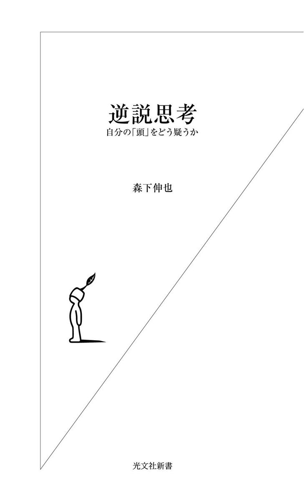
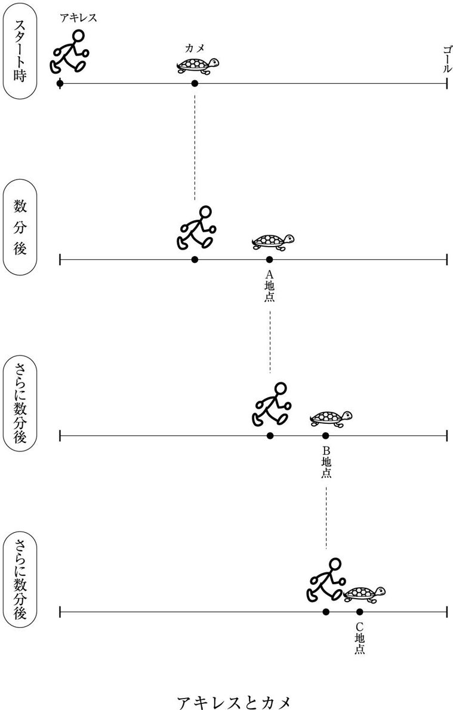
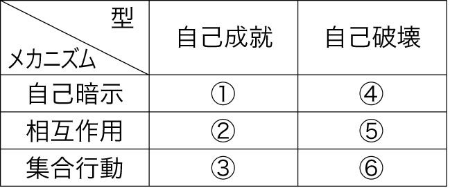

| 逆説思考～自分の「頭」をどう疑うか～ | |
| 森下 伸也 | |
| (2006) | |

私はつねづね、結婚式に招待され、スピーチを所望されたら、いっぺんでいいからこんなことを言ってみたいと思っている。
「新婦はお目が高い。その証拠に、こうしてまことにすばらしい伴侶を射止められたわけです。新郎の何がすばらしいといって、そのすばらしさは一目瞭然、ひとつの身体的特徴に集中しております。そうです、新郎ははなはだ頭髪薄く、薄いというより、ないに近い。顰蹙を買うことをおそれずに、ひとことで言えば、そう、新郎はハゲているのであります。
では、なぜそのことがすばらしいのか？ ふつう世間では、ハゲは美しからざる身体的特徴の代表のひとつとして、女性たちに敬遠され、あげくのはては笑いものにされる。だからハゲ男たちは、育毛剤をせっせとふりかけたり、かつらを被ったりと、涙ぐましいまでにモテるための努力をするわけです。
そのハゲのどこがすばらしいのか？ 簡単です。まさしく、そのモテないところです。ハゲなるがゆえにモテないのは新郎自身には悩みの種かもしれませんが、逆に新婦にとっては大きなハゲみであります。なぜといって、家族の基礎は夫婦円満にあります。
その大事な大事な夫婦円満を妨害し、ときとしては夫婦関係を崩壊に至らしめる最大の原因はなんでしょうか？ 言うまでもなく、それは浮気です。
浮気はどうして生じるのか？ 最大の原因は、当該の人物が異性にとって魅力ある存在、要するにモテるからにほかなりません。この場合、新郎がもしモテる男であるならば、すなわちそれは新郎新婦の将来に暗雲をもたらす要因となるわけです。もし新郎が美しく髪を風になびかせるイケメン男だったら、彼に言い寄る女性がつぎからつぎに現れて新婦を大いに心配させ、苦しめることでしょうし、いくら彼が貞操の誓いをたてても、いつその意志がくじけるかわかったものではありません。毎年毎年、年を追って離婚率はあがり、いまでは二分に一組が離婚する時代となっています。
その点、どうですみなさん、ご覧ください、新郎にはどう見てもまったくその心配がないじゃないですか。これだけ薄ければ、まず女性にモテる心配はない。彼の方から女性にいくら言い寄っても、まったく相手にされず、鼻先でせせら笑われるのが関の山でしょう。かくして新婦は、新郎がハゲなるがゆえにこそ大いなる安心を手にされたわけで、その慧眼に敬意を表するしだいです。以上要約すると、結婚するならハゲがいい、といったところでしょうか」
――いままで招待された結婚式で新郎がハゲであったことは一度もないから、このスピーチを披露する機会がまるでないのはたいへん残念であるが、それはそれとして、ここまでハゲを愚弄できるのは、言うまでもなく私が（かなり立派に）ハゲているからである。
だから、このスピーチにいささかの自嘲と自虐と居直りと負け惜しみがまじっているのはたしかだが、それ以上にある種の（深い実感のこもった）真理がふくまれていることは否定できまい。夫婦円満、家庭の平和を第一に考えた場合、どう考えても女性にとって、ダンナはイケメンよりハゲの方が間違いなく価値があるのである。
もちろん、おなじような意味で価値があるのはハゲに限定されない。「チビ」もそうかもしれないし、「デブ」もそうである可能性が高い。要するに、「イケメン」「長身」「スリム」といった外見は、一般的にそれ自体が価値あるものとされるのだが、それらは絶対的に価値あるものではなく、他の条件がおなじである場合（たとえば収入とか、趣味のよさとか、学歴とか）、ある観点（たとえば夫婦円満）から見ると、一転して負の価値に転じ、逆に「ハゲ」「チビ」「デブ」といった、通常は負の価値を帯びたものが価値あるものに転じるわけである。
もしそんなふうに考えられるなら、いままで悩んでいたハゲやチビやデブを逆手にとり、それらを自分のチャームポイントとして異性にアピールする厚かましい輩も出てくるかもしれない。
「ボクは見てのとおりのハゲだから、全然モテないの。でもその分、結婚しても浮気のおそれなしってわけさ。どう、そんな安全パイのボクと結婚してくれない？」――こんないびつなプロポーズ、さてどのくらい成功するものか。それはよくわからないが、まあしかし、いささかならざる現実主義的真実がそこにあることもたしかである。
新郎の側の話ばかりしているのも不公平だから、ほんとうなら新婦の側についても話をすべきかもしれない。しかし、そうなると、女性に関して口にしにくいことを多少は語らざるをえなくなるだろうし、一方、聡明なる読者は、すでに結論がおわかりであろうから、これ以上は立ち入らないでおこう。
要するに、新婦の側も事情はまったく新郎とおなじこと、ブス女（結局言ってしまった！）は、その伴侶にとってハゲ男と同様の価値を有するわけだ。
するとこうなろう。安心に満ちた幸福な夫婦とは、決して「世も羨む美男美女のカップル」などではなくて、何のことはない、ことわざで言うところの「割れ鍋に綴じ蓋」なのだ、と。
さてこの本、ハゲやブスといった、ひとの外見的弱点について延々と論じようというものではない。そうではなくて、いままでの話は本書のエッセンス部分を、ごくごく卑近な例でしめそうとしたにすぎない。
では、そのエッセンスとは何か。いま「ハゲ」が×から○、イケメンが○から×となったように、通常の価値観の一面性を暴露し、それを反転させてしまう思考のスタイルを、「逆説思考」という。この逆説思考をさまざまな角度から紹介し、読者のみなさんに慣れ親しんでいただくこと、さらにはそれを自家薬籠中のものとしていただくこと、これが本書の目指すところである。
もしも、さきの卑近な（卑俗すぎると言われる方もおありかもしれない）サンプルがお気に召したなら、どうぞさきへ進んでお読みいただきたい。お気に召さなくとも、太っ腹にお買い求めのうえ、ご自宅の書棚にでもほったらかしにしておいていただければ、著者としては十分幸福である。
目次
日本語でふつう「逆説」と訳される「パラドックス」は、古代ギリシアから伝わる古い言葉だ。ギリシア語で「パラ」は「～に反する」という意味の接頭辞、「ドックス」は「一般に正しいとされている見解」という意味の言葉だから、「パラドックス」は「一般に正しいとされている見解に反する見解」ということになる。
ふつう「一般に正しいとされている見解」のことを、われわれは「常識」とよんでいる。つまり「ドックス」は「常識」という言葉に置きかえられるわけで、そうなると「パラドックス」は「常識に反する見解」と言いかえられるであろう。ちょっとくどい言いまわしをすると、「一般に正しいとされている常識的な見解に反する見解」、それが「パラドックス」ということになる。
もし「パラドックス」が「一般に正しいとされている常識的な見解」に反していて、ただ間違っているだけなら、わざわざ取り上げて論じるにあたいしないし、現在まで言葉として生き残るのは不可能だったろう。では、どうして生き残ることができたのか。それは「パラドックス」がたんに「一般に正しいとされる常識的な見解に反している」だけでなく、「にもかかわらず正しい見解」だからである。
さらにくどいことになった。「一般に正しいとされている常識的な見解に反するけれども、それにもかかわらずやはり正しい見解」こそ「パラドックス」というわけである。以上のことを圧縮して表現すると、こうなる。「反常識の真理」、あるいは「脱常識の真理」、これが〈パラドックス＝逆説〉なのだ、と。
そこで、常識から自由になって、（あるいは）常識に逆らって考えることで真理を発見しようとする精神を「パラドックスの精神」、あるいは「逆説の精神」とよぶことにしよう。本書のいちばんの目的は、この「パラドックス＝逆説の精神」の種を読者のみなさんの脳味噌にまいて、将来それをたわわに実らせることである。
この種まきには、いろいろな作業がふくまれている。まず、〈パラドックス＝逆説〉とはどのようなものか、もっと詳しく具体的に説明しなければならない。常識から自由に、あるいは常識に逆らって考えるとはどのようなことか、実例をお見せする必要もあろう。また、〈パラドックス＝逆説〉の精神にはどんな意味があり、どんな価値があるのか、その説明もたいへん重要である。
そこで序章となる本章で論じるのは、〈パラドックス＝逆説〉の精神の価値と意義。パラドックスという言葉をまったく使わずに、しかし逆説の精神の絶対的重要性を、文明論的な視点で主張した福沢諭吉の思想を紹介するところから始めよう。
一万円札の顔、明治の大啓蒙思想家、福沢諭吉。『学問のすゝめ』が彼の古典的著作であることくらい、かなりデキの悪い中学生でも知っている。では読者のみなさん、ちょいと失礼な質問ですが、お読みになったことがありますか？ おそらく本書の読者には読書家の方が多かろうと思われるので、「ある」とお答えの方もかなりいらっしゃるにちがいない。しかし、それは世間的にはごく少数派であって、この古典、本気で読んでみようとするひとがほんとうに少ないのだ。
「なんとかして家出して自由になりたいものだ」と少年たちに思わせてしまう困った本『ハックルベリー・フィンの冒険』の著者マーク・トウェインは、さすがアメリカを代表するユーモア作家、こんなうまいことを言ったそうだ。
「だれでも知っているが、だれも読んだことのない本、それを古典という」――言い得てまことに妙である。読書離れのご時世、自分の本が「古典」の鬼籍に入ってしまっているのを見ながら、彼はきっと草葉の陰で苦笑しているにちがいない。けれども「古典」度では、ひとつ年上の福沢諭吉がはるかに彼をしのぐ。『学問のすゝめ』は、まるで「天は人の上に人を造らず......」という冒頭部分だけ残して、あとはまるで存在していないかのようなあつかいを受けているわけだ。
でも、せっかくの古典です。これを機会にぜひ読んでみてください。なにが魅力といって、読めば元気と勇気がわいてくる。大きな理由のひとつは、全篇これ溌剌たる漢文読み下し調の文体。だからわかりにくい、読みにくいとおっしゃる向き（けっこう多いかもしれない）には、意味なぞわからなくてもいいから、講談師にでもなったような気持ちで、大きな声を出して音読されることをおすすめする。何度も読むうち、だんだんと勢いのいいリズムが出てくる。同時に、気分が晴れ晴れとして、意味も少しずつほぐれてくる。以上、『学問のすゝめ』音読のすすめ。
もうひとつの大きな理由は、もちろん本の中身だ。つぎからつぎへと威勢よく、しかし心のこもった名文句がくり出されてくる。たとえば、なぜ学問が大事なのか、この本の趣旨を説いた一節（引用は岩波文庫版。以下同）。
「人民もし暴政を避けんと欲せば、速やかに学問に志しみずから才徳を高くして、政府と相対し同位同等の地位に登らざるべからず。これ即ち余輩の勧むる学問の趣意なり」
要するに、みんなが学問によって才徳を高めることで、はじめて民主政治が成立するということ。まさに福沢諭吉の啓蒙思想家たるゆえんである。
『学問のすゝめ』は全部で十七編から成り立っているが、私がいちばん気に入っているのは第十五編「事物を疑って取捨を断ずる事」。「事物を疑う」とは、常識であれ、慣習であれ、宗教であれ、あるいは、たとえ福沢自身が大いにその吸収・普及に貢献した西洋文明であろうと、軽々しく受け容れるのではなく、ほんとうにそれが正しいのかどうか、いったんは疑問に思ってみようということ、もっと積極的にいえば、「なんでも自分の頭でしっかり考えてみよう」ということ。そして「取捨を断じる」とは、正しいかどうか、信じていいかどうか決断するということである。
彼は「疑」こそ文明の源泉であると主張する。
「西洋諸国の人民が今日の文明に達したるその源を尋ぬれば、疑の一点より出でざるものなし。ガリレヲが天文の旧説を疑って地動を発明し、ガルハニ〔正しくはガルバーニ。十八世紀イタリアの解剖学者〕が蟆の脚の搐搦するを疑って動物のエレキを発明し、ニウトンが林檎の落つるを見て重力の理に疑いを起し、ワットが鉄瓶の湯気を弄んで蒸気の働きに疑いを生じたるが如く、何れも皆疑いの路に由って真理の奥に達したるものと言うべし」
福沢によれば、「疑」は学問的真理の出発点であるばかりではない。彼は、奴隷解放、宗教改革、植民地解放、女性解放などの例をあげながら、「疑」がまた「人事進歩」、すなわち社会の進歩の原動力でもあることを力説する（『学問のすゝめ』の発表当時、まだ「社会」という日本語は存在せず、福沢はそれを「人事」と表現している）。いわく、
「人事の進歩して真理に達するの路は、ただ異説争論の際にまぎるの一法あるのみ。而してその説論の生ずる源は、疑の一点に在りて存するものなり」。
ここで「異説争論」とは、おそらくディスカッションやアーギュメントやディベートの福沢流の訳語で、つまりは議論や討論のことだから、現代語に訳すとこんな感じになろう。
「社会が進歩するには、また人間が真理に到達するには、みんなが議論を闘わせるほか方法がない。しかし、そもそも議論は、議論に参加する者めいめいが固有の異なった意見を主張することではじめて成立するものだ。ではそういう意見はどこから生まれてくるかというと、それは各人が常識を疑ってみること、自分の頭でしっかり考えることから生まれてくるのだ」
要約すれば、「疑説論異説争論人事進歩・真理到達＝文明の発達」という流れだ。
『学問のすゝめ』より少しあとに書かれた、より理論的な、そしてその分「古典」度がより高い著作『文明論之概略』では、「疑」が「異端妄説」という言葉に置き換えられる。
「試に見よ、古来文明の進歩、其初は皆所謂異端妄説に起こらざるものなし。アダム・スミスが始て経済の論を説きしときは世人皆これを妄説として駁したるに非ずや。ガリレヲが地動の論を唱へしときは異端と称して罪せられたるに非ずや。異説争論年又年を重ね、世間通常の群民は恰も智者の鞭撻を受て知らず識らず其範囲に入り、今日の文明に至ては学校の童子と雖も経済地動の論を怪む者なし」（ルビは筆者。引用は岩波文庫版。以下同）
さきの言葉で翻訳するなら、異端妄説とは「めいめいが〈疑〉の心によって到達した一見珍奇な固有の〈説論〉」といったところであろう。そんな意味の異端妄説を、皆が持ち寄って異説争論を闘わせる、そういう年月が積み重なれば、おのずから古い常識や拙い意見は淘汰され、はじめは非常に奇異に聞こえた知者のすぐれた意見が世に広く受け入れられることになるだろう、そうやって文明は進歩するのだ、というわけである。
たしかに福沢の言うとおり、どんな真理もはじめは異端妄説だったにちがいない。進化論しかり、プレートテクトニクス説しかりである。
そこでこうなる。
「故に昔年の異端妄説は今世の通論なり、昨日の奇説は今日の常談なり。然ば則ち今日の異端妄説も亦必ず後年の通論常談なる可し。学者宜しく世論の喧しきを憚らず、異端妄説の譏りを恐るることなく、勇を振て我思ふところの説を吐く可し」
これはなんと気迫のこもった、なんと颯爽たる名言であろう。かつては異端妄説と言われたものがいまでは常識になっている（逆に言えば、かつての常識はいまでは珍説奇説）。だとすれば、いま異端妄説としてバカにされるような意見のなかからこそ未来の常識が現れてくるであろう（同時に、現在の常識は将来、珍説奇説としてバカにされる可能性がある）。だから、学問を修めようとするほどのひとなら、たとえ世間の人々にバカにされようが非難されようが遠慮することはない、勇気を出して正々堂々、自分の意見を言いなさい、というわけである。
こんな言葉を口にすることができるのは、もちろん自分を異端視・白眼視する世間の圧力を押し返しながら自分の道を切り開いていった福沢の自信が、そこにみなぎっているからであろう。
まとめてみよう。福沢の考えた文明進歩の道筋はおおよそこんな風だ。まずあるのは、世間一般の常識や通念を自明視せず、何かにつけて疑問や不思議の念をいだくこと。それを出発点に、自分の頭でしっかり考えぬくことによって固有の見解に到達すること。世間の人々からどんなに異端妄説と言われても、自己の見解を正々堂々と主張すること。そうして各人が異端妄説を闘わせ、異説争論を巻きおこすこと。すると異説争論のなかで自然にすぐれた見解が勝ち残って、新しい常識や通念が形成される。これらのプロセスが歴史のなかでくり返されることによって、しだいに人間は真理に近づき、社会は改良されてゆく。これが文明の進歩だというわけである。
しかし、ひとによっては、こんな心配をするかもしれない。これは悪くすると、ただ非常識なだけの変人奇人に対する鼓舞奨励、いたずらに奇を衒うことのすすめとなり、それでなくても増長しがちなそのたぐいのひとびとが社会におよぼす迷惑を、ますます拡大することにならないだろうか、と。
たしかにそのような面があることは否定できないのだが、そんな心配をする必要はまるでない。なぜなら、その手合いは、もともとひとが何を言おうがおかまいなしに、自分のわがままをすでに精一杯くり広げているので、こちらが制止しようが賞賛しようが、社会におよぼす彼らの迷惑度にはなんらの違いも生じないからである。一方、ひかえめで遠慮がちな良識ある人々にとって、福沢諭吉の思想は大きな励ましの力となり、前へ前へと背中を後押ししてくれる言葉となるであろう。
さてここで「パラドックス」にもどろう。もうすでにお気づきのように、福沢諭吉の言う異端妄説とは、寸分たがわず、反常識、あるいは脱常識の真理としての〈パラドックス＝逆説〉にほかならず、彼の説く「異端妄説のすすめ」は、そのまま「〈パラドックス＝逆説〉の精神のすすめ」にほかならない。パラドックスの精神から〈異端妄説＝パラドックス〉が発見され、多数のパラドックスのせめぎあいから異説争論が生じ、それを原動力にして人類社会は進歩するというわけである。ここにまさしく、パラドックスの精神の文明論的重要性がある。
以上、パラドックスの精神が天下国家に対してもつ意義を、福沢諭吉という大御所にいわば代弁してもらったのであるが、なかには、こんなわがままな読者の方もいらっしゃるにちがいない。いわく、「天下国家なんかどうでもいい。自分の役に立つんでなきゃ」と。たしかにそれはそのとおり、とは言いかねるが、ご心配にはおよばない。パラドックス、じつは社会的効用とおなじくらい個人的な効用があるのだ。それを列挙してみよう。
第一に、面白い。これはいちばん大事なことだ。逆説思考とは要するに、これまで常識にしたがって「ＡはＢだ」と思ってきたことが、だんだん考えるうち「ＡはＢではなく、むしろが正解なんだ」と思えるようになり、場合によっては、その結果、ものの見方、世界の見え方が変化してゆく経験である。よく「目からウロコが落ちる」と言うが、パラドックスの発見は何よりもまずそうした、実用的効能を凌駕する快楽の経験にほかならない。
第二に、頭がよくなる（はずである）。生物学に「使う器官は進化し、使わない器官は退化する」とする「用不用説」というのがあるが、たしかにテレビの生物番組などを見ていると、生物の身体は驚くほど緻密に環境に適合して形態を進化させる一方、たとえば洞窟で棲息する動物からは視力が消え、眼が痕跡化していたりする。頭脳も同様で、常識に逆らってやろうと、たえずカチャカチャ作動させているうち、だんだんと動きが機敏、かつ正確になってくる（にちがいない）。肉体には金属疲労があるが、頭脳は磨けば磨くほどシャープになるのだ。その逆に、年がら年中ボーッとなんにも考えず、とことん怠けさせておいたら、ある日ものすごく頭がよくなっていた、なんてことはどう転んでもありえまい。
第三に、ボケ防止になる。日本は世界一の長寿国だ。だが残念なことに、長生きするうちだんだんボケてくるひとがたくさんいる。世界一の長寿国は世界一のボケ大国ということでもある。その結果、介護をめぐって、深刻な個人的、また社会的な問題がさまざまに生じている。これらの問題を解決する重要な手段のひとつは、言うまでもなくボケ予防のノウハウを確立して、それを広く啓蒙しつつ、政策に取り込むことだ。
大脳や指先をこまめに動かすことは、ボケ予防の最善の手立てのひとつである。大脳の機能低下を予防するうえで、四則計算や料理、カラオケが有効であることはよく知られているが、逆説思考は大脳を機動させることズバリそのものであるから、それら以上に有効であることは間違いない。
古来、哲学者たちには並外れた長生きが多いが、これはそのよい証拠になろう。逆説思考の愉快さに人類で最初に気づき、二〇〇〇年以上もハマりつづけてきたのは彼らであり、さしあたって何の役にも立たないことを、ああでもない、こうでもないと考えつづけてきたその姿は、一見まるで実用性の欠如した逆説思考こそ、ボケ防止の王道であることを教えてくれるであろう。かくして、若いうちから逆説思考に慣れ親しむことは、老後の人生に幸福をあたえ、国家の財政難解消に大きな貢献をはたす（可能性がある）。
第四に、ユーモア・センスがアップする。ユーモアを自在にあやつる能力、すなわちユーモア力は、たんに人間関係を明るく豊かにしてくれるにとどまらず、厳しい人生行路を力強く切り拓いてゆくために不可欠なサバイバル戦略である。あとで述べるように、ユーモアは意外性の衝撃から生じて笑いをもたらす。逆説思考は、常識に痛撃をくわえて意外な真理を見出そうとするものであるから、そこには多くの場合、期せずしてユーモアと笑いが生じる。したがって、逆説思考の達人はしばしばユーモアの達人ともなって、自らを楽しませるのみならず、周囲をも大いに喜ばすであろう。
第五に、みんなに一目置かれるようになる。同僚や仲間たちと共通に遭遇している問題について、もし意外な角度から補助線を引いて解決の糸口をしめしてみせることができるなら、彼らから感謝と賛嘆のまなざしを浴びることになるだろう。この意外性に富んだ補助線こそ、逆説思考の所産にほかならない。
そして、もしこれが何度も積み重なるなら、周囲のみんなに一目置かれ、頼みにされる人間となることができるであろう。いるのかいないのかわからないような、いてもいなくてもどちらでもかまわないような、存在感の乏しい人間となるのがいいか、みんなに敬意をいだかれるような、しっかりとした存在感のある人間となるのがいいか。私自身は前者の道もそう悪くはないと思うが、もし後者の道をめざすなら逆説思考に親しむに如くはない。
というわけで、天下国家、社会と文明のためのみならず、一人ひとりの個人にも大きな恩恵をあたえる逆説思考、以下において、それが何であるかをだんだん詳しく見ていくことにしよう。
序章では〈パラドックス＝逆説〉を、その原義にもとづきながら、「一般に正しいとされている常識的な見解に反するけれども、それにもかかわらずやはり正しい見解」、あるいは「反常識の真理」「脱常識の真理」と、ごく大まかに定義したが、ここではもう少し立ち入ってこの概念を吟味し、本書で言うところの〈パラドックス＝逆説〉がいかなるものかを明らかにしておこう。
図書館やインターネットで検索してみればすぐわかるように、「パラドックス」と題された書物は何冊も出ている。その大半は哲学か論理学、あるいは数学の書物である。もともとパラドックスを発見し、パラドックスという言葉を発明し、ずっとそれにこだわりつづけてきたのは哲学であり、しかも論理学はその一部、また数学は論理学と境目も判然としないような兄弟分の学問だから、それは当然と言えば当然のことだろう。
論理学や数学は普遍的な真理を追究する学問の代表だから、これまた当然のことながら、そうした種々のスタンダードなパラドックス本は、それぞれ記述のスタイルに工夫が凝らしてあるとはいえ、パラドックスの概念も書かれている内容も、だいたい似たりよったりである。あらかじめ断っておくが、本書で言うところのパラドックスは、それらの書物に書かれているものとは相当に異なっている。
では、どこがどう違うのか。それを理解していただくために、まず哲学や論理学や数学におけるパラドックスがどんなものかを見ておかなければならない。
哲学や数学や論理学、すなわちパラドックスを専門的にとりあつかう学問領域では、パラドックスは「正しい前提から正しい推論を経て間違った結論（たとえば矛盾）に至る現象」（三浦俊彦『ラッセルのパラドクス』岩波新書）と定義される。前提が正しく、推論も正しければ、当然正しい結論に導かれるはずなのに、なぜか間違った結論にたどりつく。
どうしてこんな奇妙な事態が生じるのか。知性に大きな信頼を寄せる哲学者たちにとって、それはひどくイライラさせられる忌々しい事態であると同時に、その奇妙さは彼らの知的好奇心をかき立て、その謎を解明しようとする意欲が知的なチャレンジング・スピリットをよびおこす。だから、パラドックスは哲学の大問題となってきたというわけである。
では、具体的にどういうものが哲学的パラドックスなのか。パラドックスを主題とする哲学的文献で、かならず取り上げられている有名な初級パラドックスを二つ紹介しよう。
ひとつは「時間のパラドックス」、あるいは「運動のパラドックス」とよばれる「アキレスとカメのパラドックス」である。アキレスはギリシア神話の英雄で、地上でもっとも足の速い人間、いわばギリシアの韋駄天である。彼が出てくるくらいだから、このパラドックスは古代ギリシア人が考案した、世界最古のパラドックスのひとつである。一方、カメは古今東西、極端に足の遅い「のろま」と決まっている。
アキレスとカメ、韋駄天とのろまが事もあろうに駆け比べ、競走をすることになった。カメはウサギには勝ったことがあるが、さてアキレスはなにせ超快速、分が悪すぎる。そこでいくらかアドバンテージをもらうことになった。逆に言えば、アキレスはいくらかのハンディを与えられることになった。号砲が鳴り、ゴール地点めざして両者同時に駆け出すわけだが、カメはアキレスより数メートルか数十メートルか前、つまりゴールに近い地点からスタートするのだ。
じっさいに競走すれば、アキレスはアッという間にカメを抜き去り、ほどなくゴールに達するであろう。そして、カメはそのとき、スタート地点とさほど変わらない地点をノロノロ、ヨチヨチと歩いているにちがいない。常識的には、これがまあ正しい推論というものである。
ところが、古代ギリシアにはとんでもないヘソ曲がりがいて、この推論にイチャモンをつけた。アキレスがカメを追い抜いてさきにゴールに達する目前の現実は、じつは幻影ではないのかと主張したのである。彼は、アキレスはカメを追い抜くどころか、追いつくことさえ不可能なはずだと言う。それはこんな理屈である。
両者が出発していくらかの時間がたつと、アキレスはカメの出発地点に達する。そのときカメは、いくら足が遅いといっても、いくらかは前方に進んでいるはずである。それをＡ地点としよう。それからいくらか時間がたつと、アキレスはＡ地点に到達することになる。そのときカメは、いくらのろまといっても、Ａ地点よりはいくらか前方にいるはずである。それをＢ地点としよう。それからいくらか時間がたつと、アキレスはＢ地点に到達することになる。そのときカメは、いくらのろまといっても、Ｂ地点よりいくらかは前方にいるはずである。こんどはそれをＣ地点としよう。それからいくらか時間がたつと、アキレスはＣ地点に到達することになる。そのときカメは......。
もうおわかりであろう。永遠にこれの繰り返し。おそらくアキレスはカメにどんどん近づくだろうけれども、永遠に近づきつづけるだけで決して追いつくことはない。どうだい、ちがうかい？ 私の言ってること、どこが間違っているか言えるかい？ 言えないなら、アキレスがカメを追い抜いてゴールに達するという目前の現実は、じつは夢か幻なのだと認めなさい――というのがギリシアのヘソまがりの理屈である。
はじめてこの理屈をお聞きになった方は、きっとキツネにつままれたような（といっても、だれもそんな経験をしたことはなかろうが）摩訶不思議な感じをいだかれるであろう。もしそうでなければ、なんだかイライラするような、忌々しいような感じである。それはなぜかと言えば、まさしくヘソまがりの理屈が一点の非のうちどころもない、すじの通った推論だからである。すじの通った推論を重ねれば、最後にはかならず理にかなった結論に着地できるはず、という無意識の信念がわれわれにはある。
ところが、すじが通った理屈とはいえ、どうしても最終的には受け容れがたい。何か間違っている気がする。これについて、多くの読者は、きっとこんなふうにおっしゃるであろう。
「それはどこかとらえ方が間違った議論であって、アキレスの出発点からゴールまでの距離、アキレスの出発点とカメの出発点の距離、そして両者の速さがわかれば、いつどの地点でアキレスがカメを追い抜くか、はっきり計算できるじゃないか」と。
そう、そのとおり、たしかに計算できるし、そのくらい計算できなければ、私立中学の入学試験にとうてい合格できないだろう。

けれどもそれは、あくまで数学の言葉に置き換えたから計算できるのであって、それでは「どうしてアキレスはカメを抜けるのか」というヘソまがりの、素朴だがすじの通った、またある意味で根源的な疑問に答えたことにちっともならない。じつはヘソまがりの理屈は、ヘソまがりとおなじく、われわれが日常使用している言葉と論理という土俵の上では、反論するのが至難のわざ、というより不可能な主張なのである。反論しようのない正しい推論を重ねて、ついには（どう考えても）間違った結論に至るという点で、まさしくここに典型的な哲学的パラドックスがある。
ついでに言えば、このパラドックス、非常に重要な問題提起になっている。われわれが日ごろなじんでおり、ヘソまがりもそれを根拠にして議論を展開している日常の言語記号を日常言語といい、数学や厳密に定義された自然科学の術語など、人工的につくり出された言語記号を人工言語という。運動や時間などの諸現象を厳密に論じようとするうちに、大きな矛盾に陥らざるをえないという意味で、日常言語には非常に大きな欠陥があり、逆に、それらを論じるのに、人工言語はまことに好適だということである。
もうひとつは、「ウソつきのクレタ島人」をめぐるパラドックス。「クレタ島」というエーゲ海の島の名前からわかるように、これまた古代ギリシア人の発案になるものである。
Ａさんがこう言った。
「クレタ島人は煮ても焼いても食えない連中だ。彼らはいつでもかならずウソをつく」
これを聞いて、「そんなことあるのだろうか」と思ったＢさんは、Ａさんにこう聞いてみた。
「Ａさん、あなたは彼らのことをえらくよくご存じのようだが、ちなみに、あなたはどちらの方ですか？」
すると、Ａさんは笑いながらこう答えた。
「クレタ島の人間です」
これを聞いたＢさん、「あ、そうなんですか」と応答しつつも、なにか釈然としないものを感じて、その場で考えこんでしまった。
Ｂさんはこう考えたのだ。
「もしＡさんの言うことが正しいなら、つまりほんとうにクレタ島人はいつでもウソをつくというのがホントなら、Ａさんの言うことは間違っている。なぜなら、Ａという、ホントのことを言うクレタ島人がいるのだから。でも、Ａさんの言っていることがウソなら、Ａさんは正しい。なぜなら自らクレタ島人はウソつきということの生き証人となって、ウソをついているわけだから。だが待てよ......、そのようにしてＡさんの言っていることが正しいとしたら、Ａさんの言うことは間違っている。なぜなら、Ａさんという、ホントのことを言うクレタ島人が......。あー、頭がこんがらがって、わけがわからなくなってきた！」
厳密に言うと、じつはＢさんの推論にはちょっとしたミスがある。なぜかといえば、Ａさんの言っていることがウソだとして、それはＡさんのその言葉がウソだというだけのことで、クレタ島人がみなウソつきだということの証明になるわけではないからである。とはいえ、ここは話の面白さを優先させてこの論理ミスには目をつぶり、Ｂさんの推論の延長上で話を進めよう。
Ａさんの発言を〈Ａ〉と置き換えてみると、
「もし〈Ａ〉がホントなら〈Ａ〉はウソ、〈Ａ〉がウソなら〈Ａ〉はホント」、
あるいは、
「もし〈Ａ〉が正しいなら〈Ａ〉は間違っている、〈Ａ〉が間違っているなら〈Ａ〉は正しい」
という事態。
もっと縮めて表現するとこうなる。
「〈Ａ〉はホントならウソ、ウソならホント」
「〈Ａ〉は正しいなら間違っており、間違っているなら正しい」
さらに一般化して圧縮すると、
「Ａ＝ＢならＡ≠Ｂ、Ａ≠ＢならＡ＝Ｂ」
という奇妙な事態。これがこのパラドックスのエッセンスだ。
わけがわからなくなるはずである。われわれ人間の論理的思考は、「Ｘ（どんな言葉でもよい）はホントかウソか、正しいか間違っているかのどちらかである」ということ、また「ＡはＢであるか、Ｂでないかのどちらか（つまり、Ａ＝ＢかＡ≠Ｂかのどちらか）である」ということを大前提にして進められる。たとえば、論理的思考の基本をなす三段論法の単純な例をひとつあげてみよう。
「人間は死ぬ」「私は人間である」「ゆえに私は死ぬ」
合理的・論理的な思考とは、このような推論をいくつも組み立てていく作業だ。
ところが、「人間は死んだり死ななかったりする」とか、「私は人間であると同時に人間でない」とかしたら、どうなるだろう。「ゆえに......」の部分がどうしても出てこない。いかなる結論も導くことができず、推論を組み立てる作業がまったく進められないのである。逆に言えば、推論を進めるためには、「人間は死ぬか、死なないか」のどちらか、「私は人間であるか、人間でないか」のどちらかでないといけないわけだ。
だとすると、「ウソつきのクレタ島人」のパラドックス、煎じ詰めれば、「Ａ＝ＢならＡ≠Ｂ、Ａ≠ＢならＡ＝Ｂ」というパラドックスは、論理の自壊とでもよぶべき事態、合理的・論理的な推論を進めた結果、その推論の大前提そのものが崩壊してしまう非常に困った事態だと言わなければならないであろう。これまたまさしく、「正しい前提から正しい推論を経て間違った結論（たとえば矛盾）に至る現象」の典型である。
ところで、よく考えてみると、「ウソつきのクレタ島人」の話がパラドックスに陥るのは、「クレタ島人はいつでもかならずウソをつく」と発言したのが、クレタ島人である場合に限定される。発言したのが佐渡島の人だったり、「ウソをつく」とされるのが淡路島の人だったりしたら、こんなややこしい事態はまったく生じない。発言はウソかホントか、どちらかにきっちりと落ち着くことになる。ややこしいことになるのは、クレタ島人がクレタ島人について語るときだけ、つまり自分に言及するときだけ、あるいは発言の内容を、その発言自体にあてはめるときだけに限定されるので、これを「自己言及的パラドックス」とよぶ。
自己言及的パラドックスにおいて、発言者は自分で自分を否定する結果になるわけで、自己矛盾に陥り、自己崩壊するこのトリッキーな感覚が、論理愛好家にとっては悩みの種であると同時に、奇妙なフェロモンの源泉となる。
もちろん自己言及的パラドックスが発生するのは、「クレタ島人はウソつきだ」とクレタ島人が語るときだけではない。「佐渡島人はウソつきだ」と佐渡島人が語るとき、「淡路島人はウソつきだ」と淡路島人が語るときにも生じるし、一般に、「○×人はウソつきだ」と○×人が語るときには、いつでも自己言及的パラドックスが生じることになる。
さきほどＢさんの推論にはちょっとしたミスがあると指摘したが、まったくミスのない、しかし最もシンプルな自己言及的パラドックスを紹介しておこう。それは、
「私の言うことはウソだ」
というものである。どうです、みなさん、この言葉はホントでしょうか、ウソでしょうか。ホントならウソ、ウソならホント、ホントならウソならホントならウソなら......と無限に循環が続くのがおわかりでしょう？
高等学校の英語の時間に、
There is no rule without exceptions.（例外のない法則はない）
というフレーズを暗記させられた覚えがあるが、これにも自己言及的パラドックスが生じる。「一般に○○だ」と語るのが法則だとしたら、「例外のない法則はない」というのは立派にひとつの法則である。だから、この法則に、この法則自体をあてはめることができる。すると、こうなる。
「もし、ほんとうに『例外のない法則はない』としたら、『例外のない法則はない』という法則には例外がないのだから、『例外のない法則はない』という例外のない法則がある」ということになる。するとなんと、「例外のない法則はない」という法則に例外ができてしまう、つまり、やはり「例外のない法則はない」わけで、するとやっぱり「例外のない法則はない」という法則は正しいわけだが、もしほんとうに正しいとすると......というところで、これまた無限の循環、堂々巡りに入ってゆくことになるわけだ。
内容的にはこれと重なるところが大きいが、「相対主義のパラドックス」といわれるものも自己言及的パラドックスになる。
相対主義というのは、世に真理と称されているものはじつはみな永遠の真理ではなくて、ＴＰＯ限定つきの相対的な真理にすぎない、という考え方のこと。「所変われば品変わる」のように、時代や場所が変わると何が正しいとされるか、価値観や真理のありかがちがってくるという考え方である。ごく一般的には妥当なものと思えるこの考え方だが、どうしても自己言及的パラドックスを避けられないために、厳密には成立しえない。なぜか。
自己の信念に確固たる自信をもつ相対主義者がこう言ったとしよう。
「いかなる真理も相対的な真理にすぎず、永遠不変の絶対的真理なぞは存在しないのだ」
この発言に興味をもったひとが、「真理」とよばれているありとあらゆることをしらみつぶしに調べてみた。そこでわかったのは、発言は正しく、すべての真理は相対的な真理にすぎないということだったとしよう。
すると、こうならないだろうか。「すべての真理は相対的な真理にすぎない」というのは、絶対的な真理なのだ、と。ややこしい表現をするとこうなる。もし、ほんとうに「すべての真理は相対的な真理にすぎない」としたら、「すべての真理は相対的な真理にすぎない」という絶対的な真理があることを認めなければならない、と。そう言われると、相対主義者はウーンと考えこむにちがいない。
相対主義者をギャフンと言わせるには、こんな手もある。相対主義者の発言を聞いたら、こう言ってやればいいのだ。
「へえー、そうなんですか。でもヘンですねえ。もしそうだとしたらこうなりませんか？ もしほんとうにすべての真理が相対的な真理にすぎないのであれば、その『すべての真理は相対的な真理にすぎない』という真理も相対的な真理にすぎないわけで、つまりすべては相対的というのも相対的だというわけで、するとそれは事実上、絶対な真理が存在することをお認めになっていることになりませんか？」
そう、そのとおり。かくして相対主義者は、徹底して厳密であろうとすると、絶対的な真理の存在を認めざるをえないのである。
以上、「アキレスとカメ」と「ウソつきのクレタ島人」を例にして、時間（運動）のパラドックスと自己言及的パラドックスを紹介した。パラドックスを論じた本は一般に、このような初歩的なものを出発点にして、だんだんと複雑に入り組んだ高度なパラドックスの森に分け入ってゆくという展開をとる。
「アキレスとカメ」のところで見たように、日常言語は時間や運動を厳密に考えるには不適切なために、数学という人工言語を用いなければならないわけだが、そうしてつくり出された人工言語を矛盾のないシステムにしようとすると、こんどは人工言語自体に、たとえば自己言及的パラドックスのような新たなパラドックスが生じて、システムを破綻させてしまったりする。このようにして哲学者や数学者たちは、ひたすら厳密な論理を追い求めるうち、新しいパラドックスを発見しては解決し、発見しては解決するという格闘の歴史を続けてきた。だからパラドックスを論じた哲学や数学の本には、当然のことながらその歴史を反映して、人工言語にまつわる高度なパラドックスが満載されているわけである。
哲学書でも数学書でもない本書はしかし、その道をとらない。いや、じつは、とりたくてもとれない。それだけの素養と知能が著者には致命的に欠けているからだ。
けれども、もっと重要なのはめざしているもの、あるいは志向の違いである。いま述べたような理由で、哲学や数学系のパラドックス本は、さながら論理パズル集のようなものに仕上がり、それはそれでそういうパズルが大好きな、論理マニアみたいなひとにはこたえられないものとなるし、厳密に思考するための非常によい訓練になるのもたしかなのだが、どうしても内容が抽象的で、実生活の知恵、あるいは具体的な人生知に通じる面白みが決定的に欠けてしまうのだ。そう、まさしく本書がめざすのはそこ、〈パラドックス＝逆説〉を通じてのみ達しうる「人生知」というところにある。
われわれが日常生活のなかでさまざまな判断を下すとき、たいていの場合、判断のよりどころにしているのは常識的知識である。無数の常識的知識が頭のなかにあって、われわれはそのなかから、その都度その都度、その場にふさわしいものを選び出し、それをよりどころにしてさまざまな種類の判断を下しているわけだ。だから、日常生活をおくるうえでさしたる困難を感じていないとすれば、おそらくそれは常識的知識がうまく機能していること、ほとんどの常識的知識がまずまず正しく信頼できることを意味している。
そのような意味で、正しいものとして常識をとらえるなら、「正しい前提から正しい推論を経て間違った結論に至る現象」としてのパラドックスは、こう言いかえることができるだろう。すなわち、「常識的知識から常識的推論を経て、常識ならざる結論に至る現象」。ここでいう「常識ならざる結論」はもちろん間違っていてはならない。正しくなければならない。つまりはそれが本書におけるパラドックス、「脱常識の真理」としての〈パラドックス＝逆説〉である。
日常の常識的知識から出発し、常識的推論を経由することによってたどりつくわけだから、「脱常識の真理」は日常言語で語られなければならない。論理の厳密さそのものをほとんど自己目的として追求する哲学的・数学的パラドックスの探求とちがって、いわば常識の向こう側にくぐり抜ける愉楽を味わうこと、またそれと同時に、人生知を豊かに深めることが本書におけるパラドックス探求の目的だから、わざわざ数学や論理記号などの人工言語を用いる必要はないのである。
逆説思考は、読んで字のごとく「とにかく常識の逆をいこう」というのが基本だから、その思考パターンは、わりと単純に表現することができる。常識が「ＡはＢだ」（Ａ＝Ｂ）というなら、「ＡはＢでない」（Ａ＝）というのがパラドックス思考。主題となるもの（Ａ）の性質、あるいは属性（Ｂ）を転倒させ逆向きにとらえるので、転倒思考とよんでおこう。
ついで、常識が「ＡならＢだ」（ＡＢ）というなら、「Ａならだ」（Ａ）というのが逆説思考。あるものとあるものの因果関係を逆にとらえるので、逆因果思考とよぶことにしよう。これはじっさいには、転倒思考と厳密に区別することがむずかしい。
もうひとつ、常識が「ＡならＢだ」（ＡＢ）というなら、「むしろＢだからＡだ」（ＢＡ）というのが逆説思考である。あるものとあるものの因果関係を反転させてとらえるので、因果反転思考とよぼう。
以上、転倒、逆因果、因果反転と、逆説思考には三つばかりの基本パターンがあることがわかる。それぞれ、わかりやすい例をひとつずつあげておこう。
■転倒思考
まずは転倒思考。たとえば「戦争は悪である」というのが常識だとすると、「戦争は善である」とするのが転倒思考だ。「戦争は悪である」にきまっているのに、なぜそんな思考が必要かといえば、「戦争は悪である」と考えているだけでは戦争をなくすことができないからである。悪である戦争をほんとうになくそうと思うなら、戦争がいつまでもなくならない理由を考えなければならない。
どうしてなくならないのかといえば、戦争、少なくともある種の戦争は善であるとか、利益になるとか、面白いとか思うひとたちが存在するからだ。テロリストを絶滅するための戦争、宗教的正義のための聖戦、民族独立のための戦争、そのうちのどれが許され、どれが許されないのか。また戦争は悪であるが、ではナチスのような巨悪を滅ぼそうとする戦争も悪なのか......などという自己言及的パラドックスをふくんだ疑問もわいてこよう。そしてこう考えていくうち、戦争がときには必要悪となり、場合によっては善になるのだと思うひとも出てくるであろう。
一方、戦争では莫大な資源と金銭が蕩尽されるが、それで大もうけする「死の商人」たちがいる。軍需産業にとって戦争そのもの、あるいは戦争の可能性をふくんだ敵対的国際関係こそ、利益の源泉なのである。
さらにはこうも考えられる。日本の国内では、現在ほんものの戦争はもちろん行われていないが、サバイバル・ゲームと称する本格的な戦争ごっこが大好きな大人はけっこういる。おそらく、彼らは擬似的にではあるが、生きるか死ぬかという戦場ならではの高揚感や緊張感、また軍隊ならではの規律感覚や連帯感を味わいたがっているのだろう。なかにはそうした思いが高じて、じっさいに自衛隊や外国の外人部隊に入るひともいる。じっさい、ほんものの戦場を経験したひとたちの手記などを読むと、そうした非日常の魅力が深い郷愁をこめて語られていることがある。
また、戦争映画やアクション映画が大好きなひとたちは、サバイバル・ゲームを趣味とするひとたちよりはるかに多い。前者を、後者がいくらか薄まったタイプの戦争好きと見なすなら、なんと多くの戦争好きが世の中にはあふれているのだろう。戦争がなかなかなくならないはず、だって「戦争は悪である」などと口先では言いながら、人間じつはみな戦争が大好きなんだから、と思わせるほど、「戦争大好き症候群」はかなり多くのひとに見られるのである。
ここまで考えて、「戦争は悪である」などと常識のお念仏をくり返しているだけでは、とうてい平和への力にはならないこと、戦争をなくすのがいかにたいへんかがようやくわかりかけてくる。ひとたびは常識にさからって、「戦争が善である」可能性を考えることによって、真実に近づくことができるのである。
■逆因果思考
つぎは逆因果思考。戦争の例は重かったから軽い例でいこう。
「急がば回れ」ということわざがそれ。「急ぐ」と「回る」は、正確には因果関係ではない。「急ぐ」は目的で、「回る」はそのための手段だから、「目的論的関係」というべきか。とはいえ、目的論的関係というのは、先取りされた結果（＝目的）を生じさせるために、その原因となる何かを行うということだから、まあ因果関係の一種ではある。
さて、ここでの「急ぐ」は「何らかの目的を早く達成すること」という意味、また「回る」は「ゆっくり落ち着いてやる」という意味であり、したがって「急がば回れ」とは、「早く目的を達成したいなら、あわてず急がず、ゆっくり落ち着いてやれ」という意味だ。「急いては事を仕損ずる」ということわざがあるが、言わんとするところはおよそおなじで、「早くしようとして急ぐと、どうしてもあわてて失敗してしまうから、かえって遅くなってしまう。逆に、ゆっくり落ち着いてやれば失敗も生じにくいから、かえって早くできる」ということだ。
つまり、このことわざは、「急ぐ早くできる」という一般常識を否定して、「急ぐ遅くなる」＝「回る（ゆっくりやる）急ぐ（早くできる）」という逆因果を主張し、それを目的論的に言い換えて、「急ぐなら（＝早くしたいなら）、回りなさい（＝ゆっくりやりなさい）」と説いているわけである。
■因果反転思考
最後に因果反転思考。それが鮮やかに表れた有名な言葉がある。
「人間は悲しいから泣くのではない。泣くから悲しいのだ」
ジェームズ＝ランゲの行動感情理論である。なかなか面白い。ふつうは「悲しい」という感情があり、それが原因となって「泣く」という〈行動＝身体現象〉が生じる、つまり「悲しい（感情）泣く（行動）」という因果関係を考える。たしかに、たいていはそのとおりなのだが、その逆もまた真なり。何かちょっとしたことで涙が流れはじめるうち、だんだんとほんとに悲しくなってますます泣けてきて、ついには号泣にいたるということがよく起きる。そこまでくると、「悲しい（感情）泣く（行動）」よりも「泣く（感情）悲しい（感情）」という因果関係の方が、事態を正確に表現するようになっている。原因と結果が入れ替わってしまっているわけだ。
興味深いことに、怒りという感情や笑いという身体現象にも、まったくおなじような性質があるのだが、それらについては、またあとで論じることにしよう。それはそれとして、たとえばこのように、原因と結果の関係を反転させることによって、より正しい認識に近づこうとするのが、逆説の重要なメソッド、因果反転思考なのである。
＊
さて、転倒思考、逆因果思考、因果反転思考と、逆説思考の三つの基本パターンを語り終えたところで、これを土台にして、人生知につながる〈脱常識の真理＝パラドックス〉発見の旅に出かけるとしよう。
前章の終わりで、「急がば回れ」ということわざを例にして逆因果思考を説明したが、たとえばこのように、ことわざには逆説含みのものがけっこうたくさんある。私はかねてから、日本のことわざには、「寄らば大樹の陰」「寝た子を起こすな」「長いものには巻かれろ」「出る杭は打たれる」など、大勢順応主義、事なかれ主義のものが多いという偏見をいだいていたが、いわば人生知の歴史的結晶であることわざは、よく調べてみると、それ以上に逆説好き、まさに「逆説の宝庫」と言えるほどなのである。
この章では、そうした逆説的ことわざを見ていくことにしよう。祖先たちの知恵から逆説的思考を学ぼうというわけである。
最初に取り上げるのは「人間万事塞翁が馬」、逆説をふくんだことわざというより、逆説的思考の体現者、あるいは「パラドックスじいさん」にまつわる故事を語ることわざである。
日本人ならたいてい耳にしたことのある有名なことわざだが、中国産である。いまから二一〇〇年ばかり前、中国・前漢の時代に、劉安という王様が編纂した『淮南子』という本に出てくる面白いおじいさんの話だ。彼の名前が「塞翁」。翁はもちろん「おじいさん」、「塞」は中国の辺境地をあらわす。辺境の地に住むおじいさんだ。
塞翁は一頭の馬を飼っていた。あれこれと便利に使っていたのだが、どういうわけか、ある日プイッとどこかへ出ていったきり帰ってこない。何日たっても帰ってこないので、家出してしまったのだと考えるほかはない。だから、近所の人たちはみな、さぞかし塞翁が落胆しているだろうと同情し、彼をなぐさめようとしてこう言う。
「塞翁さん、このたびはほんとに残念でしたねえ。あんなによく役立つ馬、なかなかいませんもんねえ」
すると塞翁、わりと平気な顔をしている。答えていわく、
「いやいや、ご同情ありがとうございますが、ご心配にはおよびません。案外これが、なんぞの吉兆かもしれませんて」。
これを聞いた近所の人たちはどう思ったろうか。「強がりなのか、負け惜しみなのか、ほんとにそう思っているのか、いずれにしても変わったじいさんだ」なんて言い合ったにちがいない。
ところがしばらくたったある日、家出した馬がどこからともなく帰ってきた。帰ってきただけでもうれしいのに、どこかで仲良くなったのだろう、もう一頭の馬を連れて。塞翁はひとたび失った財産を取り戻したばかりか、ひと財産増やしたわけだ。
おまけにこの馬に乗ってみると、まことに素直で、しかも快速、たいへんな駿馬である。近所の人たちは塞翁にこう言った。
「よかったねえ、おじいさん。こんなにいい馬を棚からボタ餅みたいにさずかって、あんたは幸運だ。馬を失くしたのが吉兆なんて強がり言ってたけど、ほんとにそうなったんだねえ」
塞翁はしかし、なぜか浮かない顔をして、こんなことを言う。
「いやあ、そうかねえ。これがなにか悪いことの起きる兆しでなければいいんだけどねえ」
これを聞いた近所の人たち、きっとこう思ったにちがいない。
「素直じゃないねえ、このじいさん。もっと素直に喜んだらいいじゃないか」
あにはからんや！ またしても塞翁の言ったとおりになった。例の駿馬は、塞翁の息子がえらく気に入って毎日乗り回していたのだが、ある日、ふとしたはずみで落馬して足を骨折してしまい、からだに障害が一生残ることになったのだ。近所の人たちは、やはり同情しきりである。
「おじいさん、このたびは息子さんがほんとに気の毒なことで。新しい馬が来たとき、あんなことおっしゃらなければいいのにと思ってたんですが、悪い予感が的中してしまったんですねえ」
塞翁はしかし、息子の災難にもかかわらず、なぜか明るい顔をしている。
「いやいや、二度あることは三度あるといいますからな。これまた何かの吉兆かもしれませんて」
これを聞いた近所の人たちは、こう思っただろう。
「そう言いたい、そうなってほしいという気持はわかるけどねえ......、まあでもずいぶん天邪鬼だ」
しばらくして、この辺境の地を巻きこんで戦争が始まった。そうなると当然、青年男子はみな徴兵される。塞翁の近所に住む若い男たちは全員、兵隊に徴られていった。だが塞翁の息子は例外。足に障害があるため、兵役を除外されたのだ。結果、どうなったか。兵隊に徴られていった近所の青年たちはみな戦死してしまい、塞翁の息子だけが生き残ることになったのだ。
事の性質上めでたしめでたし、とは言えないが、近所の人たち、とくに息子を戦争で亡くした親たちは間違いなくこう思ったろう。
「人間万事塞翁が馬、というが（というのはもちろん冗談であるが）、人生どうなるかわからないもんだ、あのおじいさんが結局はいちばん幸せ者だ」
最後に笑ったかどうか、ともかく最後に幸運を手に入れたのは、たしかに塞翁である。
かくして、「塞翁が馬」ということわざは、人生どう転ぶかわからないから、一喜一憂しても仕方がない、というような意味で用いられるわけだが、角度を少し変えると、塞翁が徹底したパラドックスじいさんであることが見えてくる。どんなパラドックス思考かといえば、きわめてシンプルな転倒思考である。
明快な転倒型逆説思考が物語には三回出てくる。ごく簡単な話だが、いちおう図式的に整理してみよう。
（１）近所の人......常識......馬が家出したのは不運である（Ａ＝Ｂ）
塞翁............逆説......馬が家出したのは幸運の兆しである（Ａ＝）
（２）近所の人......常識......労せずして駿馬を獲得したのは幸運である（Ａ＝Ｂ）
塞翁............逆説......労せずして駿馬を獲得したのは不運の兆しである（Ａ＝）
（３）近所の人......常識......塞翁の息子がけがをしたのは不運である（Ａ＝Ｂ）
塞翁............逆説......塞翁の息子がけがをしたのは幸運の兆しである（Ａ＝）
塞翁は、なにか確たる根拠があって逆説を口にしているわけではない。ほとんど漠然たる予感で言っているにすぎない。けれども、論拠みたいなものを塞翁に代わって語れないものでもない。人生は自然と世の中で展開する。自然も世の中も無数のファクターで成立しており、それらは相互に無限に複雑にからまりあって因果関係を形成している。
そうしたきわめて複雑な因果関係のために、いま「よい」と見えた事態が悪しき事態の原因となることもあれば、逆にいま「悪い」と見えた状況が望ましい状況の原因となることもある。ただ、神でないがゆえに、その一部しか見通せないわれわれ人間には、その多くをどうしても事後的にしか知ることができないのだ。
塞翁の予見は、たまたま偶然に当たったのではない。われわれ人間が偶然と考えるもののほとんどは、われわれには見えない必然的因果連関の帰結であって、塞翁はそれを直感的に知っている。彼の転倒的逆説は、このことをわれわれに教えているわけである。
転倒的思考をはたらかせて到達したというより、往々にして現実に生じがちな転倒的事実を指摘する逆説的なことわざがある。たとえば「医者の不養生」はその代表的なもの。皮肉でユーモラスなことわざだが、どうしてそうなるのか。
医者は患者に養生をすすめる立場だから、当然自分たちは養生第一でなければならないにもかかわらず、患者という他人の健康を気づかうのに熱心なあまり、自分の健康には不注意になりがちである。これを笑ってばかりはいられない。医師が病院内で覚醒剤や麻薬を使用していたことが、ときおり事件として報じられることからもわかるように、医師数の不足、医療制度の欠陥、高齢者の増化といった種々の原因によって、現代日本の多くの勤務医たちは、過労による深刻な慢性疲労状態にあるのが実情なのだ。
「医者の不養生」とおなじような趣旨のことわざに、「紺屋の白袴」や「髪結いの乱れ髪」がある。紺屋、つまり染物屋はひとさまの着物を色染めするのが商売だから、自分の袴はトレードマークもかねて当然美しい紺色に染まっていなければならないのだが、商売があまりに忙しいと、つい自分の分にまでは手が回らなくなって、袴は白の布地のままという事態になる。また、髪結い、つまり理容師や美容師はひとさまを美しく整髪するのが商売だから、当然自分の頭髪もピシッときまってなくてはならないのだが、やはり商売があまりに繁盛すると自分の髪に割く時間がなくなり、気がつけば頭はバサバサというしだいである。
以上にあげた三つのことわざは、いずれも職業上、ある望ましい状態でなければならない（Ａ＝Ｂ）のに、しばしばその反対の状態にならざるをえない（Ａ＝）現実の皮肉をついたものである。その意味では、「論語読みの論語知らず」も同類の逆説と言えなくもないが、さきの三つのことわざが商売熱心ゆえに生じる矛盾を語っているのに対して、こちらは「論語読み（儒学の先生）なんて、たいていは論語（儒学）のごく表面的なことしか理解しておらず、深いところは何ひとつわかってないのだ」と、ただ先生たちの浅学非才をなじっているだけなので、内容的にはかなり異なっているかもしれない。「学者の不身持」「学者不行儀」「儒者の不身持、坊主の不信心」はもっと堕落した、しかしよくありがちな事態である。
では、身持ちがよいとどうなるか。「律義者の子沢山」という状態が生じる。身持ちのよい律義者はよそで浮気をせず、妻に律義に「尽くす」から子どもがたくさん生まれるという、穿ちのきいたコミカルなことわざである。
英語で道化のことを「フール」（fool）と表現する。フールには「愚か者」という意味があるから、英語世界では、語彙的には「道化＝愚か者」ということになる。その一方で、英語圏のみならず、西欧世界では道化という存在に格別の文化的価値が置かれてきた。
その結果、たとえばシェイクスピアの劇作品には多くの〈道化＝フール〉が登場してくるが、そのなかのひとつ、喜劇『お気に召すまま』の道化タッチストーンはこんな気の利いたセリフを口にする。
「愚か者は自分を賢いと思っているが、賢い人間は自分を愚か者と思っている」
興味深いことに、発想のよく似たことわざが東洋にもある。「大賢は愚なるが如し」、あるいは「大智は愚の如し」というのがそれ。前者はおそらく『論語』の一節をもじって生まれたもの、後者は大詩人・蘇軾の詩の一節から来ている。ほんとうに賢い人間は知識をひけらかしたりして、自分を賢そうに見せることをまったくやらないから、一見バカみたいに思える。逆に言えば、賢そうにしているのはみなバカということだ。「賢い人は賢そうに見える」（Ａ＝Ｂ）のではなく、「賢い人はバカみたいに見える」（Ａ＝）というわけだから、典型的な転倒的逆説である。
正反対のものの直接的な結合という点で、『老子』に由来する「大巧は拙なるが如し」はこれと同一の命題構造をもったことわざである。「大巧」とはもちろん、たいへんな技芸をもった名人のこと。彼らは自分の技に自信があるから小手先の細工をしないし、自分は名人だとも言わないから、技芸を理解しない人には一見「ヘタ」に見えるということ。うーん、ピカソなんかそのとおりだ（!?）。
吉田兼好『徒然草』に由来する「大欲は無欲に似たり」もおなじ命題構造になっているが、これはまったくちがった二通りの解釈があるようだ。ひとつは、「大欲」を「大きな野望」と捉えて、「大きな野望をもつ者は目先の利益にまったくこだわらないから、一見無欲なように見える」とする解釈。二つ目は「二兎を追う者は一兎をも得ず」とおなじように、「大欲」を「貪欲さ」と捉えて、「あまりに欲張りすぎると最後には何もかも失ってしまう」とする解釈である。ちなみに兼好自身の本意はどちらとも違っていて、「どんなに大金持ちでも、ケチケチして金を使わなければ貧乏人とおんなじだ」というところにある。
「大賢は愚なるが如し」（「大智は愚の如し」）、「大巧は拙なるが如し」、「大欲は無欲に似たり」という命題はいずれも、「ＡはＡに見える」のうち「Ａに見える」の部分をＢとした場合、「Ａ＝Ｂ」ではなく「Ａ＝」という形をとるわけだが、「ＡはＡに見える」のうち「見える」を「である」とほぼ等価だと見なすなら、「Ａ＝ＡでなくてＡ＝」という形、つまり自己矛盾を内包した自己言及的パラドックスにかぎりなく近づくことになる。いやむしろ、そうした論理的な面白みこそ、これらことわざの大きな魅力だと見ることができるであろう。
「大巧は拙なるが如し」と非常に関連の深い、というか内容的に酷似した逆説的ことわざをここであげておこう。ひとつは「器用貧乏」、もうひとつは「多芸は無芸」である。
両者の意味内容は、まったく同じと言ってよいほど似ている。あまりに器用すぎ、多芸多才なひとは結局、あれもこれもと多方面に手を広げすぎてしまうため、どれかひとつに集中することによってはじめて到達できるレベルにまで技芸を掘り下げ、深めることが何ひとつできず、かえってコツコツと何か一つに打ち込む不器用なひとの方がモノになる、というわけだ。
ただ、「器用貧乏」は「器用なひとはお金持ち」（Ａ＝Ｂ）と思いきや、「器用なひとは貧乏」（Ａ＝）が正解というわけだから、わりと単純な転倒的パラドックスであるが、「多芸は無芸」は「多芸は多芸で、無芸は無芸」（Ａ＝Ａ、＝）と思いきや、「多芸は無芸」（Ａ＝）が正解というわけだから、「大智は愚の如し」などと同類の自己矛盾パラドックスだということができる。
内容的に重なるところが少なくもない「過ぎたるはなお及ばざるが如し」や「長所も短所」も、過剰と不足、長所と短所という対立概念をほぼ等号で結合させている点で、「Ａ＝」という形式を取っており、これまた自己矛盾パラドックスである。「過ぎたるは......」は説明不要だろうが、あまり聞かない「長所......」の方は、イソップ寓話に出てくるカメと競走して敗れたウサギのように、人間は〈長所＝高い能力〉があると、ついそれを過信しがちで、その過信が原因になって失敗しがちだということ、つまり結果的には、「長所こそ、〈失敗のいちばんのもと＝短所〉」になりがちだということである。
身近なところでは、「タダより高いものはない」も「無料＝最も高価」（「Ａ＝」）ということだから、たいそう明快な自己矛盾パラドックス。むずかしい言葉では「互酬性の原理」などと言って、人類学ではギブ＆テイクのバランスが取れていることを平等な人間関係の基本だとするが、たしかにおごってもらってばかりだと、だんだん頭が上がらなくなって、言うなりにならなければならなくなるから気をつけよう。最近はしかし、男性がご馳走をふるまい、高価なプレゼントを贈っても、まったくなびかない「頼もしい」女性が増えているらしいのだが......。
「負けるが勝ち」もストレートな矛盾表現（Ａ＝）であり、内容的にはここにも互酬性の原理が効いている。つまり、将来も継続的につきあっていかなければならないけれども、しかしいまは対立しあっている相手には、とりあえずここで大幅に譲歩するなど、勝利をすすんでプレゼントすることによって、心理的な貸しをつくり、将来生じうるもっと重要な局面でその「借り」を返させ、より大きな勝利を得ようという戦略である。
さて、自己矛盾パラドックスのきわめつきは「無用の用」である。「無用」、つまり何の役にも立たないことが「用」、つまり役に立つのだという。じつに簡潔でシャープな言い切り方だ。このことわざは、中国の古典『荘子』から来ている。
一般に「無用の用」といえば、たとえば次のように考える。ただの知的遊戯、ただの頭脳ゲームにしか見えない数学や基礎科学が、じつに多くのテクノロジーの基礎になっているように、あるいは自動車のハンドルに「遊び」が不可欠であるように、一見無益と思われるものこそ、じつは大きな利益を生むのであって、遠い将来のためには目先の利得にこだわらないことが大事なのだ、と。
ところが面白いことに、じっさいの『荘子』の内容は少し様子がちがうのである。『荘子』にはおなじような内容が何箇所か出てくるのだが、ここでは、ずばり「無用の用」が登場する箇所を引用してみよう。
「山木は自ら寇するなり、膏火は自ら煎がすなり。桂は食う可し、故に之れを伐る。漆は用う可し、故に之れを割く。人皆有用の用を知るも、無用の用を知る莫きなり」
〔山の木は、役立つためにわれとわが身にあだを加え、ともし火は、明るさの故にわれとわが身を焼きこがす。肉桂は食用になるのできりとられ、漆は塗料になるのできりさかれる。人びとはみな、世間的な有用がそのまま役に立つことだと考えるのみで、世間的な無用こそが真に役に立つことだと知るものはいないのである〕
（池田知久訳『中国の古典５ 荘子上』学習研究社）
おわかりだろうか。おそらく荘子は山木を人間の比喩にして、こんなことが言いたいのだ。
役に立つ人間、有能な人間は、その能力を世間に高く評価され、世間から勝手にいろいろな仕事だの役割だの責任だのを押しつけられるせいで、自分の好きなように生きられず、悪くすると世間のために身も心もボロボロにされてしまう。
その点、役に立たない無能な人間は世間から放っておかれるおかげで、自分の好きなように悠々と人生を楽しむことができる。つまり、有用であることは世間にとっては価値があるが、当人にとっては余計なことであり、逆に〈無用＝無能〉なことは世間にとっては無価値だが、当人にとっては非常に価値あることなのである、と。
会社をはじめ、たいていの組織や集団には、有能であるがゆえに、のべつまくなしに便利屋扱いされているひとがいる。有能と見なされ、いろいろな仕事をまかせられることに、多くの人々は喜びを感じるのだが、それがある分量を超えると苦痛に変わってくる（その極限が過労死）。そのようなひとから眺めると、映画『釣りバカ日誌』のハマちゃんのように、無能なるがゆえに責任ある仕事をあたえられず、ノンビリやっている連中が羨ましくてたまるまい。もし、あなたが「有能」で、仕事の山に追われているなら、きっと心から共感されることであろう。そう、あのハマちゃんこそ、「無用の用」の極上サンプルなのである。
常識的には「ＡならＢ」（ＡＢ）のはずが、現実にはしばしば逆に「Ａなら」（Ａ）となったりする。前に述べたように、そうした因果関係の逆転を指摘する逆説が逆因果パラドックスで、ことわざのなかには非常に多くこれが含まれている。
「無用」ではなく「有用」の人、つまり能力や才能があるひとには、その才能のせいで「自分」が台無しにされてしまう危険があるのと同様、「長所も短所」、つまり才能への過信が失敗のもとになることにも気をつけなければならない。そんな警告を発しているのが、「才子、才に倒れる」「河童の川流れ」「策士策におぼれる」といったことわざである。「やりそこなっても、結果的にはその方がかえってよかったり、さしたる計画性もなくやった方が結果オーライだったりするよ」と指摘する「怪我の功名」は、いわば自信過剰や自意識過剰をいましめる自然体のすすめである。
自意識過剰といえば、人間心理の機微を鋭くついてみせることわざがある。「隠すより現わる」がそれで、なにかやましい隠しごとがあると、どうしてもそれを隠そうと自意識過剰になるために挙動が不自然になって、結局はかえって見破られてしまうものだというわけだ。
「問うに落ちず、語るに落ちる」は、さらに心理学的である。誰かが隠しごとをしていると感づいても、それが何なのかを知ろうとして、そのひとをしつこく問いつめたりしてはならない。そうなると、頑なに口を閉ざしてしまうことになるであろう。逆に、放っておいた方が、自由にしゃべっているうちに、ついポロッと本音を漏らしたりするものなのだ。
「騙す騙すで騙される」も、人間心理の弱点をたくみについている。まるでボクシングみたいに、相手を「騙してやろう、騙してやろう」と必死になって空のパンチをさかんに繰り出すうち、ガードが甘くなって、逆に自分が相手に騙されていたことに後で気づいたりするのだ。要注意！
もともと中国・前漢の武帝の言葉だそうであるが、「歓楽極まりて哀情多し」というのは、人間心理のデリケートな逆説性をとらえて美しい。
楽しく豪華な宴のさなか、ふっと心をよぎるはかなさの感情。歓楽極まれば幸福感がピークに達するはずなのに、いやじっさいにそうなのだけど、その幸福感のなかから、どういうわけかよるべない哀しみが湧き出してくる。あんまりうれしいと涙が止まらなくなるのも、きっとこれと関係があるにちがいない。
苦楽をともにするというような言い方があるが、苦しいのと楽なのと、どっちが幸福かと言えば、もちろんそれは「楽」の方だろう。「楽は苦の種、苦は楽の種」、つまり「キリギリスみたいに楽しくばっかりやっていると後で生活が苦しくなるから、将来安楽で幸福に暮らしたいなら、アリみたいにしんどくても一所懸命がんばらなきゃならないよ」などと言われるから、あえて「可愛い子には旅をさせる」し、自分も艱難辛苦がんばってようやく安楽な余生にたどりつくと、「楽隠居、楽に苦しむ」などという皮肉が待ち受けていたりする。ぜいたくな「苦しみ」ではあるが、しばしば「楽」はやりきれない「退屈」と同義だったりする。
さきに自然体と言ったが、自然体の基本は力まずリラックスして、かつ、しなやかでいること。しなやかさの重要性を説く逆説的ことわざの代表が「柔よく剛を制す」。牛若丸と弁慶だ。柔道はこの精神が結晶したスポーツであり、空手なら酔拳だろう。剛毅な者は強く、柔軟な者は弱く見えるが、いざ闘ってみると柔軟な者は剛毅な者の攻撃をひらりひらりと軽くかわして、いっこうに応えない。そのうち剛毅な者は疲労して動きが悪くなり、そうなったところで柔軟な者が攻撃を始めるわけだ。
柳は植物界の柔道家。「柳に雪折れなし」。頑丈な太い枝はあまりたわまないから、一定程度以上の大雪が積もるときしみはじめ、ついには折れてしまう。ところが、へにゃへにゃの柳の枝は、もとから雪の積もりようがないから、折れるはずもないのである。雪だけではない、台風のような強風も一見堅牢な太い枝や幹をへし折るが、へにゃへにゃの柳相手ではそうはいかない。まさに「柳に風」だ。
人間にこれをあてはめたのが「大勇は闘わず」。「塞翁が馬」とおなじく『淮南子』が出典らしいが、真に強く賢い者はいざというときにしか爪を見せず、他人の悪口をいつも「柳に風」と受け流すものだというのである。
他人の悪口を言っているうち、知らない間にその悪口を逆手に取られ、だんだん自分を窮地に追いこむハメになった経験が、多くのひとにあるだろう。「藪をつついて蛇を出す」とはこれのことだ。その延長線上にあるのが「人を呪わば穴二つ」。 他人に害をなせば、結局は自分も同じ害を受けることになって、他人だけでなく、自分の分まで墓穴を掘ってしまう。他人に一太刀浴びせると、返す刀で自分を返り討ちにしてしまうことになりますよ、という警鐘だ。
では、他人に害をなすのではなく、反対に善意をほどこしたらどうなるのか。互酬性の原理からすれば、善意は善意で返されるはずなのだが、世の中そう甘くない。
「大恩は報ぜず」――小さな善意はまだ感謝が期待できるが、あまりに大きな恩恵はまるで水や空気のように、かえって自明視され、ありがたいものと意識されなくなる。「親の恩」は、その典型であろう（親が親らしいことをしてやって、の話だが）。とはいえ、感謝されないだけなら、まだましかもしれない。なかには「恩を仇で返す」無礼者がいたり、「飼い犬に手を噛まれ」たりすることもあるのだから。
そう考えるなら、他人に善意をほどこすときは、相手からの返礼を期待するのではなく、巡り巡って、いつかだれか他のひとから返報を受けるのだと割り切った方がよいだろう。「情けは人のためならず」とはそんな知恵なのである。
善意のやりとりはしばしば金銭の授受という形をとるが、金銭をめぐる逆説的ことわざを三つばかり。
まずは「安物買いの銭失い」。安い物を買えばその分お金が浮いて、それが貯まって貯金ができるはずのところ、安物には粗悪品が多く、結局買いなおさなければならなくなるから、最終的には高いものについて、お金はいつまでたっても貯まらない。私は自分がこれをよくやっているので、悔やんでばかりいるが、おそらく貧乏性というパーソナリティの行動特性ゆえ、きっと一生あらたまることがないであろう。
こういう貧乏性はとにかく目先の金を惜しんで、さらなる利益のために投資するということができないから、一生大金とは無縁である。「一文惜しみの百知らず」は、これをあらわすことわざ。目先にばかりとらわれていては、大局が見えないのだ。
ケチケチして酒も飲まないようなヤツは結局金持ちになれないという、酒飲みの味方のようなことわざもある。「下戸の建てた蔵はない」というのがそれ。しかし、酒飲みの現実をよく知っている私に言わせると、これはかなり酒飲み（上戸）の強がり、あるいは自己弁護くさい。
当然のことながら逆因果思考では、ふつう好ましくないとされているものが好ましいものへと反転する。「ウソも方便」はその代表。出典はなんと『法華経』である。
火事が発生して家が火に包まれているのに気づいた老人、家のなかにいる子どもたちに「早く逃げろ」と言ったのだが、子どもたちは遊びに夢中になっていて耳を貸さない。そこで老人は、「おまえたちの大好きなスーパーカーがやって来たから、外へ見においで」とウソをついて、子どもたちを無事救出したという。
ウソは道徳上好ましからざるものなれども、ときとしてひとを救うというわけだ。ちなみにウソの心理的効用を説く臨床心理学者の河合隼雄氏は「全日本ウソツキクラブ」を主宰している。
だらしなかったり、ケチだったり、スケベだったり、多少の道徳的欠点をかかえたりしてはじめて人間。あまりに不道徳なのは困るが、極端に謹厳で道徳的な石部金吉みたいなひとは他人から敬遠されて、かえって友達ができないというのが、「水清ければ魚棲まず」。中国・六朝時代の詞華集『文選』が出典だそうである。
もうひとつ。世の中には不道徳きわまる悪人もいれば、不道徳というのとはちと異なるが、たいへんにアクが強く、周囲のひとたちを辟易させる困ったひとがいる。そういう連中には、どう接するべきか。
ことわざは言う。「毒をもって毒を制す」。同類の人間をぶつけろ、そうすれば「毒」と「毒」同士で対決してくれるから、周りは安全でいられるという精神衛生上の知恵。少しばかり自壊型の自己言及性を含んだ人間関係版免疫療法と言ってよかろう。ただし、もう一人「毒」がいないと使いようのない手ではある。
ついでに自己言及的パラドックスっぽいことわざをもう二つあげておこう。ひとつは「ミイラ取りがミイラになる」。ありがちなことだ。なかなか帰ってこない人を探しに行った人がなかなか帰ってこないので、それを探しに行った人がなかなか帰ってこないので......。
もうひとつは「燈台下暗し」。ここでいう燈台は海に突き出した燈台（灯台）ではなく、燭台だそうだ。たしかに燭台の下には蠟燭の光が当たっていない。このことわざ、形態的には「紺屋の白袴」や「医者の不養生」に近いが、意味的には「自分の目は自分の目を見ることができない」とか「どんな力持ちも自分を持ち上げることはできない」といった感じに近い。
つぎは、意思決定をめぐる逆説的ことわざを二つ。まずは、「船頭多くして船山に上る」。集団の意思決定をめぐることわざだ。集団には全体の意思を一つにまとめていくリーダーが必要だが、ひとつの集団のなかに、リーダー、あるいはリーダーを自任するひとが何人もいたらどうなるか。意思は一つにまとまらず、集団は動きがとれなくなるだろう。オーケストラに指揮者は一人で十分なのだ。
「多岐亡羊」というのもある。中国・戦国時代に書かれた『列子』が出典らしい。こちらは個人の意思決定にも通じる。道がたくさんに分かれていると、逃げた羊を探すのに苦労するように、選択肢が多いのは基本的にはよいことだが、あまり多すぎると、どれを選んでよいのか途方に暮れてしまうというわけだ。したがって内容的には二つとも、「過ぎたるはなお及ばざるが如し」の意思決定篇である。
逆因果型パラドックス、最後は人生の大指針を三つ。序章で福沢諭吉の「すべては疑から始まる」という思想を紹介したが、「大疑は大悟の基」は、ずばりそれ。なにごともわかりのよすぎる人は、深い洞察に達することができない、という意味。
残りの二つはほとんど同義だ。ひとつは「身を捨ててこそ浮かぶ瀬もあれ」、もうひとつは「死中に活を求む」。水に飛び込むのには勇気がいるが、飛び込まなければいずれ水没してしまう。勇気を出して飛び込め、というのが前者。後者は『後漢書』に由来する言葉らしいが、より一般的に、いざとなれば決死の覚悟だけが生を救うというわけだ。そんな覚悟はたしかに常日頃もちあわせていたいが、かといって、そんな覚悟を発揮する場面にはできるだけ遭遇したくないものである。
逆説的ことわざのうち、これまで転倒型、逆因果型のものをたくさん見てきたが、因果反転型のものはあまり多くない。というより、少なすぎて探すのに苦労する。けれども、ようやくひとつだけ見つけることができた。それは「疑心暗鬼」。非常にクリアな因果反転である。
出典は「多岐亡羊」とおなじ『列子』で、内容的には「幽霊の正体見たり枯れ尾花」ときわめて近いが、言い回しが因果反転型になっている。暗鬼、つまり暗闇のなかに鬼が見えるのは、鬼が存在しているからではなくて、存在しているのではないかと心で思っている（疑心）からだ、とことわざは主張する。「鬼が見えるから鬼が存在していると思う」（ＡＢ）ではなく、「鬼が存在していると思うから鬼が見える」（ＢＡ）というわけで、見事な因果反転型パラドックスである。
＊
パラドックス「ことわざ篇」はこれでおしまい。切りのいいところで謝辞を述べておこう。読者はすでにお気づきと思うが、本章ではところどころで「○○らしい」とか「○○だそうだ」という表現がつかってある。これはいうまでもなく、本章を書くにあたって、私が何冊もの「ことわざ事典」にお世話になったことをあらわしている。とくにお世話になったのは以下の二冊の書物とひとつのホームページである。記して感謝のしるしとしたい。
〈パラドックス＝逆説〉は古来、知性あるひとびとの偏愛の対象となってきた。明治、あるいは近代日本を代表する知識人のひとり夏目漱石もまたそうで、彼の著作にはしばしば「パラドックス」という言葉がつかわれ、逆説思考は彼のユニークな文明論の重要な柱ともなっている。
明治時代の日本人で、だれが最初に「パラドックス」を自家薬籠中のコンセプトとして活用できたのか、残念ながらわからない。しかし少なくとも、夏目漱石がそのなかのひとりに属すことは明らかである。そして、その逆説思考は彼の弟子たちの何人かに、まるでＤＮＡのように伝わったのであった。そこで本章では、まず漱石自身の、次いで年の順に、寺田寅彦、内田百閒、芥川龍之介という三人の門下生の逆説思考を見てゆくことにしよう。
漱石には、自宅へきた客に対して、玄関まで出て、「留守だといったら留守。当人が言うんだから間違いないだろ」と言って退散させたという有名なエピソードがある。これなどは「ウソつきのクレタ島人」を思い出させるが、彼は随筆『思い出す事など』のなかで、「アキレスとカメ」のパラドックスにかこつけて、奇想天外な空想をくり広げてみせる。いわく、
「人が余に一個の柿を与えて、今日は半分喰え、明日は残りの半分の半分を喰え、その翌日はその半分の半分を喰え、かくして毎日現に余れるものの半分ずつを喰えというならば、余は喰い出してから幾日目かに、遂にこの命令に背いて、残る全部を悉く喰い尽すか、または半分に割る能力の極度に達したため、手を拱いて空しく余れる柿の一片を見詰めなければならない時機が来るだろう。もし想像の論理を許すならば、この条件の下に与えられたる一個の柿は、生涯喰っても喰い切れる訳がない」。（『思い出す事など 他七篇』岩波文庫）
そして漱石は、これはアキレスがカメに永遠に追いつけないのとおなじ理屈だと論じるのだ。
ほんとうは、矢は的まで到達するのに無限の中間点を通らなければならないために「飛んでいる矢は止まっている」とする、これまた古代ギリシア生まれのパラドックスがあって、ここで引き合いに出すにはそちらの方が適切だと思われるのだが、まあそれはおいておこう。こんな奇妙な理屈で、いったい彼は何を言おうとしたのか。
一九一〇年八月、漱石は「修善寺の大患」とよばれる大病を患って大量の血を吐き、三〇分ほど仮死状態に陥った。そして、そこから蘇生したとき、生と死という正反対の状態をいわば自由に往還したことに、彼は非常な違和感を覚えた。そこで彼はこう考えたのだ。
「わが生活の内容を構成る個々の意識〔目覚めている自己意識〕もまた此の如くに〔柿の比喩のように〕、日ごとか月ごとに、その半ばずつを失って、知らぬ間に何時か死に近づくならば、いくら死に近付いても死ねないという非事実な論理に愚弄されるかも知れないが、こう一足飛びに片方から片方に〔生から死へ、死から生へ〕落ち込むような思索上の不調和を免れて、生から死に行く径路を、何の不思議もなく最も自然に感じ得るだろう」（〔 〕内は筆者註）
生と死という深刻な問題を考えるのに「アキレスとカメ」、そして「永遠に喰い切れない柿」という卓抜にして飄軽な比喩を用い、最後は自己意識の漸近線的消失による救い、という意表をつく展開。まるでアクロバットのような逆説思考である。
漱石はまた、このような大病を患いながら、病気の二つの功徳を語る。ひとつはこうだ。
自分は「常住日夜共に生存競争裏に立つ悪戦苦闘の人」であり、「絶えず火宅の苦を受けて夢の中でさえ焦焦している」。ところが、
「病気の時には一歩現実の世を離れた気になる。他も自分を一歩社会から遠ざかったように大目に見てくれる。此方には一人前働かなくても済むという安心が出来、向こうにも一人前として取り扱うのが気の毒だという遠慮がある。そうして健康の時にはとても望めない長閑な春がその間から湧いて出る」。
もうひとつの功徳はこうだ。世の中はだんだんと自分中心主義のギスギスした社会、「好意の干乾びた社会」になっている。自分自身もそんなだから、ますますそれが嫌でたまらない。ところが病気になると、医師も看護婦も献身的に自分のために尽くしてくれる。たしかにそれは職業であり義務だからそうするのだが、そればかりではない。
「彼らの義務の中に、半分の好意を溶き込んで、それを病人の眼から透かして見たら、彼らの所作がどれほど尊くなるか分からない。病人は彼らのもたらす一点の好意によって急に生きて来るからである。余は当時そう解釈して独りで嬉しかった。そう解釈された医師や看護婦も嬉しかろうと思う」
つまり、「好意の干乾びた社会」だから、「本当に嬉しかった、本当にありがたかった、本当に尊かったと、生涯に何度思えるか、勘定すればいくばくもない」のに、病気は純粋の好意を味わう貴重な機会をあたえてくれる、というわけである。
私自身、二、三度長期入院した経験からして、漱石の主張に深くうなずくものである。病気でさえなければ、入院患者は世界で一番幸せ者、というのが私の年来の感想だ。
また漱石は、喧嘩するのは善人の証拠だという、奇妙な説を主張する。
「ちとパラドックスになり過ぎますが、およそ喧嘩のもとは御互を完全の人間と認めて、さてやってみると案外予期に反するから起るのであります」
（磯田光一編『漱石文芸論集』岩波文庫所収「創作家の態度」）
ならば、どうして喧嘩が善人の証拠なのか、おわかりだろうか。そう、辛口のアイロニー。「完全の人間」とまでは言わないにしても、他人をまともな人間だと思うお人よしこそ、善人の証拠にほかならない、逆に言うと、性格の悪い人間はどんな他人もまともな人間とは見ていないから、喧嘩などしないというわけである。漱石先生、性格悪い！
そんな漱石の数ある著作のなかでも、とびきり逆説思考が躍如としているのが、日本文学史上最高のユーモア小説『吾輩は猫である』。苦沙弥先生、迷亭君、寒月君といった登場人物たちが丁々発止とくり広げるウィットとユーモアあふれる会話は、さながら逆説の「競演」にして「饗宴」の観がある。
まずは、猫である「吾輩」がパラドックスを語るシーン。「吾輩」いわく、
「耶蘇教〔キリスト教のこと＝筆者註〕の神は二十世紀の今日までも全智全能の面を被っている。しかし俗人の考うる全智全能は、時によると無智無能とも解釈が出来る。こういうのは明かにパラドックスである、しかるにこのパラドックスを道破した者は天地開闢以来吾輩のみであろうと考えると、自分ながら満更な猫でもないという虚栄心も出るから、是非ともここにその理由も申し上げて、猫も馬鹿に出来ないという事を、高慢なる人間諸君の脳裏に叩き込みたいと考える」。
神は全智全能にして無智無能、あるいは「全智全能＝無智無能」というのだから、どんなに立派なパラドックスかと思うと、内容はさほどでもない。こういう理屈だ。瓜二つという言葉はあっても、古今東西、まったくおなじ顔をした人間は二人としていない。人間が究極において神の被造物だとして、この事実をどうとらえるべきか。目、鼻、口といったパート、そのもとになる物質はごく限定されているのに、これだけ無限に多様な顔をつくりうるのは奇跡であり、その奇跡をなしうる神の力は全智全能だと、キリスト教徒たちは考える。
一方、こうも考えられよう。人間がつくった近代工場では、まったくおなじ規格の製品がどんどん生産されている。人間の顔の基本要素は目、鼻、口など、だれもまったくおなじだ。だから、ひょっとするとこうかもしれない。神は人間をまったくおなじようにつくろうとしたのだが、どうしてもうまくいかなくてみな微妙に違うものができてしまうのだ、と。もしそうだとすれば、それは神が人間という無智無能な存在以下の存在であることの証明となるであろう。かくして、神は「全能ともいえようが、無能と評したって差し支えはない」というのが、「吾輩」の主張である。
「吾輩」は、さかのぼってはソクラテスの無知の知、下っては前章で引き合いに出したタッチストーン流の逆説をはたらかせて、飼い主の苦沙弥先生をこう揶揄する。
「自分で自分の馬鹿を承知しているほど尊く見える事はない。この自覚性馬鹿の前にはあらゆるえらがり屋が悉く頭を下げて恐れ入らねばならぬ。当人は昂然としてわれを軽侮嘲笑しているつもりでも、こちらから見るとその昂然たるところが恐れ入って頭を下げている事になる。主人は鏡を見て己れの愚を悟るほどの賢者ではあるまい」
さらに「吾輩」は、人間一般を自分の縄で自分の首をしめている存在と見る。いわく、
「人間の定義をいうと外に何にもない。ただ入らざる事を捏造して自ら苦しんでいる者だといえば、それで充分だ」。
あるいは、
「人間とは強いて苦痛を求めるものである」。
もちろん、こうした人間観は漱石自身のものだ。そしてここでいう、人間が自分でつくり出しておきながら、人間自身を苦しめているものとは、西洋文明そのものにほかならない。
夏目漱石が生きた明治という時代において、日本という国家が全力で取り組んでいたのは文明開化、つまり西洋文明の輸入という大事業であった。では、漱石は文明開化、あるいは西洋文明をどう見ていたのか。『吾輩は猫である』の終わり近く、登場人物・独仙君の口から、それがごく単刀直入に語られる。
「吾人は自由を欲して自由を得た。自由を得た結果不自由を感じて困っている。それだから西洋の文明はちょっといいようでもつまり駄目なものさ。これに反して東洋じゃ昔しから心の修行をした。その方が正しいのさ」
この「自由を得た結果不自由を感じて困っている」という逆説は、「楽隠居、楽が隠居を苦しめる」を文明ワイドに引き伸ばした感じがしなくもないが、いささかの深刻味を帯びて、このようにも表現される。
「『自我の主張』の裏には、首を縊ったり身を投げたりすると同程度に悲惨な煩悶が含まれている」（前掲『思い出す事など 他七篇』）
少しわかりにくいかもしれないが、これは「自分中心主義になればなるほど、かえってそれが人を苦しめる」という意味だ。自由、あるいは自己中心主義が、なぜひとを苦しめるのか。この大きな逆説については、またあとの章で別の角度から論じるとして、ここでは文明開化のパラドックスを、より具体的に語る漱石を紹介しよう。そのものずばり、「現代日本の開化」と題された講演である（以下、引用は三好行雄編『漱石文明論集』岩波文庫）。
漱石によると、文明の原動力は「活力節約」と「積極的活力」という、人間の二つの本源的な傾向性である。前者は「出来るだけ労力を節約したいという願望」で、そこからさまざまな発明・発見が生じる。また後者は「出来るだけ気儘に勢力を費やしたい」という願望で、そこからさまざまな娯楽が生じる。これら二つが、「経となり緯となり千変万化錯綜して現今のように混乱した開化（＝文明）という不可思議な現象が出来る」。すると、「ここに一種妙なパラドックスとでもいいましょうか、ちょっと聞くと可笑しいが、実は誰しも認めなければならない現象が起ります」。
どういうことか。人類は歴史の初めから、この二種類の活力にもとづき営々と努力を蓄積してきたのだから、その結果「昔よりも生活が楽になっていなければならないはず」なのに、じっさいには「昔の人に対して一歩も譲らざる苦痛の下に生活している」どころか、「開化が進めば進むほど競争が益劇しくなって生活はいよいよ困難になるような気がする」。開化の結果、生活の程度は高くなっても、生存の苦痛がいささかも和らぐわけではない、これこそ「開化の生んだ一大パラドックス」だと漱石は主張するのである。
なぜそうなるのか。たとえば、「活力節約」の所産として何か便利なものが発明され商品化されると、買い手を奪われた者は当然それに負けじと、必死になってもっと便利なものを発明しようとする。もし、それに成功して商品化すると、こんどはそれに買い手を奪われた者が......というようにどんどん競争がヒートアップする。こうして「活力節約」の傾向が高まれば高まるほど、社会全体の「生活の程度」、つまり消費局面での「活力節約度」は高まるものの、生産・労働局面での競争と、それがもたらす苦痛は激しくなる。
一方、「積極的活力」の所産として、つぎからつぎに快適なものが開発されると、しだいにひとは「もっと快適なもの、もっと快適なもの」という強迫観念にとらわれるようになる。けれども、基本的にそれは金銭という対価なしに得られるものではないから、「積極的活力」の傾向が高まれば高まるほど、社会全体の「生活の程度」、つまり消費局面での「積極的活力」のレベルは高まるものの、それにつれて、金銭をめぐる競争、すなわち生産・労働局面での競争と、それがもたらす苦痛は激しくなるわけである。
当時の日本人は、文明がもたらす苦痛にさらされることの少なかった鎖国の時代から、明治維新と文明開化によって、高度なるがゆえに激しい文明の苦痛をもたらす西洋文明というものに直接さらされることになった。そのことを自覚して生きよ、というのが漱石の主張である。漱石よりもはるかに「文明開化」の進んだ、いまの時代、彼の「予言的パラドックス」はますます的中しているというのが、日々の痛切な実感ではあるまいか。
漱石の考える文明のパラドックスを、もうひとつ紹介しておこう（「道楽と職業」、以下引用は前掲『漱石文芸論集』）。京都帝国大学から博士号を授与すると言われて漱石が断ったのは有名な事件であるが、それとも深い関わりがある。
「活力節約」と「積極的活力」、いずれの方向にせよ、文明の進歩には社会的分業の発展が不可欠である。社会的分業の発展とは、「職業」という概念が生まれ、それがどんどん細かく専門分化していくことを意味している。
するとどうなるか。漱石いわく、
「開化の潮流が進めば進むほど、また職業の性質が分れれば分れるほど、我々は片輪な人間になってしまうという妙な現象が起るのであります」。
理由は簡単だ。社会的分業が進展する結果、
「自分の商売が次第に専門的に傾いてくる上に、生存競争のために、人一倍の仕事で済んだものが二倍三倍乃至四倍と段々速力を速めて逐付かなければならないから、その方だけに時間と根気を費しがちであると同時に、お隣りの事や一軒置いたお隣りの事が皆目分らなくなってしまうからです」。
文明の恩恵とは無縁な「野蛮」の時代、ひとは生きていくのに必要なことを他人の手をいっさい借りず、全部自分でやっていた。そういう意味で当時のひとびとは、
「万事人に待つ所なき点において、また生活上の知識を一切自分に備えたる点において完全な人間と言わなければなりますまい。ところが、今の社会では人のお世話にならないで、一人前に暮らしているものは何所をどう尋ねたって一人もない」。
かくして、「大きく言えば現代の文明は完全な人間を日に日に片輪者に打崩しつつ進むものだと評して差支えない」と、漱石は結論するのだ。
そして漱石は、「博士」は「片輪者」の典型だと主張する。
「博士というと諸事万端一切天地宇宙の事を皆知っているように思うかも知れないが全くその反対で、実は不具の不具の最も不具な発達を遂げたものが博士になるのです。それだから私は博士を断りました」
じっさいには、博士論文のテーマは「重箱の隅」以下である場合がほとんどなのに、医学博士とか文学博士とか法学博士などとよぶから偉そうに聞こえるのであって、実態を反映させて「コレラ博士」とか「腸チフス博士」とか「赤痢博士」とかに呼称を改めれば、誤解が少なくなるだろうと、漱石はユーモラスな提案をする。そう、博士とは、「自分の専門にしていることに掛けては、不具的に非常に深いかも知れぬが、その代り一般的の事物については、たいへんに知識が欠乏した妙な変人ばかり」なのだ。実態は、まったくそのとおり！
＊
以上、漱石の逆説ワールド、たっぷりとお楽しみいただけただろうか。彼の門下生たちも、おそらくそれが楽しみでせっせと先生の家に通ったにちがいない。じっさい彼らの著作には、同種の、しかしそれぞれに個性的な逆説が展開される。
以下、その代表的な三人の逆説ワールドをのぞいてみることにしよう。トップバッターは、『吾輩は猫である』の主要登場人物のひとり、寒月君のモデルとなった寺田寅彦である。
ご存じない読者のために断っておこう。漱石門下といっても、寺田寅彦は漱石のような文学者ではない。漱石に大きく感化されて、俳句を詠み、すばらしい随筆を書いたが、本職は東京帝国大学の物理学の教授である。
物理学でのすぐれた業績は多方面にわたっているが、とりわけ日本の地震研究において先駆的な役割を果たした。その領域に関して有名な言葉が、「天災は忘れたころにやって来る」。これは、じつは彼自身が書いた文章にはなく、彼の文章を簡略化してつくられたものと思われるが、つぎにあげる「天災と国防」の一節は出典の最有力候補だ。
平生から来るべき天災に対する防御策を講じておかなければならないのに、それができていないのは、
「天災がきわめてまれにしか起こらないで、ちょうど人間が前車の顛覆を忘れたころにそろそろ後車を引き出すようになるからであろう」（『寺田寅彦随筆集 第五巻』岩波文庫）
関東大震災の経験をふまえ、寺田は災害教育の重要性を強調する。
「震災や火災や風水害に関する科学的知識とこれに対する平生の心得といったようなものを小学校の教科書に入れるということは、日本のような国では実に必要なことである」
にもかかわらず、それが行われていないのは、教科書をつくる側に科学的頭脳が欠けているからだと、彼はこう主張する。
「はなはだ逆説的な言い分ではあるが、小学生を教える前にまず文部省を教育しなければならない」（『柿の種』岩波文庫）
文部省は教える側ではなく教わる側だ、という逆説の指摘だ。
なぜ、関東大震災のような大災害が起きるか。災害教育の不足もさることながら、寺田は問題の根源に大きな文明の逆説を見出す。「文明が進めば進むほど天然の暴威による災害がその激烈の度を増す」、あるいは「文明が進むほど天災による損害の程度も累進する傾向がある」というのがそれだ。なぜか。彼はこう説明する。
文明が未発達の時代、人類は自然に従順にしたがうほかなく、頑丈な岩山の洞穴や、テントや掘っ立て小屋などのような粗末な住居を住まいとした。洞窟は地震や暴風に対して安全であり、テントや掘っ立て小屋も地震に対しては、かえって「絶対安全」だし、たとえ暴風に吹き飛ばされても復旧が容易である。
ところが、
「文明が進むに従って人間は次第に自然を征服しようとする野心を生じた。そうして、重力に逆らい、風圧水力に抗するような色々の造営物を作った。そうして天晴れ自然の暴威を封じ込めたつもりになっていると、どうかした拍子に檻を破った猛獣の大群のように、自然が暴れ出して高楼を倒潰せしめ堤防を崩壊させて人命を危うくし財産を亡ぼす。その災禍を起させたもとの起こりは天然に反抗する人間の細工であると云っても不当ではないはずである。災害の運動エネルギーとなるべき位置エネルギーを蓄積させ、いやが上にも災害を大きくするように努力しているものは誰あろう文明人そのものなのである」。（前掲「天災と国防」）
しかし、天災を巨大化させるのは物理的構築物ばかりではない。漱石が人間不具化の原因としてあげていた社会的分業も天災を大きくさせる理由となる。いわく、社会や国家の、
「有機的結合が進化し、その内部機構の分化が著しく進展してきたために、その有機系のある一部の損害が系全体に対してはなはだしく有害な影響を及ぼす可能性が多くなり、時には一小部分の傷害が全系統に致命的となりうる恐れがあるようになったということである」。
文明が発展すると、社会や国家の規模が拡大すると同時に、社会的分業がさかんになる。それはとりもなおさず、社会を構成する個々の要素が全体として緊密に結合されていることを意味する。そのため、ある要素に傷害が生じると、その影響が全体におよび、場合によっては社会全体が傷害されるにいたる。天災の大きな成分は、二重の意味で文明がもたらす人災だというわけだ。寺田はこのことを説明する比喩として、生物界の逆説をもち出してくる。
「単細胞動物のようなものでは個体を切断しても、各片が平気で生命を維持することができるし、もう少し高等なものでも、肢節を切断すれば、その痕跡から代わりが芽を吹くという事もある。しかし高等動物になると、そういう融通がきかなくなって、釘一本でも打ち所次第では生命を失うようになる」
さすがに卓抜な見解、さっそうたる逆説思考である。
天災に関する寺田の逆説思考はこれで終わらない。思考実験を積み重ねるうち、しだいに遊びとユーモアの世界に踏みこんでゆくのだ。
いま見たように、天災の大なる部分が文明のもたらす人災だからといって、それを減らすために文明生活を捨ててしまうわけにはいくまい。文明を発展させつつ、あるいは文明をさらに進歩させるために、天災≒人災を減らそうとするのが「天災に対する防御策」である。といっても、それも文明の一部分にはちがいないから、悪くすればその結果として、天災が拡大する可能性もあるだろう。それを寺田はコミカルにこう表現する。
「こういうふうに考えて来ると、あらゆる災難は一見不可抗的のようであるが実は人為的のもので、従って科学の力によって人為的にいくらでも軽減しうるものだという考えをもう一ぺんひっくり返して、結局災難は生じやすいのにそれが人為的であるがためにかえって人間というものを支配する不可抗な方則を受けて不可抗なものであるという、奇妙な回りくどい結論に到達しなければならないことになるかもしれない」
おわかりだろうか。わかりやすく言えば、天災を軽減するための防御策が天災を拡大し、その拡大した天災を軽減するための防御策がさらに天災を拡大し、その再度拡大された天災を軽減するための防御策が......といったぐあいに、拡大再生産の悪循環が始まりはしないかということ。どこか見覚えのあるこの論理、そう、「ウソならホントならウソならホントなら......」という「ウソつきのクレタ島人」の話とおなじ構造をもつ自己言及的パラドックスなのだ。
いま引用したのは、「災難雑考」という随筆（『寺田寅彦随筆集 第五巻』）のなかの一文であるが、そのすぐあとに「災難の進化論的意義」というさらに奇妙な逆説が登場して、だんだんと『吾輩』ワールドに近づいてくる。どういうことかというと、簡単にいえば「艱難汝を玉にす」を災害にあてはめたもの、つまり災害は普遍的に存在し、人類はつねに災害をなくそうとして文明を進化させてきたわけだから、災害こそ人類文明進化の原動力というわけである。それを寺田は、（たぶんククッと笑いながら）こう説明する。
「われわれ人間はこうした災難に養いはぐくまれて育って来たものであって、ちょうど野菜や鳥獣魚肉を食ってきたと同じように災難を食って生き残って来た種族であって、野菜や肉類が無くなれば死滅しなければならないように、災難が無くなったらたちまち『災難飢餓』のために死滅すべき運命におかれているのではないかという変わった心配も起こし得られるのではないか」
もう完全にジョークの域に入っているが、ついで寺田は得意の生物学ネタをつかって、そのジョークを仕上げる。
「植物でも少しいじめないと花実をつけないものが多いし、ぞうり虫パラメキウム〔ゾウリムシの学術名らしい＝筆者註〕などでもあまり天下泰平だと分裂生殖が終息して死滅するが、汽車にでものせて少しゆさぶってやると復活する。このように、虐待は繁盛のホルモン、災難は生命の酵母であるとすれば、地震も結構、台風も歓迎、戦争も悪疫も礼賛に値するのかもしれない」
ここまでくると、もはや「暴走する逆説思考」だ。さすがに自分でも悪ノリがすぎると思ったのだろう、最後は常識に立ち返って、随筆をこう結んでいる。
「薬も分量を誤れば毒になるように、災難も度が過ぎると個人を殺し国を滅ぼすことがあるかもしれないから、あまり無制限に災難歓迎を標榜するのも考えものである」
自分自身が第一級の科学者である寺田寅彦は、科学者という存在について、きわめてユニークな見解を展開した。科学者と芸術家の特性を比較しつつ論じた「科学者と芸術家」（以下、引用は『寺田寅彦随筆集 第一巻』）では、両者に共通する欠点をこう指摘する。
「芸術家科学者はその芸術科学に対する愛着のあまり深い結果としてしばしば互いに共有な弱点を持っている。その一つはすなわち偏狭という事である」
「偏狭」とは、「他を容れる度量に乏しくて互いに苦々しく相排すること」である。俳句を好み、バイオリンを弾き、映画を愛し、油絵を描き、随筆を書き、ありとあらゆることに科学の目を向けた寺田には、同僚たちがそう見えたのであろう。
彼はしかし、そこにひとつの逆説を見出す。芸術家が偏狭なのは職業上いたしかたない気がするが、「少なくも科学者の方は、学問の性質上きわめて博愛的で公平なものでありそうなのに事実はそうでないのは謎理的のようである」と言うのだ。ここで「博愛的で公平」とは、おそらく客観的ということ。つまり、つねに客観的であるべき科学者が何かを偏愛するというのは矛盾ではないかという疑問だ。通常は「逆説」と訳す「パラドックス」に、「謎理」という訳語をあてているところが面白い。
「科学者とあたま」という変わったタイトルの、しかし名品中の名品のなかで、寺田はさらに大きなパラドックスをもち出してくる（以下、引用は『寺田寅彦随筆集 第四巻』）。
通常、科学者は頭がいいものと相場が決まっており、たしかに頭がよくなければ少なくとも一級の科学者にはなれないわけだが、彼は「一方でまた『科学者はあたまが悪くなくてはいけない』という命題も、ある意味ではやはりほんとうである」とする。それはどういう意味か。いわく、
「ふつうにいわゆる常識的にわかりきったと思われることで、そうして、ふつうの意味でいわゆるあたまの悪い人にでも容易にわかったと思われるような尋常茶飯事の中に、何かしら不可解な疑点を認めそうしてその闡明に苦吟するということが、単なる科学教育者にはとにかく、科学的研究に従事する者にはさらにいっそう重要必須なことである。この点で科学者は、ふつうの頭の悪い人よりも、もっともっと物わかりの悪いのみ込みの悪い田舎者であり朴念仁でなければならない」。
福沢諭吉の「疑」の思想、あるいは「大疑は大悟の基」ということわざが思い出される。ふつうひとが何気なく見過ごしている事実に疑問を見出し、その疑問について、しっかりと腑に落ちるまで徹底して考え、調べることができなければ科学者にはなれない。それができるのは、目から鼻に抜けるような頭のいいひとではなくて、むしろ鈍重で頭の悪いひとだというわけだ。なんという謙虚な、しかしなんと深く鋭い洞察力！
寺田寅彦には「のうぜんかずら」という、小学校時代、算数ができないせいで、夏休みじゅう家庭教師のもとへ通わされた思い出をつづった珠玉の随筆がある（前掲『寺田寅彦随筆集 第一巻』）。そこには、子供ごころに感じた算数ができないことのやるせなさ、切なさが、このうえなく美しく描かれているのだが、なかでも「科学者とあたま」には、そんな実感が非常に強くこもっている。とびきり勇気と希望が湧いてくる部分を三つばかり引用しておこう。
いわく、
「頭のいい人は見通しがきくだけに、あらゆる道筋の前途の難関が見渡される。少なくも自分でそういう気がする。そのためにややもすると前進する勇気を阻喪しやすい。頭の悪い人は前途に霧がかかっているためにかえって楽観的である。そうして難関に出会っても存外どうにかしてそれを切り抜けて行く。どうにも抜けられない難関というのはきわめてまれだからである」。
――「非学者論に負けず」といったところか。
またいわく、
「頭の悪い人は、頭のいい人が考えて、はじめからだめにきまっているような試みを、一生懸命につづけている。やっと、それがだめとわかるころには、しかしたいてい何かしらだめでない他のものの糸口を取り上げている。そうしてそれは、そのはじめからだめな試みをあえてしなかった人には決して手に触れる機会のないような糸口である場合も少なくない。自然は書卓の前で手をつかねて空中に絵を描いている人からは逃げ出して、自然のまん中へ赤裸で飛び込んでくる人にのみ神秘の扉を開いて見せるからである」。
――「失敗は成功のもと」というところ。
そしていわく、
「科学の歴史はある意味では錯覚と失策の歴史である。偉大なる迂愚者の頭の悪い能率の悪い仕事の歴史である。頭のいい人は批評家には適するが行為の人にはなりにくい。すべての行為には危険が伴うからである。けがを恐れる人は大工にはなれない。失敗をこわがる人は科学者になれない。科学もやはり頭の悪い命知らずの死骸の山の上に築かれた殿堂であり、血の川のほとりに咲いた花園である」。
――「虎穴にいらずんば虎児を得ず」というしだい。
以上、私のような頭の出来があまりよくない者にとっては、たいへんありがたい福音と聞こえるのだが、読者の方はいかがであろうか。
ちなみに寺田は随筆をこう結んでいる。
「これを読んで会心の笑みをもらす人は、またきっとうらやむべく頭の悪い立派な科学者であろう」
彼が生きた時代、世界における物理学の最先端はドイツだったので、寺田寅彦もドイツに留学して研鑽を積んだのだが、ドイツはどうしてそんなに科学が優秀なのか、おなじ逆説理論でこう説明している。
「ドイツに古い意味での哲学科学の発達したのは畢竟かの国民の『頭の悪い』ため、容易に要領を得ないため、万事オーケイ式でないためであろう」。
喜ぶべきか、悲しむべきか。おそらくはしかし、ドイツ人がこれを聞いたら、きっと会心の笑みをもらすであろう。愛情と尊敬の念のこもった悪口的賛辞である。
寺田寅彦は自らが「うらやむべく頭の悪い立派な科学者」だったから、「尋常茶飯事の中に何かしら不可解な疑点を認める」達人であった。その「疑点」から得られた逆説的な科学的発見を二つばかり紹介しよう。
まずは市電の逆説。かつて東京には市電が四通八達し、多くの市民がこれを大いに利用していた。しかし、そのために生じるのが満員電車。みずからも利用者であった寺田は、不快なる満員電車問題を解決すべく、ちょっとした科学を試みた。ある晩、最寄りの停留所に立って四五分間電車の往来を観測し、電車の通過間隔（おおよそ二分半間隔で電車が来る）と混み具合（空いた電車もかなりある）を計測・記録したのだ。その結果得られたのは、
「第一に、東京市内電車の乗客の大多数は――たとえ無意識とはいえ――自ら求めて満員電車に乗っている。第二には、そうすることによって、みずからそれらの満員電車の満員混雑の程度をますます増進するように努力している」。
（『寺田寅彦随筆集 第二巻』所収「電車の混雑について」）
という逆説的結論であった。つまり、「来かかった最初の電車に乗る人は、すいた車に会う機会よりも込んだのに乗る機会のほうがかなりに多い」というのである。
たとえば何らかの理由で、どこかの停留所に乗車待ちの客が多くいたとしよう。すると電車はその分、その停留所では、乗客が乗り終わるのに長く停車しなければならなくなる。そうなると次の駅では、その長くなった分だけ電車の到着が遅れるから、早く到着していたら間に合わなかったであろう乗車待ちの客が何人か増えることになる。同様に、電車はその分長く停車しなければならなくなって......というわけで、これが何駅分も累積すると、満員電車の出来上がり、というわけである。
これだと、あとの駅になればなるほど電車の到着が遅れるから、乗客は長く待たされることになる。そうやって電車の到着間隔があけばあくほど乗車待ちの客はかならず増えるから、「来かかった最初の電車に乗る人は、すいた車に会う機会よりも込んだのに乗る機会のほうがかなりに多い」ということになる。長時間待たされたうえ、また長時間待たされるからこそ、満員電車に乗らなければならなくなるのである。
この満員電車が、各停留所で磁石のように乗客をかき集めながらノロノロと進んでいくから、すぐあとの電車はどこの駅でもあまり客が乗らず、ガラ空き状態でスイスイと前方の満員電車に近づいてゆくことになろう。だから、乗客は満員電車に乗らないでやり過ごし、すぐに来るであろう次のガラ空き電車を待てばよいのだが、そんな理屈はなかなか見通せないから、どうしても無理して満員電車に乗って、ますます混雑の度合いを自分で高めるわけである。市電になじみのない方なら、バス、とりわけ便数の多いバスに置きかえていただくと、この理屈が身近に感じられるかもしれない。
つぎは、うじ虫の効用（以下、引用は前掲『寺田寅彦随筆集 第五巻』所収「うじ虫の効用」）。うじ虫は「腐肉や糞堆をその定住の楽土としているから」汚らしいものの代表みたいに思われているが、それは偏見であり、「実は人間にとって意外な祝福をもたらす」存在だと寺田は主張する。
なぜか。地上に動物の死骸がころがっていると、すぐにうじ虫が発生し、腐肉を食べつくして白骨だけを残す。だとすれば、うじ虫は「市井の清潔係」ではないか。また、「戦場で負傷した傷に手当をする余裕がなくて打っちゃらかしておくと化膿してそれにうじが繁殖する。そのうじがきれいに膿をなめ尽くして傷が癒える」のだそうで、今日では（といっても一九三四年時点だが）、それを新療法として病気の治療に生かすことが行われ、ついには飼育繁殖の方法さえ研究されるようになっていると、寺田は具体例をいくつか紹介している。というわけで、こうなる。
「うじがきたないのではなくて人間や自然のつくったきたないものを浄化するためにうじがその全力を尽くすのである。尊重はしても軽侮すべきなんらの理由もない道理である」
たしかに、まったくおっしゃるとおり。
つぎは、科学論の周辺から。いまではそんな風景はめったに見られないが、寅彦がこどもだった時代には、どの町や村にも民話やつくり話の巧みな語り手がいて、化け物の話などを、近所の子どもたちにもっともらしく語ってみせていた。迷信めいたそんな話と科学的探究とは相容れないものと思われるが、寺田によるとその逆で、
「このような化け物教育は、少年時代のわれわれの科学知識に対する興味を阻害しなかったのみならず、かえってむしろますますそれを鼓舞した」。
（以下、引用は前掲『寺田寅彦随筆集 第二巻』所収「化け物の進化」）
なぜかといえば、一定の年齢に達すると少年たちは化け物の実在を信じなくなるけれども、それでもなお、そうした妖怪譚は「神秘な存在、不可思議な世界への憧憬」をかき立て、「その心は知らず知らず自然の表面の諸相の奥に隠れたある物への省察へと導く」からである。
ところが学校における科学教育や通俗科学が普及すると、科学は往々にして既成の知識の寄せ集めのようにあつかわれて皮相なものとなり、その結果、あらゆる化け物は追放され、真の科学的探究心の芽がつぶされることになった。そこで寺田は、「化け物教育」の必要性をこう強調する。
「化け物がないと思うのはかえってほんとうの迷信である。宇宙は永久に怪異に満ちている。あらゆる科学の書物は百鬼夜行絵巻物である。それをひもといてその怪異に戦慄する心持ちがなくなれば、もう科学は死んでしまっているのである」
もうひとつ、科学者としての大事な心がけ。油絵を好む寺田がある日、どこを写生しようという当てもなく電車で遠出すると、数えきれないほどの候補地を発見した。彼はそこでこう考えた。
「自分らの研究の仕事でもよく似た事がある。ただ空で考えるだけでは題目はなかなか出て来ないが、何か一つつつき始めるとその途中に無数の目当てができすぎて困るくらいである。そういう事でも、興味があるからやるというよりは、やるから興味ができる場合がどうも多いようである」（前掲『寺田寅彦随筆集 第一巻』所収「写生紀行」）
じつに鮮やかな因果反転パラドックスであり、まことに貴重な教訓である。彼は写生から目を転じて、科学研究について語っているわけだが、私も学生たちにこれと似たようなことをよく口にしている。何をテーマに論文やレポートを書いていいかわからない学生たちに向かって、
「テーマを見つけてから図書館に行くんじゃない。ただ頭のなかであれこれ考えていたってテーマなんか湧いてこない。図書館に行ってあてずっぽうに本を十冊ほど借りて読んでみろ。かならず面白いテーマが見つかる」。
ことわざなら、さしずめ「馬には乗ってみよ、人には添うてみよ」か。
化け物教育を高く評価する寅彦はしかし、オカルトめいた疑似科学にはきわめて批判的である。この点は、自然への畏敬を知らずして、ただ超常現象に心惹かれて破滅したオウム真理教などから、彼が最も遠い位置にいることをしめしている。第一次大戦における戦闘機の出現に、「ヨハネ黙示録」第九章におけるイナゴの災いの予言の実現を付会する疑似科学論文を評して、
「意味のわからない言葉の中からはあらゆる意味が導き出される。狡猾なる似而非予言者らは巧みにこの定型を応用する事を知っている」。
（前掲『寺田寅彦随筆集 第二巻』所収「ルクレチウスと科学」）
「ノストラダムスの予言」や「ヨハネ黙示録」もそうだが、予言書や宗教の経典は多くは、記述の象徴レベルが極端に高いために、どのような解釈もでき、どんな意味でも取り出せる。このメカニズムを悪用する似而非予言者がいかに多いことか。
もうひとつ。寅彦は科学者の運命について、「ニュートン自身が彼自身の方則を理解していなかったというパラドックス」（前掲『寺田寅彦随筆集 第二巻』所収「相対性原理面観」）を語る。彼の言うところでは、「外国へ出てみなければ祖国の事がわからないように」、ニュートンの「方則がいかなるものかを了解する事は、相対性理論というものの出現によって始めて可能になったからである」。
ニュートンの力学原理が妥当するのは運動速度が光速よりはるかに低い場合に限定される、という認識が、アインシュタインの登場を待ってはじめて可能になったという事実を、わざわざ「ニュートンのパラドックス」と表現するところに、寅彦のパラドックスに対する偏愛ぶりがあらわれている。興味深いのは、ニュートン同様、アインシュタインもその理論が乗り超えられるまで自分の法則を理解できないのだとしている点で、ここには科学者としての、なみなみならぬ謙虚さをうかがうことができるであろう。
さて、ここで選手交代。「漱石マイナス知性イコール百閒」と言ったひとがいるそうだが、言いえて妙。寺田寅彦流に言うと、内田百閒は漱石門下で、図抜けて「頭が悪い」ひとであった。
その結果しかし、彼は立派な科学者になったのではない。まずは法政大学等のドイツ語の教師となり、その後辞して作家活動に専念した。ドイツ語教師として学生たちに敬愛されることまことに篤く、その終生を通じての心温まる交流は、黒澤明の遺作『まあだだよ』にいかにも愉快に描かれている。作家としては漱石の『夢十夜』につながる鬼気迫る幻想小説を、また一方で『吾輩は猫である』と通じ合う諧謔と滋味豊かな随筆を得意とした。名文の達人、三島由紀夫でさえ百閒を、「現代随一の文章家」とよび、その作品こそ「芸術品とはこういうものだ」としめす「当代稀な純粋作品」だと高く評価した。
ここにひとつの逆説がある。つまり、百閒は図抜けて頭が悪いにもかかわらずすばらしい文章を書けたのではなく、図抜けて頭が悪いからこそすばらしい文章が書けたのだ。百閒には極端に敏感で甘えん坊の子どもをそのまま大きく膨らましたようなところがあって、それゆえ繊細きわまる感受性と夢遊的な空想力が、緻密な理論的知性の足りない分をおぎなうように発達し、それが本能のように作品を生み出した。彼は漱石や寅彦のように、逆説を弄して考えるのではない。むしろ百閒という存在そのものが、逆説にもてあそばれつつ逆説的に生きる人間、つまりは「生きた逆説」なのである。
百閒の頭がどう「悪い」のか、あとでその実態をお見せすることにして、まずはその頭の悪さのもとになり、したがって同時に小説や随筆における独創的なイマジネーションのもとにもなっている身体感覚そのものの、きわめて独特な逆説性を紹介しよう。たとえば、こう。
「揺揺と云う玩具を弄んで寝た。横になって、眠りに入るまでの間に、私は自分の体が軽く上下に揺れているような心地がして、その儘夢につながってしまった。
又、或時酒を汲んで微酔した後、暫らく揺揺を弄んでいたら、手を止めている間に、自分の体の方が、ゆらゆらと浮き上がる様に思われ出した。座に帰ってから、目をつぶっていると、私は坐ったままに畳を離れて、少しずつ昇ったり降りたりするらしい」
（『内田百閒集成11 タンタルス』ちくま文庫所収「羽化登仙」）
ここにあらわれているのは、まさに百閒版「胡蝶の夢」、自分がヨーヨーを揺らしているのでなく、ヨーヨーが自分を揺らしているという、どこか因果反転的な倒錯した感覚である。
食欲も倒錯している。いわく、
「私は食いしん坊であるが、食べるのが面倒である。御馳走のないお膳はきらいだが、そこに有りさえすれば無理に食べなくてもいい」。
（前掲『内田百閒集成11 タンタルス』所収「船の御馳走」）
ぜいたくかつ、奇妙な身勝手さ。これでは、ご馳走を用意するひとが気の毒である。
あらゆる知的活動の基盤となる身体感覚が、このように倒錯的・逆説的であるから、発想それ自体が倒錯的・逆説的にならざるをえない。病気の効用を語る漱石をさきに見たが、弟子・百閒も少し違った角度から病気のありがたみを論じる。
「持病に動悸と結滞と喘息がある。病気の姿は違うけれど、源は三つとも同じかも知れない。動悸や結滞は暫らく遠のいているが時時思い出した様に起こる。そうすると矢っ張り苦しく、忘れていた苦痛の復習をする。発作だからその内になおる。なおった後で、忘れていたのは発作時の苦痛ではなく、何ともない時の胸の中のこの何ともない有り難さであると云う事を痛感する。喘息は毎年夏になると起こる。夜半から未明にかけて苦しくなるのだが、矢張り発作だからその内に治まる。治まった後で一服しながら、喘息でなく当り前に呼吸をしていると云うこの工合の良さは喘息持ちでなければ知らない。病気のお蔭で呼吸の味わいを知って勿体ない事だと思う」（『内田百閒集成19 忙中謝客』所収「億劫帳」）。
たしかに、しばしばひとは病を得てはじめて健康に感謝するのだが、だからといって病気そのものに感謝するひとはそう多くないであろう。
生来臆病でこわがり屋の百閒には、雷を筆頭にいろいろと怖れているものがあって、たとえば貧乏のため盗まれるものなど何一つありはしないのに、空き巣をひどくこわがっていた。
どうすれば空き巣から家を守れるか。そこで彼は一計を案じた。まず、夜中じゅう煌煌と家中の電灯をつけておこう。それでも侵入したらどうするか。そこからが奇想天外である。
「余り脊の高くない、往来止めの制札のような物を二つ三つこしらえて、その表に、『泥坊入口』と書いたのをお勝手の内側に建てておく。又指ざしをした手の絵を描いて、『泥坊さんこちらへ』と書いた道しるべを、お勝手から茶の間へ這入る障子の際に建てておく。その他、『泥坊通路』『泥坊休憩所』などと云うのも造って、それぞれ適当な場所に置いてもいい」（『内田百閒集成７ 百鬼園先生言行録』所収「泥坊三昧」）
要するに、泥棒の心理を逆読みし、奇天烈な手段で侵入した泥棒を面食らわせて退散させようというわけだ。たしかに、ありえそうなことではある。映画『まあだだよ』ではほんとうにやったことになっているが、じっさいには夢想だけで終わったのが残念。
信じられないことだが、これほど泥棒をこわがっておきながら、百閒は自分でスリをはたらく。「学者不行儀」のきわみである。
「冗談に事を欠いて、泥坊の真似事をすると、にがにがしく思う人があるかも知れないが、私は若し志を立ててその道の修業を積んだら、一人前の掏摸にはなれたであろうと云う気持がするので、時時懇意な相手に腕前を試して見たくなる。こう云う不用意な事を云った為に、自分の何何がなくなったのは、あの男の所為かと思われる様な心当たりのある方は、先ず私を疑って見てよろしい」（『内田百閒集成15 蜻蛉玉』所収「素人掏摸」）。
これが冗談でないところが面白い。ちゃんといくつもの「実績」があるのである。ただターゲットは「懇意な相手」に限定されており、さすがにそこには理性がはたらいている。そうでなければ百閒先生、塀の中で原稿を書くはめになったであろう。
悪戯好きな百閒、酔っ払うと歯止めがきかず、ついには学生たちを巻き込むことになる。その代表が、卒塔婆抜きと表札の付け替えだ。飲みに行った帰り道、学生たちにけしかけて（もちろん自分もいっしょに）、墓地の卒塔婆を抜いて近所の生垣に並べたり、家々の表札をはがして別の家に貼って回るのだ。悪戯がその場でバレそうになると、百閒は学生たちに「逃げろッ」と号令する。そして、
「捕まっては大変だと思って、私は一目散に胸突坂を馳け上がった。陸軍教授、海軍の嘱託教官、大学の先生たる者が標札泥棒の廉で捕まっては工合がわるい」。
（『内田百閒集成６ 間抜けの実在に関する文献』所収「梟先生」）
ここに記載されている三つの肩書きについてはあとで紹介することにして、あらためて強調しておかなければならないのは、これが謹直きわまりなければならない陸軍の先生の行為だということである。
そしてとどめの一撃。先生はさらにこう補足する。
「そう云う晩に、何かのきっかけで、だれかそこにいない者の事を思い出すと、夜中でも遠方でも構わずに、その家まで出かけて行って、どんどん窓を敲き、又は門の戸や柱をゆすぶる事を麾下の学生達に号令した」
（前掲『内田百閒集成６ 間抜けの実在に関する文献』所収「四君子」）
これでは学生が気の毒であるが、学生は学生で負けていない。百閒と彼を敬愛する元学生たちの交流の場「摩阿陀会」（「先生まだ生きてるのかい」の意）で、学生たちは百閒の告別式を催行するのだ。
百閒がトイレに行っているあいだに「葬式」は始まった。百閒いわく、
「大変お邪魔なところへ帰って来て済まないと思った。彼等はお別れの真似を続けている。北村〔百閒役の元学生＝筆者註〕の顔の白布をめくって、そこいらに残っているお酒の中に箸の先を浸したので北村の唇をぬらしている。順順にそんな事をしているから私は坐るところがない。北村は箸の先をうまそうにべろべろ舐めた。
もういいよ、解ったぜと私が云ったら仏がむっくり起き直って、先生今晩は誠にお目出度う御座います。どうか長生きして下さい。しかし、何だ、香典がちっとも置いてないじゃないか。その時の事が思いやられるねと云った」。
（『内田百閒集成10 まあだかい』所収「華甲の宴」）。
生きている先生の葬式をやる学生も学生だが、自分の葬式で香典をせしめようとする百閒も百閒である。
さて、内田百閒といえば、なにはともあれ「貧乏」である。実態は貧乏というのをはるかに超えて借金まみれ。今日なら自己破産ものだ。さきに出てきた「陸軍教授、海軍の嘱託教官、大学の先生」という三つの肩書きもこれに関係する。
今日ではありえないことだが、彼は陸軍士官学校と海軍機関学校と法政大学の三つの学校の教授を兼務していた。はじめは陸軍士官学校だけだったが、その給与だけでは借金を返済できないために海軍機関学校を兼務することになり、しかしそれでも借金が返済できなくなって、とうとう法政大学も掛け持ちすることになったのである。要するに、収入が増えると、それ以上に借金が膨張するという困った体質の持ち主なのだ。
じっさい法政大学につとめてからも借金は増える一方で、家財の大半を差し押さえられたうえ、借金取りたちから姿をくらますために家族からひとり離れ、息をひそめて暮らしていたこともある。家族の病気が原因でそうなったと彼自身は弁解するけれども、実家が造り酒屋でぜいたくに育ったために金銭感覚に乏しく、あとさき考えずに湯水のように散財してしまう「虚け者」だから、遅かれ早かれ借金漬けになる運命だった。「頭の悪いひと」の面目躍如である。
昔は月々の貸した金を掛け取りするために、給料日（現金支給）になると、借金取りたちが勤務先まで取り立てにきた。百閒はそれを長期間くり返すうち、ついに給料と借金の値打ちが逆転して、つぎのような倒錯した金銭観をいだくにいたった。
「〔暦の関係で＝筆者註〕月給が一日のびれば、一日だけその月を長閑にし、二日のびれば、二日の春を恵んでくれる。十二月の月給が、大晦日に延びた時は、洋洋たる歳の瀬を眺め暮らして、その一年の回顧をのどかにした。あの厭うべき二十五日〔通常の月給日＝筆者註〕から大晦日までの六日間、お金を身につけずして、従って何人にも払うことなしに過ごすことが出来たのは、何と云う千載一遇の幸運であったろう」。
（以下、引用は『内田百閒集成５ 大貧帳』所収「無恒債者無恒心」）
つまり、
「小生の収入は、月給と借金とによりて成立する。二者の内、月給は上述のごとく小生を苦しめ、借金は月給のために苦しめられている小生を救ってくれるのである。
学校が月給と云うものを出さなかったら、どんなに愉快に育英のことに従事することが出来るだろう。そうして、お金のいる時は、一切これを借金によって弁ずるとしたら、こんな愉快な生活はないのである」。
これだけ奇怪な逆説をあやつることができる人間はそうざらにはいまい。彼は借金することを「錬金術」とよんだが、さすがに錬金術の天才である。
錬金術の天才は、しかしそこで踏みとどまらない。さらに一歩進んで、貧乏と借金の美徳をたたえ、「恒債無ければ恒心無からん」とする奇怪な哲学を滔々と弁じるのだ。いわく、
「百鬼園先生〔百閒のもじり＝筆者註〕思えらく、恒債無ければ、恒心なからん。お金に窮して、他人に頭を下げ、越し難き閾を跨ぎ、いやな顔をする相手に枉げてもと頼み込んで、やっと所要の借金をする。或は所要の半分しか貸してくれなくても不足らしい顔をすれば、引込めるかも知れないから、大いに有り難く拝借し、全額に相当する感謝を致して、引下がる。何と云う心的鍛錬、何と云う天の与え給いし卓越せる道徳的伏線だろう」。
逆に、借金もしないような人間は「修養の機縁が恵まれていない」のだとする百閒は、こう断じる。
「お金をもつという事は、その人間を卑小にし、排他的ならしめ、また独善的にする。厭うべきはお金である。お金があっては、道を修め、徳を養う事は出来ない」
借金王の強がり、詭弁といえばそのとおりである。だが一見したところ、奇妙に論理が通っているから不思議である。裏だと思って歩いていると知らないうちに表になり、表だと思って歩いていると知らないうちに裏になっているメビウスの輪、それに似た違和感を生じさせる逆説の借金哲学である。
百閒が借金王であることはしだいにひとの知るところとなり、貧乏と借金の体験をしばしば原稿に書き、それを面白がった読者がますます借金譚をせがむようになったことから、借金の逆説性をひとにこう指摘されるようになる。
「君は貧乏話を文章に書いて、お金を儲けている。（中略）貧乏が原因で、その結果金を儲ける。どうも変だよ」（前掲『内田百閒集成５ 大貧帳』所収「大晦日」）
たしかに変だ。金持ちならんと欲すれば貧乏でなければならない。あるいは、貧乏なるがゆえにお金がもうかる。「ウソつきのクレタ島人」とどこかよく似た自壊型のパラドックスである。
さて、なんのかのといって、百閒先生もお金持ちになりたい。そんなある日、それが実現する日がやってきた。それは一九二三年九月一日、関東大震災の日である。
その日百閒は、たまたま道楽である鉄道旅行を東北地方で敢行しようと、人力車に乗って上野駅へ向かっていた。これといった目的はないのだが、思いっきりリッチな旅行を実現するために、懐には大金が入っている。もちろん借金王・百閒にそんな金などあろうはずがない。ほとんどが、例の「錬金術」によるものだ。
すると、運命の瞬間、大地が揺れだした。そうなれば、もはや旅行どころではない。ほうほうのていで家に逃げ帰った百閒は、その結果、旅行に準備したお金が全部浮いてしまう形になった。
「私のポケットにはお金が沢山這入っている。家に残した分もまだ使うひまがなかったので、その儘ある。（中略）こう云う変事の起こった際に、偶然何百円と云う金を、私ばかりがちゃんと手許に持っていると云う幸運にめぐり会った。
それから何日かの間が私の一生の全盛時代であった様な気がする。お金が有り余って買う物がなかった。（中略）いつまでもポケットの中が嵩張って、お金を持て余した」
（前掲『内田百閒集成19 忙中謝客』所収「入道雲」）
なぜかおわかりだろうか。震災のために商店という商店、料理屋という料理屋が壊滅して、お金をつかおうにもつかえなくなったのだ。お金持ちとは、お金を持て余しているひとのことだから、百閒は震災のおかげで偶然にわか成金と化してしまったのである。残念なことにそれは長続きせず、しかも実体はほとんど借金であったのだが。
百閒先生には、貧乏とならぶウリがもうひとつある。それは「鉄道バカ」、いわゆる「鉄ちゃん」のはしりだ。言い訳しつつも、自分で「阿房列車」というのだから間違いない。
汽車に乗るのは、観光のためでも仕事のためでもない。汽車に乗ること自体が目的なのだ。「なんにも用事がないけれど、汽車に乗って大阪へ行って来ようと思う」
――「用事がないけれど」というより、当人の気分は「用事がないので」である。
「用事がないと云う、そのいい境涯は片道しか味わえない。なぜと云うに、行く時は用事はないけれど、向うへ著いたら、著きっ放しと云うわけには行かないので、必ず帰って来なければならないから、帰りの片道は冗談の旅行ではない」。
（『内田百閒集成１ 阿房列車』、以下の引用も同）
妙といえば妙だが、たしかに帰路には逆説的に意味が生じる。
ないのは用事だけではない。さすがは百閒先生、旅賃もない。得意の「錬金術」の登場である。貸主との対話。
「『大阪へ行って来ようと思うのですが』
『それはそれは』
『それに就いてです』
『急な御用ですか』
『用事はありませんけれど、行って来ようと思うのですが』
『御逗留ですか』
『いや、すぐ帰ります。事によったら著いた晩の夜行ですぐに帰って来ます』
『事によったらと仰しゃると』
『旅費の都合です。お金が十分なら帰って来ます。足りなそうなら一晩ぐらい泊まってもいいです』
『解りませんな』
『いや、それでよく解っているのです。慎重な考慮の結果ですから』
『ほう』
『それで、お金を貸して下さいませんか』」
――お金が足りれば即日夜行で帰り、お金が足らなければ泊まる。一見反対のようだが、そうなるのは夜行列車の乗車賃が高いからである。
ともあれ、「阿房列車」の功績が評価されて、百閒はある日、東京駅の一日名誉駅長をつとめることとなった。つぎに掲げるのは、そのとき彼が駅員一同にあたえた「訓示」の一部である。いわく、
「命ニヨリ。本職。本日著任ス。
部下ノ諸職員ハ。鉄道精神ノ本義ニ徹シ。眼中貨物旅客無ク。一意ソノ本分ヲ尽クシ。以ッテ規律ニ服スルヲ要ス。
規律ノタメニハ。千噸ノ貨物ヲ雨ザラシニシ。百人ノ旅客ヲ轢殺スルモ差閊エナイ。本駅ニ於ケル貨物トハ厄介荷物ノ集積デアリ。旅客ハ一所ニ落チツイテイラレナイ馬鹿ノ群衆デアル。（中略）人民ナル旅客ガコレ〔種々ノ旅客サービス〕ヲ期待スルハ。分ヲ知ラザルノ甚ダシイモノデアル。愚図愚図申スヤカラハ。汽車ニ乗セテヤラナクテモヨロシイ。
コノ理想ヲ実現セシムル為。本職ハ身ヲ挺デテソノ職ニ膺ラントス。
部下ノ諸職員ニシテ。勤務不勉励ナル者アラバ。秋霜烈日。寸毫モ仮借スル所ナク。直ニ処断スル。
諸子ハ駅長ノ意図スル所ニ従イ。粉骨砕身。苟モ規律ニ戻ル如キ事ガアッテハナラン。
駅長ノ指示ニ背ク者ハ。八十年ノ功績アリトモ。明日馘首スル。」。
（『内田百閒集成２ 立腹帖』所収「時は変改す」）
なぜ「明日馘首」かといえば、もちろん明日はもう駅長でないからだ。そして、列車の出発の号令を出し、プラットフォームで敬礼しながら見送る予定になっていた百閒駅長は、発車寸前に姿をくらましてしまった。列車にこっそり乗り込んで、そのまま無賃旅行を楽しんだのである。
おつぎは得意の文章術。私などもそうだが、ひとはなかなか自分が思うようには文章を書くことができない。「筆舌に尽くしがたい」という言い回しもある。それはなぜなのか。「現代随一の文章家」である百閒先生いわく、
「自分の文章の術が至らない為に、思う事が書き現わせない。そう云う風に考え勝ちでありますが、私は寧ろそうではなくて、（中略）書き現わせない事を考える、表現出来ない事を思っていると云う方に矛盾があるので、思った事が書けぬと云うのでなく、書けぬ事を思っているのです。表現と内容との前後をそう云う風に考えて行くと、案外作文なり、文章なりに関する問題が解けるのではないかと自分は思うのです」。
（前掲『内田百閒集成15 蜻蛉玉』所収「作文管見」）
読者を「そうなのか」とうならせる深い洞察、見事な因果反転型パラドックスである。
哲学的パラドックスの分析を得意にし、形而上学的命題は検証不能という意味で「無意味な言語の体系」であり、そのような「無意味な言語」は哲学的分析から排除されなければならないと主張した分析哲学、また語りえないものの存在をむしろ積極的に語った哲学者にヴィトゲンシュタインがいる。右の百閒の文章論を読んで、そのヴィトゲンシュタインの言葉――「語りえないものについては黙さなければならない」――を想起するひともあるであろう。けれども百閒先生の場合、それだけで終わらないところがミソ。この文章は慶應義塾大学での講演の一節なのだが、講演は最後こんなオチで閉じられている。
「私の話は作文なり、文章なりと云う事に就いて何のお役にも立たんと云う事を、以上手間をかけてお話した様な事になりました」
あざやかな自壊型自己言及パラドックスで笑いをとる、まことにユーモラスな幕切れである。
さあ、ここらで百閒先生の話も幕切れにしよう。百閒は幼少の時代から琴の演奏を趣味にしていた関係で、名曲「春の海」で知られる琴の演奏家で作曲家の宮城道雄と心あたたまる交流を長くつづけ、ふたりは強い絆で結ばれていた。ある日、自宅を訪ねてきた宮城に、家の狭さを実感してもらおうと、百閒は盲目の宮城を手で引いて家中をなでさせることにした。
すると、手の引き方がいささかまずいこともあって、宮城は柱や障子に何度もぶつかった。「顔か耳かをこさげたらしい、痛くはありませんかと謝ったら、何大丈夫ですと云った。重重私が悪いのだけれど、宮城檢挍の勘の悪い事もまた一人前の盲人たる資格に欠けている」
（前掲『内田百閒集成６ 間抜けの実在に関する文献』所収「明暗交友録」）
あとの方の文章、ほんとうに素晴らしい愛情表現である。文字が読めない宮城に対して、けっして悪口を言っているのではない。大の仲良しである宮城を笑わせようと、彼の身の回りの者が読んで聞かせることを承知のうえで、わざとこんな書き方をしているのだ。「一人前の盲人たる資格」という表現に、「宮城さん、あんたは目が見えないんだから、晴眼者よりもずっと勘がよくなくちゃダメじゃん。そうじゃないと自分がこまるんだぜ」という思いやりがあふれている。
ほんとうに仲良くなるということは、遠慮がなくなるということでもある。ふつう晴眼者は、盲人に対して遠慮や気兼ねがあるからこんなことは口にできないのだが、百閒は宮城にわざと無礼なことを言う。しかし、そこには「あなたとはこんな無礼なことも言いあえるくらい水入らずの仲、ほんとの仲良しなんだよねえ」というメッセージがたっぷりとこもっている。悪口は真の愛情の表現、という逆説である。
寺田寅彦流の表現で、漱石門下のうちいちばん「頭の悪いひと」が内田百閒だとしたら、芥川龍之介はおそらくいちばん「頭のいいひと」である。そしておそらく『侏儒の言葉』は、アフォリズム集という文学形式からしても、その頭のよさ、切れ味がもっともストレートに発揮された著作のひとつである。
あたりまえのことをあたりまえに語るアフォリズムというのはありえないから、アフォリズムはしばしば強い逆説性を帯びることになる。『侏儒の言葉』はその典型で、さながらパラドックスの陳列ケースだ。そのなかから秀作をいくつか、文中に登場する順に選んで、ご覧に入れよう（以下、引用は『芥川龍之介全集７』ちくま文庫）。
トップバッターはこれ――「道徳の与える損害は完全なる良心の麻痺である」。
道徳は良心を涵養するものというのが社会通念だから、まったくその逆をいくパラドックスである。なぜだかおわかりだろうか。
それを述べる前に、ちょっと横道にそれるが、『侏儒の言葉』では幸か不幸か、アフォリズムのエッセンス、あるいはキメとなる短文に多くの場合、注釈のような文章がくっついている。そのためにわかりやすい反面、あたかもジョークを解説つきで聞かされるかのような気分になる。「寸鉄人を刺す」の風合いがそこなわれ、いささか興がそがれる恨みがあるのだ。「幸か不幸か」と言ったのは、そのためである。
それはそれとして、いったいこの逆説的アフォリズムにはどんな注釈がついているのか。「道徳は便宜の異名である。『左側通行』と似たものである」、また「道徳の与えたる恩恵は時間と努力との節約である」
もうおわかりであろう。そう、道徳も良心も善悪、つまり行為の倫理的な価値を判断する規準である。芥川にとって、そのうち道徳は社会全体に共有された規範であり、その分、他律的な規準という性格が非常に強い。一方の良心は、個人個人の独立した自律的な規準と考えられている。
すなわち多くの人々は、自分自身で自律的に考え抜いて、事の善悪を判断するということをまったくせずに、ただひたすら社会的に共有された規範を鵜呑みにし、それにぶらさがりながらどこまでも他律的に生きている。本来なら道徳という規準の正当性そのものを、良心に照らしてこと問いなおすことが必要であろうに。要するに、他律的な倫理規準は自律的な倫理規準の形成を阻害する、というのが芥川の言わんとするところなのである。
つぎは幸福論――「完全に幸福になり得るのは白痴にのみ与えられた特権である」。
ルネサンスの巨匠エラスムスの有名な古典『痴愚神礼讃』の思想を煮詰めたような文章である。やはり注釈がついていて、こう補足する。
「いかなる楽天主義者にもせよ、笑顔に終始することの出来るものではない。いや、もし真に楽天主義なるものの存在を許し得るとすれば、それは唯いかに幸福に絶望するかと云うことのみである」
どのみち人生は絶望の対象でしかない。それを達観できるところに楽天主義という幸福が生まれるが、もっと幸福なのは「白痴」だという。不幸を不幸と感じさえしなければ、いっさいの絶望から自由でいられるのだから、というのが芥川の見解であろう。知恵は不幸の始まり、というところか。たしかにアダムとイブは、知恵の木の実を食べたために楽園を追放されたのであった。
つぎは、楽園ならぬ「地獄」と題された人生論――「人生は地獄よりも地獄的である」。
なぜか、その理由がふるっている。
「地獄の与える苦しみは、一定の法則を破ったことはない。たとえば餓鬼道の苦しみは目前の飯を食おうとすれば飯の上に火の燃えるたぐいである。しかし人生の与える苦しみは不幸にもそれほど単純なことではない」
そう言って芥川は、人生の幸不幸、苦しみが千変万化で、「一寸先は闇」と言われるように、一瞬も気の抜けないことを強調する。
「こう云う無法則の世界に順応するのは何びとにも容易に出来るものではない」
考えてみると、逆説という人生知は、この「無法則の世界」に法則を見出し、それに「順応」するための戦略なのではないか。
さて、つぎは一転して政治思想――「危険思想とは常識を実行に移そうとする思想である」。
さきほどのものとちがい、このアフォリズムには注釈がないので、少々わかりにくい。芥川の生きた時代や社会状況を考えると、ここでいう「危険思想」とは、おそらく社会主義や共産主義思想のことだろう。これらの革命的な思想や運動は当時たいへんに危険視され、官憲による厳しい弾圧を何度も何度も受けたが、その立脚点は「ひとはみな幸福になる権利がある」「ひとはみなおたがいに助けあわなければならない」という素朴な常識的倫理観にある。
その常識的な倫理観どおりに社会ができていれば革命など起こす必要がないのだが、もちろんまったくそうなっていないからこそ革命の必要があるわけで、その意味ではたしかに常識を実行しようとするところに「危険思想」が成立することになる。社会が非常識なために、常識が〈危険＝非常識〉に反転するという逆説。
つぎは、また幸福論。いわく、「人生を幸福にするためには、日常の瑣事に苦しまなければならぬ」。
さきの幸福論と論調が似ているような、まるでちがうような。言いたいことはわりと単純。「神々は細部に宿る」というが、人生の幸福も人生の細部に宿る。
「人生を幸福にするためには、日常の瑣事を愛さなければならぬ。雲の光り、竹の戦ぎ、群雀の声、行人の顔、――あらゆる日常の瑣事の中に無上の甘露味を感じなければならぬ」
たとえば茶道や俳句は、こんな瑣事の幸福をきわめようとするものであろう。
ところが、そうして「微妙に楽しむためには、やはりまた微妙に苦しまなければならない」。幸福を味わうために感受性を高めると、その鋭敏な感受性は人生の現実によって、いっそう苦しめられることになるわけだ。幸福だけを選択的に受信する高性能アンテナ、どこかにないものだろうか。
ここでふたたび政治論。
「我々の社会に合理的概観を与えるものは実はその不合理の――その余りに甚しい不合理のためではないであろうか」
この文章には「嘘」というタイトルがあるばかりで注釈がなく、いささか晦渋にも見えるが、じっさいにはそんなにややこしくないのではないかと思う。さきの「危険思想」の一文からうかがえるように、芥川は冷ややかに懐疑しながらも、「危険思想」の根底に社会的矛盾があることをはっきりと見抜いていた。このアフォリズムは、おそらくそれと内容的に重なるところが大きい。
すなわち、民主主義的議会制度に代表されるような、見かけは合理的な近代の社会的諸制度も、じつは矛盾だらけの不合理な社会的現実をおおい隠そうとして支配階級が捏造したものにすぎない、そんなマルクス主義的な見解が、逆説的アフォリズムで表現されているのである。
つぎもおなじく「ウソ」を論じたアフォリズム。いわく、
「私は不幸にも知っている。時には嘘に依るほかは語られぬ真実もあることを」。
これは難解だ。便利な注釈もない。知っていることが不幸だというのだから、「ウソツキクラブ」の趣旨でもある「ウソも方便」とは、どうも意味がまったくちがうようだ。芥川は小説家であるが、小説も含めてほとんどの芸術は、ある種のウソである虚構の創造を通じて、それ以外では表現しえない真実を語ろうとするものである。芥川が言わんとするところは、間違いなくこれと関係している。
けれども、どうしてそれが不幸なのか。残念ながら、芸術家ならざる私にはどうしてもそこのところがわからない。おそらくどんな芸術家にとっても、芸術作品の創造は、はなはだしい精神的エネルギーを要する苦闘の連続であろう。真実を語ろうとして虚構をつむぐべく、つねにそうした烈しい苦痛の状態におかれる芸術家の懊悩、いわば芸術家の呪われた運命を、芥川は語ろうとしたのだろうか。さしあたって、ここまでが私の解釈の限界である（そのくらいでは納得できないという読者には、「うそとほんと」という、ユーモアと洞察に満ちた谷川俊太郎の詩をお読みになることをおすすめしたい〔『谷川俊太郎詩集』ハルキ文庫所収〕）。
さて、つぎは軍隊関係。自分がそこの教官をしていたのが機縁で、百閒に海軍機関学校の職を世話した芥川。ところが、自身はたいへんな軍隊・軍人嫌いである。「英雄らしいみぶり」や「光栄」を好み、「機械的訓練」や「動物的勇気」を重んじ、さらには「殺戮を何とも思わぬなどは一層小児と選ぶところはない」のだから、「軍人は小児に近いものである」と、軍人を徹底して軽蔑する芥川は、軍人は兜や鎧といった子どもの玩具みたいなものを誇りにしているとして、痛烈な皮肉をとばす。
「勲章も――わたしにはじっさい不思議である。なぜ軍人は酒にも酔わずに、勲章を下げて歩かれるのであろう？」
そしてつぎの二つのアフォリズム。
「理想的兵卒はまず理性を失わなければならぬ」
「理想的兵卒はまず無責任を好まなければならぬ」
なぜか。理想的な軍人は上官に絶対的に服従しなければならないのだから、自律的判断力という理性の中核部分を失い、自分の行為に対する最終的な責任を免れうる。だから、理性と責任感が完全に欠如した人間だけが理想的な兵士になれる、というわけである。記憶に新しいところでは、イラク戦争における米軍兵士による捕虜虐待がそうだが、この逆説の正しさは過去の無数の事実によって証明されてきた。
面白いことに、芥川は金銭について、百閒とほとんどおなじ言葉を残している。
「恒産のないものに恒心のなかったのは二千年ばかり昔のことである。今日では恒産のあるものはむしろ恒心のないものらしい」
言葉は酷似しているが、言わんとするところはかなり百閒とちがっている。百閒の場合、それはあきらかに借金王の居直りからくる自己弁護的な詭弁であったが、芥川の場合は間違いなく、さきの政治観にも通じるブルジョア階級の道徳的退廃に対する冷笑的な皮肉だ。これまた毎日、山のような実例が正しさを証明してくれる。
残りはあと二つ。ひとつは人間の理性に関するもの。いわく、
「理性のわたしに教えたものは畢竟理性の無力だった」。
これはいろいろな解釈が可能だが、さきに見たように、理性なき人間を憎悪する徹底した理性のひとである芥川が、その痛ましい最晩年に到達した、絶望的な心境を直接吐露したものと見るのが正解だろう。その証拠に芥川は、文明がいくら発達しても、人間は「石器時代の脳髄しかもたぬ」と唾棄し、遺作「西方の人」では自らをイエス・キリストに投影しつつ、キリストは人間の愚かしさに絶望して十字架に身を投じたのだと論じている。
理性は多くのものを創造し、多くのものを救いうるが、理性そのものは救済しえないという究極の逆説。内容的には、「完全に幸福になり得るのは白痴にのみ与えられた特権である」とほぼ重なっているが、ここにはそこにあった諧謔がまったく感じられない。理性はついに、「こう云う無法則の世界に順応する」ことができないというわけだ。
ちょいと暗くなってきたところで、ラストにいこう。文明論である。いわく、
「文明は神秘主義に長足の進歩をあたえるものである」。
文明が発達すると神秘主義が衰微するかと思いきや、その逆が真実。これだけ聞くと、オウム真理教事件、あるいはそれと類似の事件が思い出されて、「ウンウンそのとおり」とうなずきたくなるが、注釈を読むと少々内容がずれている。キーワードはやはり理性。文明が発達して科学が進歩すると、だんだんひとは迷信から抜け出て理性的に思考するようになると考えたら大間違い。いくら文明が発達しても、
「我々は理性に耳を貸さない。いや、理性を超越した何物かのみに耳を貸すのである」。
芥川いわく、たとえば現代人は進化論や地動説を理性で理解しているのではない。むかし神話を信仰したのとまったくおなじように、権威ある説をまるで宗教のように無批判に信仰しているにすぎない。だから、こうなる。
「日本におけるアインシュタイン博士、あるいはその相対性原理の歓迎されたことを考えるがよい〔この文章が書かれたころアインシュタインが来日したさい、相対性原理ブームが起き、彼はまるで新興宗教の教祖のように熱狂的な歓迎を受けた＝筆者註〕。あれは神秘主義の祭りである」
というわけで、はなはだ耳の痛い一節ではあった。ここでもやはり理性は無力である。
＊
さてさて、ずいぶん長いこと漱石先生、および彼の三人の門下生たちの逆説ワールドにおつきあいいただいた。おなじく逆説でも、四人それぞれに強烈な個性があって、どれも非常に楽しい。読者も十分に堪能していただけたのではないだろうか。
アリストパネスを筆頭とする古代ギリシアの喜劇は、上演されることがめったにないそうだが、悲劇の方はいまでもよく上演される。なかでもいちばんよく上演されるのはソフォクレス作の『オイディプス王』であろう。ギリシア神話の運命的な物語を脚本化したものだ。大略以下のような話である。
テーバイ国の王ライオスは、妻の出産前に、これから生まれてくる息子が長じてから父を殺すことになるだろうという神の予言を得た。そこで生まれたばかりの赤ん坊を、すぐに山中に捨ててくるよう羊飼いに命じた。この赤ん坊が、話の主人公オイディプスである。
ところが、この羊飼いは、命令に背いてコリントス国の羊飼いに赤ん坊を手渡した。するとコリントス国の羊飼いは、子のいないコリントス王夫妻のところへ赤ん坊を連れていき、オイディプスはコリントス王子として育てられることになった。
成長してのち、他人から私生児となじられたオイディプスが、神殿に出向いて真実を伺うと、父を殺し母と結婚する運命にあるとの予言が下った。しかし、なおも育ての親を生みの親と信じる彼は、家を出て放浪の旅に出る。
ある日オイディプスは、狭い道でたまたま通りかかった馬車の御者と「道をあけろ、あけない」で口論になり、カッとなった彼は御者を乗客もろとも死にいたらしめてしまった。その乗客とは、怪物スフィンクスの呪いを解く知恵を得ようと、神殿に向かう途中のテーバイ国王ライオスの一行。オイディプスは、それとは知らず父を殺す結果となったわけだ。
旅を続けたオイディプスがたどりついたのは、スフィンクスに祟られているテーバイだった。スフィンクスは住民たちに謎を出し、それが解けないと殺して食べてしまうのであった。その謎とは、「朝は四本足、昼は二本足、夕には三本足とは何か」――オイディプスはこれにチャレンジし、見事に「それは人間」と解いてテーバイを呪縛から解放する。大手柄を立てた彼は、空位となっていた王に迎えられ、先王の妻イオカステを娶ることになった。つまり、それと知らずに父を殺し、母と結婚したことで、予言どおりになってしまったのである。
その後、オイディプスとイオカステとの間には四人の子が生まれたが、あるころからテーバイを不作と悪疫が襲うようになった。原因を探ろうと、あちこちに使いを出して調査した結果、オイディプスは自らの父親殺しと近親結婚というおぞましい真実を知るにいたる。それがもとで、国が災厄に見舞われたわけだ。
この事実に衝撃を受けたイオカステは自死し、オイディプスは彼女のブローチで両目をついて盲目となった。国外追放を宣告された彼は、娘アンティゴネーの手に引かれ、放浪の旅へ出かけてゆく――。
この物語のように、男の子はだれでもある時期、母親の愛を独占するために父親がいなくなることを心の奥底で願望する、つまりオイディプスが結果としてやってしまったことに類似した心理状況に置かれる――精神医学者フロイトは、それをエディプス（＝オイディプス）・コンプレックスと名づけ、深層心理の解明に不可欠な概念として用いた。
ここではしかし、それは問題にしない。重要なのは、オイディプスとその両親がおぞましい予言を受け、それをなんとか回避しようとして行動した結果、かえって予言どおりの結末を招いてしまうという悲劇的な運命の皮肉である。予言を回避しようとする行動によって、予言が実現されてしまう運命の悲劇性。
けれども、ここからさらに私が抽出しようと思うのはその悲劇性ではなく、ある予言がなされ、その予言をもとにしてひとびとが行動した結果、もし予言がなされなければ、あるいはなされても、ひとびとがそれをもとに行動しなければそうはならなかったであろう予言どおりの状況が実現する、この興味深いプロセスである。アメリカの社会学者ロバート・マートンはこれを、予言が予言自身を実現してゆく過程ととらえて「予言の自己成就」とよんだ。
彼による、その定義はこうである。
「最初の誤った状況の規定が新しい行動を呼び起こし、その行動が当初の誤った考えを真実なものとすることである」
（森東吾、金沢実、森好夫、中島竜太郎訳『社会理論と社会構造』みすず書房）
予言が自己成就するとき、多くの場合、ひとは自らの行動が予言を実現させたとは理解せず、「予言が当たった」とか「あの予言は真実だったんだ」と錯覚するので、ここにはひとつの面白い因果反転型パラドックスが出現する。つまり、自分たちの主観から独立した因果関係がはたらいて予言どおりの事態が生じ、その結果を自分たちは認識していると、ひとはとらえるのだが、事実は逆で、予言とよばれる自分たちのある種の認識にもとづく行動が原因となって、予言どおりの事態が結果しているのである。予言は、ここではたんに結果の事前認識ではなく、結果の原動因なのである。
ひとことで予言の自己成就といっても、じつは多種多様である。以下、順を追って見ていくことにしよう。
予言の自己成就のうち、もっともシンプルなのは自己暗示から生じるそれである。ことわざでいう「疑心暗鬼」はこれにあたるが、たとえば、スポーツにおけるイメージ・トレーニングはその有効利用。ここでは自分の勝利のイメージが「予言」となる。たんに力を十二分に発揮したから勝利をつかんだというのではなく、最初に「勝利をつかんだ」というイメージがあって、そのおかげで力を十二分に発揮でき、結果として最初のイメージどおりになるわけだ。まさしく予言の自己成就である。
逆パターンもある。超満員の野球スタジアム。バッターボックスにホームランバッターが立つと、ピッチャーの脳裏を白球が大きく弧を描いてスタンドインするイメージがよぎって緊張が高まる。そこでホームランを打たれないよう慎重に投げようとするのだが、その気持ちが強すぎるあまり、筋肉が硬直し手元が狂って、力のない甘い球が投じられる。つぎの瞬間、さすがは強打者、白球はスタンドへ向かって一直線に飛んでゆく......。
つぎに両者が顔を合わせたとき、このイメージがピッチャーに残っていれば、ますますホームランを打たれやすくなる。そして、強打者はますます強打者になるであろう。強打者だからホームランを打たれたというよりむしろ、ホームランを打たれるかもしれないという警戒心が強打者を育てるというわけだ。こちらは悪しき予言の自己成就。
「病は気から」といわれるように、人間の健康も自己暗示に左右されやすい。フランスの偉大な劇作家モリエールに文字どおり『病は気から』という喜劇があって、病気でもないのに自分は病気だと思い込み、医療費を莫大に無駄遣いしている男が主人公をつとめる。病気でもないのに病気だと思うこと自体が、逆説的にある種の病気（心気症という）であると同時に、病気だと思うほど辛ければ、当人にとってホンモノの病気となんら変わりがないわけだ。
そして「病は気から」の極限が黒魔術、たとえば丑の刻参りのような呪詛による殺人であろう。やはりフランスの偉大な人類学者クロード・レヴィ＝ストロースは、その著書『構造人類学』（荒川幾男訳、みすず書房）のなかで、外傷をまったく加えることなく、ただ呪詛のみで人を殺すことがじっさいにあるとして、その理由を以下のように分析している。
呪われた者が呪者の呪力を絶大なものと見なしているとき、呪われた者が呪いの事実を知ると、激烈な恐怖に急襲されることになる。感情は神経によって支配された現象であり、したがってこの激しい情動は神経に甚大な影響をもたらす。とりわけ重要なのは、生命活動の基本をつかさどる自律神経が著しく攪乱されることだ。
自律神経には、興奮を生じさせる交感神経と興奮を鎮静化する副交感神経の二系統があって、両者がバランスよく作動することで生命は維持されている。しかし、自律神経が激しく乱れると、交感神経が異常に作動するばかりで、副交感神経の活動は停止し、その結果、血管はじめ身体諸機関の機能が最終的には完全に麻痺するにいたる。すなわち、死である。
大ざっぱにまとめると、こうなろうか。
予言（この場合は呪い）
⇐
恐怖（感情状態の変容）
⇐
自律神経の攪乱（神経状態の変容）
⇐
生命活動の停止（身体状態の変容）
⇐
予言の成就
黒魔術そのものに力が宿っているわけではなく、それに力が宿っているとする視点にこそ力が宿っているというわけだ。
黒魔術が悪しき予言の自己成就だとしたら、まじない治療は、その対極をなす予言の自己成就だということになろう。これをことわざで言うと、「いわしの頭も信心から」。まじない療法にはたしかにあやしいのが多いが、じっさいに効くことも多いから廃れないというのも事実である。
この場合もまじない自体に効果があるのではなく、「まじないが効く」という思いにこそ効果がある。正統的な医療にも、じつはこのまじない効果が有効活用されている。プラシーボ、すなわち偽薬がそれである。「よく効くんです」ともっともらしく処方された、ただの砂糖のかたまりが、しばしば本物の薬とおなじくらいに効くので、じっさいにそうやって処方されたり、新薬にほんとうに効果があるのかどうかを検査するための比較材料として用いられるそうである。
笑いやユーモアを健康の増進や病気の治療に生かそうとするユーモア療法が、日本でも最近大いに注目されるようになってきている。じつは、その発端も「いわしの頭」である。
一九六四年、関節の難病である膠原病にかかったノーマン・カズンズというアメリカのジャーナリストが、かつて読んだ本に、「ネガティブな感情でいると関節の病にかかりやすい」と書いてあったのを思い出して、あることが頭にひらめいた。たしかに、病気が発症したのは、平和使節として訪れた旧ソ連でさんざん嫌な思いをし、帰国した直後のことだったのである。ここから「ネガティブな感情関節病」説の正しさを確信し、素人考えながら「ポジティブな感情関節病の治癒」ということを思いついた。そこで彼が実践したのは、できるだけ多く笑うこと。笑いをポジティブな感情のシンボルととらえたわけである。
結果どうなったか。なんと驚くなかれ、治る確率五〇〇分の一とされた難病が完治してしまったのだ。そしてこの話が広まって、さまざまなユーモア療法が試みられるようになったのである。
ここではまじないやプラシーボとおなじ役割を、笑いがはたしているわけである。これらの効能が生じるメカニズムは、
予言（この場合は、まじない、プラシーボ、笑いで病気が治るという信念）
⇐
希望（感情状態の変容）
⇐
自律神経の回復（神経状態の変容）
⇐
病気の治癒（身体状態の変容）
⇐
予言の成就
で、これは黒魔術の場合と基本的に変わらない。
ただ黒魔術にあっては、悪しき予言が「感情・神経・身体」という複合体を悪しき方向へ連動させるのに対して、こちらの場合は、予言がおなじ複合体をよき方向へ連動させるのである。思いひとつで結果は正反対というわけだ。付言しておくと、笑いにはこのメカニズムだけでなく、それ自体に多様な生理的効用が存在することが、その後解明されてきている。
複数の人間がたがいにかかわりをもつことを、社会学では相互作用とか心的相互作用とよんでいる。したがって社会は、人間の合計でもあるが、相互作用の合計でもあるといえる。
社会的な相互作用のなかから、予言が自己成就するケースをつぎに考えてみよう。さきに笑いという話題を出したので、まずはそれに縁の深いところから。
たいていのひとには、人間の好き嫌いというものがあるだろう。かくいう私など、周りが虫唾の走るような連中ばかりで、われながら気の毒な毎日を送っている。連中も私をそう思ってはいるだろうが......。まあ冗談はさておき、われわれ人間は他人とはじめて出会うとき、「あ、このひと感じのいいひとだな」とか、「なんだかこいつ、虫が好かないね」とか、さしたる根拠もなしに「第一印象」をつくり、これが、その後の付き合いにおいても、多かれ少なかれ影を落としている。なぜだろうか。そこには、こんなメカニズムが働いている。
ＡさんがＢさんと出会って好印象をもったとしよう。すると自然に表情がやわらいでニコニコしてくるし、言葉づかいにも親密感がこもり愛想がよくなる。かたやＢさん、当初はＡさんに対して何の感情ももっていなくとも、あるいは多少「なんだか虫が......」と思っていても、Ａさんから好意に満ちた対応をされて気分が悪いはずがない。自然に気持がほぐれ、顔に微笑が生まれ、言葉に親密感がこもり愛想がよくなる。するとＡさんはそれを見て、「Ｂさんって、やっぱり感じのいいひと」と思うので、ますます愛想がよくなる。今度はそれを見たＢさん、「Ａさんって、なかなか感じがいいじゃないか」と思うので、ますます愛想がよくなると、またまたそれを見たＡさん、「Ｂさんって、ほんとにいいひと」と思うので......。もうやめとこう。
おわかりだろう、Ｂさんははじめから「いいひと」だったのではなくて、Ａさんが「いいひと」にしたのであり、Ａさんははじめから「いいひと」だったのではなくて、Ｂさんが「いいひと」にしたのである。当事者はたぶん、「いいひとではないだろうか」と予想し、相互作用の結果、予想の正しさを事後確認したという感覚だろうが、実情はちがっている。「いいひとではないだろうか」と予想して相互作用を行ったから予想どおりになったのである。
そのことは、最初にＡさんがＢさんに対して逆の予想をしたらどうなっていたかを考えれば、すぐわかる。あきらかに両者は、たがいに「虫の好かないヤツ」になっていたはずである。これぞまさしく、相互作用を介して生じる予言の自己成就ではあるまいか。
私はこのプロセスを、勝手に「鏡像効果」とよんでいる。鏡を持ち出したのは、ここでは相手が自分の気持を映し出す、まさに「鏡」となっているからである。
そして、ここからは人間関係に関する重要な教訓が得られる。そう、自分が幸せになりたければ、周りの人間をみな「いいひと」だと思ってニコニコするようにしよう、というわけだ。とはいえ、私も頭ではわかっているのだけれど......。
ともあれ、これと同じメカニズムが人間関係のいたるところではたらいている。たとえば男女関係。極度に嫉妬深い女性がいて、恋人に何の根拠もなく、「浮気してるんじゃないの？ だれかほかにいいひとがいるんじゃないの？」としょっちゅう問いつめていたならば、彼氏としては、だんだん彼女のことが煩わしく感じられるようになり、何かの機会に、ほんとうにほかの女性に手を出してしまいかねない。あるいは親子関係。親がこどもを「頭の悪い子だ」「クソガキ」などと日常的にののしりつづければ、ほんとうに「頭の悪い子」「クソガキ」になり、逆に「頭のいい子だ」「かわいい子」とたえずほめつづければ、ほんとうに「頭のいい子」「かわいい子」になるだろう。
学校教育の場でも教師と生徒のあいだに同様の力がはたらくことが知られている。教師が生徒に「この子はできる」と思って接すると、いきおい熱心に目をかけるようになるから指導がゆきとどき、生徒の側もそのおかげで自信がわくから熱心に勉強するようになって成績があがり、そうなると教師はますます「この子はできる子だ」と思って接するようになるから......というメカニズムである。「ブタもおだてりゃ木に登る」といったところか。
このメカニズムは、教育心理学で「ピグマリオン効果」とよばれている。ちなみに「ピグマリオン」は、ギリシア神話に出てくる天才的な彫刻技術をもつキュプロス王。思いのままイメージどおりに大理石を彫ることができるというところから、この名が取られた。恋人は恋人を、親は子を、教師は生徒を、それぞれイメージどおりにつくりあげるわけだ。
ところが、このピグマリオン効果はマイナスの方向へもはたらく。たとえば、教師が生徒に「こいつはダメだ」という態度で接すれば、結果が逆になることは言うまでもないだろう。犯罪者も同様のメカニズムでつくりあげられる。ジャン・ギャバンとアラン・ドロンの最後の共演となったフランス映画『暗黒街のふたり』。ここでは必死になって更生しようとする元受刑者が、その更生を疑う刑事によって執拗に追い回されたために社会復帰の道を閉ざされ、とうとう犯罪をおかしてしまう結果になる。「こいつはワルだ」とか「こいつは根っからの犯罪者だ」という予断と偏見がワルや犯罪者をつくりあげるわけだ。
もともと非行や犯罪傾向があったわけではなく、何かのはずみで法に触れる行為をおかしたことによって、周囲から「非行少年」や「犯罪者」などというレッテルをはられ、白眼視されたり差別的なあつかいを受けたりするうち、ふたたび非行や犯罪をおかしてしまう。ここでは、ラベルがラベルどおりの現実をつくりあげているわけで、こうした予言の自己成就が非行や犯罪に非常に大きな役割をはたしているとする犯罪社会学上の有力な説を「ラベリング理論」とよんでいる。
犯罪だけでなく偏見や差別には、かならずと言っていいほど同様のメカニズムが作動する。たとえば先述のマートンがあげているのは、かつてアメリカの労働組合に根強くあった黒人差別の例。白人たちは黒人を、「彼らは労使対等という組合主義の基本が理解できないし、あまりに貧困なためにどんな低賃金にも甘んじる連中」であるとして、組合から排斥していたのである。
その結果、どのようなことが起きたかといえば、たとえば組合がストライキの指令を出したとしても、もともと組合員でない黒人たちは指令にしたがわなければならない義理はないから、経営側が彼らにいくらか割り増し賃金を出したり、失業中の黒人に声をかけたりすれば、ストライキ中に働いてくれる黒人がいくらも集められることになる。つまりはスト破りだ。
これを見て白人の組合員たちは、「やっぱり黒人はスト破りするような連中だ」と、自らの偏見の「正しさ」を確信し、だから「やっぱり黒人は組合に入れないでおこう」となるわけで、悪循環がくり返されることになる。
どうすれば、この悪循環を断ち切ることができるのか。じっさいに行動に移すのはなかなかむずかしいが、答えははっきりしている。すなわちマートンいわく、「循環運動を呼び起こす最初の状況規定〔つまりラベル〕を放棄しなければならない」。
デモ行進や盆踊りの集団、また火事などから逃げ出そうとする群集のように、多くのひとびとがいっせいに同一の行動をすることを集合行動とよぶ。この集合行動がキーとなって起きる予言の自己成就をつぎに見てみよう。
まずはマートン自身があげていることから。一九三二年にアメリカで起きた実話である。
健全な経営を続けていたナショナル銀行の前に、ある朝突然、預金を引き出そうとするひとびとの列ができた。時間を追うにつれてそれがどんどん延びた結果、ついに銀行は支払不能の状態に陥り、最終的にはこれがもとで破産してしまったのである。
原因は「ナショナル銀行はあぶないらしい」という根も葉もないうわさ。それを聞きつけた多くの預金者がわれ先にと殺到したのだった。預金者のうち、うわさを正しいと確信していたひとはわずかで、多くは半信半疑のまま駆けつけたにちがいない。
預金者にとって、もし、うわさが間違っているなら無視すればよい。逆に正しいなら、できるだけ早く預金を解約して引き出さなければならない。しかし、間違っているのか、正しいのか確かめようがない――うわさとは元来そうしたものである。このとき預金者はどうすればよいか。
どちらかわからないという場合、もちろん引き出すのが正解だ。うわさが間違っていたことがあとでわかったとしても、とくに損をすることはないからである。
一見合理的なこの選択はしかし、大半の預金者が自己の預金を失うという、まことに不合理な事態を招きよせる結果となる。そこには、うわさのもうひとつの特性が関与している。非常に多くのひとびとが、それを聞き知っているという特性がそれである。つまり、ごく少人数の預金者が預金を引き出してもなんら問題はないのだが、うわさの性質上、窓口にやってくるのは非常に多人数である。そうなれば、銀行はすぐに支払不能に陥ってしまう。銀行があぶなかったから預金を引き出したのではなく、預金を引き出したから銀行があぶなくなったという因果反転のパラドックス。
このとき当座のあいだ、預金を引き出すことのできたひとびとはこう言ったにちがいない。「ああよかった、引き出しておいて。もし引き出さなければえらい目にあってたとこだ」――銀行殺すにゃ刃物はいらぬ、うわさのひとつもあればよい、といったところか。
それから四〇年ほどたった一九七〇年代の中頃、似たようなことが日本でも起きた。石油ショックによるとされた物不足パニックである。なかでもトイレットペーパーがなくなるという、これまた根も葉もないうわさが広範囲に広がった結果、日本国じゅうでほんとうにトイレットペーパーがなくなったのである。銀行の場合とメカニズムはおなじである。
うわさが正しいのか間違いなのか、これまた個人の立場では確かめようがない。間違っていれば何もしなくていいが、正しければひどく臭いことにならないよう、なるべく多めに買いこんでおいた方がいい。つまり、合理的な選択はやはり後者。で、スーパーへ買い出しにでかけると、もう売り切れて残っていないどころか、なんと「入荷未定」なんて看板が立っていたりする始末。うわさを聞いて、いち早く買いだめしたおばさんたち、これを見て、「まあよかったわ、買いだめしといて。うわさはほんとうだったのね」。
よく考えてみると、地価や株価を決定する基本的なメカニズムも、集合行動による予言の自己成就である。土地や株は実体があってないようなもので、多くのひとびとが上がると思えば、高くても買う、あるいは高くても売らないから価格がだんだんつり上がり、逆に多くのひとびとが下がると思えば、安くても売り、あるいは安くても売れないので価格がズルズル下がってゆくのだ。
マートンが「自殺的予言」とよんだ予言の自己成就の変わり種、亜種がある。自殺の予言みたいな表現はあまりしたくないので、ここでは「予言の自己破壊」としよう。彼はそれをこう定義する。
「もし予言がなされなかったとすればたどったであろうコースから人間行動を外れさせ、その結果予言の真実さが証明されなくなる場合である。つまり予言が自滅するのである」
たとえば選挙予想。かつてはよく「選挙は水物。予想は当たらない」と言われ、事実そのとおりで、ほんとうによくはずれた。けれどもよく調べてみると、予想がはずれるメカニズムは、予言の自己破壊だったのである。
こういうこと。国政選挙が近づき、いろいろと世論を調査した結果、新聞各社がそろって「Ａ党断然有利」と書き立てるとしよう。周知のように日本は無党派層による浮動票が圧倒的に多いのが特徴であるから、世論調査をして「Ａ党断然有利」と出るのは、何らかの要因でたまたまそのとき多くの有権者がＡ党に投票しようとしているということを意味している。
ところが、「Ａ党断然有利」という見出しが各紙面にデカデカと出ると、Ａ党に入れようとしていた非常に多くの有権者が「Ａ党をそんなに勝たすことはないな」とばかり、とたんにライバルのＢ党にくら替えすることになる。そうして大量の票がＡ党からＢ党へ移動した結果、選挙の翌日の朝刊に「Ｂ党地すべり的大勝利」との見出しが躍ることになるわけだ。そう、予言ははずれたのではなく、当たって自滅したのである。
『オイディプス王』では、ひとが予言を回避しようとして行動した結果、予言が実現したわけだが、ここではひとびとがやはり予言を回避しようと行動した結果、予言が自滅したわけである。同様に予言を回避しようとして予言が自滅するケースは、ほかにどんなものが考えられるだろうか。
すぐに思いつくのが渋滞情報。ラジオなどで、この先渋滞しているという情報を得たものの、他に選択の余地がないので仕方なく走っていたら案外スイスイ行けた、逆に空いているという情報だったのに意外に混んでいた、このような経験をしたひとも多いだろう。
また、お盆や年末年始の帰省情報、あるいはお花見や紅葉狩りなどの行楽地情報。何日がピークと聞いて、それを避けたいのは山々だが仕事の関係でやむをえず来てみると、ずいぶん空いていて拍子抜けしたりする。これも先にあげたものとメカニズムはまったくおなじである。超がつくほど美しい女性が、ひどく不釣合いな男性とカップルだったりするのも、ひょっとするとおなじ理屈かもしれない。
さて、ここまで自己暗示、相互作用、集合行動と、生起するメカニズムを三種類に分けて予言の自己成就を論じ、集合行動まできて予言の自己破壊へと話題を転じたのだが、そこからこんなことが考えられないだろうか。すなわち、予言の自己成就には自己成就と自己破壊という二つの型があり、それぞれに自己暗示、相互作用、集合行動という三つのメカニズムがある、と。
だとすると、二つの型と三つのメカニズムを掛け合わせると、六種類の予言の自己成就――自己暗示型自己成就、相互作用型自己成就、集合行動型自己成就、自己暗示型自己破壊、相互作用型自己破壊、集合行動型自己破壊――があることになる。これらに①～⑥のナンバーをふって図表化すると左図のようになる。

ここまで①②③⑥の順で話を進めてきたわけだが、残り二つはどんな具体例が考えられるだろうか。
まず④の「予言の自己暗示型自己破壊」。不眠症によくあるタイプで、「眠ろうと思えば思うほど眠れない」というのはその典型である。「精神生理性不眠」とよぶのだそうで、「眠らなければならない」という思いがいくらか強迫観念と化し、そのため眠れないことへの不安、精神的緊張が高まってますます眠れなくなる。路肩やセンターラインに寄ってはいけないと思えば思うほど寄ってしまうドライバーの心理も、これと似ているかもしれない。おそらく不安からくる緊張に耐えきれず、まさしく不安の対象となっている行為そのものをしてしまうことで、その重圧から自らを解放しようとするのであろう。
これなどまだ軽微な部類だが、より深刻になると失敗症候群とよばれる、ある種の強迫神経症になる。なにごとによらず、失敗をおそれるあまり、おなじ失敗を何度もくり返してしまうという困った症状だ。
これはさきのドライバーの心理の場合とおそらくおなじで、失敗することによって、失敗してはならないという心理的重圧から楽になろうとするメカニズムである。末期ガンを告知された患者が死をおそれるあまり自殺してしまうことがあるが、その心理はこれの「濃縮版」であろう。たしかに、失敗した時点では、少なくとも失敗をおそれる不安は消えてなくなるし、死ねば永遠に死の恐怖から解放されるのだ。
さて残りは⑤の「予言の相互作用型自己破壊」。これに関して、すぐさま思い出されるのが民話「鶴の恩返し」だ。「部屋のなかを見てはいけませんよ」と娘に言われて、どうしても見たくなってしまったあのおじいさんの心理である。
他人にある行為を禁じられ、そしてそれが強く禁止されるほど、かえってそれをやりたくなるのが人情。心理学では、これを「カリギュラ効果」とよぶ。アメリカはボストン市で、あまりに残虐なシーンが多いとして映画『カリギュラ』の上映が禁止されたところ、ひとびとの「それってどんな映画？」という関心が逆にあおり立てられ、ボストンの多くの住民が近隣の町の映画館に押し寄せたというできごとに由来するのだそうだ。
それにしても、なぜ禁止された行為は魅力的に映るのだろう。おそらくは、禁止されると意識がそこに集中し、その禁止さえ突破すれば、あたかも日常無意識のうちにいだいている、なにがしかの抑圧感がすべて雲散霧消するかのような錯覚が生じるからではないだろうか。その根底にあるのは、自由への願望だ。
これと関係が深いのが、自分でやろうと思っていたことでも、ひとにそれを「やれ」と命令されるとやる気がなくなるというへそ曲がりな心理。たとえば、だらだらとテレビを見ていた小学生が「そろそろ宿題でもしようか」と思って立ち上がろうとしたところ、母親から「早く宿題やりなさい」と一喝され、その瞬間ふたたび座り込んでしまったりする。自分の行為が、自由意志によるものから強制されたものへと転じることに反感を覚えるがゆえの行動であろう。「逆カリギュラ効果」とでもよぶべきか。
＊
さて、このあたりで予言の自己成就の話は切り上げるとしよう。予想外に多くのことが、このコンセプトで説明できることがおわかりいただけたにちがいない。
前章の終わりに取り上げた精神生理性不眠、失敗症候群、ロミオとジュリエット効果、カリギュラ効果といった現象は、たんに特殊な人間の奇妙な性癖というより、人間という存在そのもののうちに大きな逆説が潜んでいることを想像させる。
つづく本章では、いくつかの角度から人間という逆説を見ていくことにしよう。最初は旅をめぐる逆説。イギリスの哲学者アラン・ド・ボトンが書いた『旅する哲学』（安引宏訳、集英社）という逆説満載の本があって、以下、この本にしたがって話を進める（以下、引用は同書から）。
ボトンがまず紹介してくれるのは、フランス世紀末の作家ユイスマンスの小説、その名も『さかしま』である。パリ郊外に住む主人公デ・ゼッサントは、ルーブル美術館でヤン・ステーンらオランダの画家たちが描いた彼の地の風景を見て、その美しさに惹かれる。そこで、それを実見するためにオランダを旅行するのだが、大きく失望する。その結果、彼は、
「逆説的な立場に身を置くことになった。美術館で選ばれたオランダのイメージを見ているときのほうが、十六個の荷物と召使い二人を連れてオランダの田園そのものを旅行しているときよりも、より多くオランダにいると――言い換えれば、オランダ文化のなかで自分が愛する要素と、より強烈に触れ合っていると――実感できるという逆説のなかに」。
これは、だれにもあろう、ガイド・ブックを見てやってきたものの実物を見てがっかり、という経験をぐんと濃密にしたものと考えてよい。オランダの自然や文化のなかから、いわばそのエキスだけを抜き出してキャンバスに定着させた傑作絵画と、エキスを構成する要素がごく散漫にしか存在しない現実の風景とでは、美の密度がまるでちがうのである。あるがままに描こうとした似顔絵よりも、特徴を誇張しデフォルメして描いた似顔絵の方がずっとリアルに見えるのとおなじ原理だろう。視覚経験の逆説である。
つぎはおなじくフランスの詩人ボードレール。彼は旅に「愛憎半ばする態度」をもっていたそうで、旅に憧れ、じっさいに旅に出て目的地に着くとたちまち不機嫌になり、帰るやいなや旅を夢想する。そしてこのくり返しから、旅への衝動を語るこんな逆説的な言葉が生まれた。
「いつもぼくには、こんなふうに思えるのだ――いま居るところにさえ居なければ、ぼくは元気になれるんじゃないかと」
『おくのほそ道』の「漂泊の思ひやまず」の一節や、西行、山頭火をただちに思いおこさせる。漂泊者に共通な心理を分析的に語っているわけだ。けれども、人間はどこであろうと、いつでも「いま居るところ」にいるほかはない。というか、「いま居るところ」にいまいないことは絶対に不可能である。だから、ボードレールに言わせるとこうなる。
「この移動の問題は、ぼくが永遠に魂に抱き続けるものなんだと」
アルプス、ナイアガラ、グランド・キャニオンなど、雄大な景観をもとめてひとは旅をする。そして、それを目の前にして自分の小ささを実感する。じつは、ここにひとつの逆説があると、ボトンは指摘する。
「ふつう、自分の小ささを思い知らされるのは不愉快なことだ。ホテルのドアマンによってであれ、英雄たちの偉業と比較されてであれ。しかし、自分を小さく感じながら、もっと満足できる場合があるのではないか」
すなわち、それが偉大な景観。言われてみればたしかにそうだ。たんに小さく感じさせられるのは不愉快だが、もっとどんどん小さくなってかぎりなく無に近づくと、かえって満ち足りた心持ちになる、この不思議さ。きっと、ひとは無になるために偉大な景観に近づこうとするのだ。
最後にボトンは、とっておきの逆説の旅を紹介してくれる。やはりフランスの作家メーストルの旅である。
なんと彼は自分の寝室への旅行を敢行し、その記録を一冊の本『わが部屋をめぐる旅』にまとめたのである。ふつう自分の寝室は旅行の出発点であって、けっして目的地ではない。こともあろうに出発点への旅行とは！ だがナンセンスを語ろうというわけではない。ボトンはその意義を、ドイツの地理学者フンボルトの大探検旅行と比較して論じる。フンボルトは探検旅行の動機をこう書いた。
「わたしを駆り立てたのは、退屈な日々の生活から素晴らしい世界へ送り出されたいという、曖昧な憧れだった」
ボトンは、メーストルが自室旅行という奇抜な試みにもとめたのは、まさにこの「退屈な日々の生活」と「素晴らしい世界」を対置する発想の転換だったのだとする。パジャマ姿のメーストルは、
「わたしたちを優しくそっとつついて、試してごらんとうながすのである――地球の遠い半球に出発する前に、わたしたちがすでに目にしているものに注目してみたら、と」。
ボードレールに見るように、日常の倦怠を非日常への脱出で癒そうとする試みはしばしば不毛に終わる。むしろ日常を非日常の目で見ることによって、ひとは倦怠から救済されるのだ。そこでボトンは、パスカル『パンセ』のこんな言葉を引用する。
「人間の不幸の唯一の原因は、自分の部屋で静かに過ごすすべを知らないところにある」
話題はガラッと変わって脳の話。第３章で紹介したように、寺田寅彦は「科学者はあたまが悪くなければならない」と考えていたが、認知科学者・正高信男が書いた『天才はなぜ生まれるか』（ちくま新書）には、それをはるかに上回る事例がいくつも出てきて驚かされる（以下、引用は同書から）。
そこで主張されているのは、天才たちの脳にはしばしばかなりの障害が見られるが、天才たちはその障害にもかかわらず天才になったのではなく、むしろ障害があるからこそ天才になれた、という逆説的命題なのである。
まずは発明王エジソン。彼は度はずれた落ちこぼれ児童で、学校の勉強にまったくついていけず、小学校を三か月で退学してしまった。なぜついていけないかというと、授業中ずっと心ここにあらずでボォーッとしていたからである。それを正高は、強度の注意欠陥障害によるものとする。
注意欠陥障害というのは一見すると注意力散漫だが、じつは逆で、あるものに関心を向けるとそればかりに注意力が集中し、そこに執着するあまり、他のものに注意を移動させられなくなる障害らしい。これではたしかに学校生活が困難である。というのも、学校では教科ごと、授業時間ごとに関心を移動させ、さらにはおなじ授業時間のなかでも、つぎからつぎへと少しずつ変わる話題にあわせて注意を移動させることができなければ、授業についていくことがきわめて困難だからである。
むしろ注意力散漫、あるいは、ある程度移り気でないと授業には適応できないということで、それは学校の授業にまずまずついていけるわれわれのような凡人、すなわち世の中の圧倒的多数は、その意味で注意力散漫な人間である。ところがエジソンは、それと引きかえに、ひとたびあるものに関心を向けると、それに没頭し、文字どおり寝食を忘れて考えつづける「脳力」が具わっていることになる。注意欠陥障害という学習障害の裏には、世にもまれな、おそろしいほど持続的な集中力があり、それが発明王を生んだというわけである。
つぎは天才中の天才アインシュタイン。彼は言葉の発達が非常に遅れ、小学校から大学までいつも授業中ボォーッとしてばかり、暗記物を中心に、さっぱり成績がふるわない典型的な落ちこぼれ、学習困難児であった。原因はやはり脳の障害で、彼の場合は頭頂葉の損傷にあった。頭頂葉は「ことばを一時的に心の中にプールして、ものごとを言語によって処理する際に非常に重要な働きをする」部位で、ここに障害がある彼の場合、耳にする言葉があたかも片っ端から空中へ消えていってしまうようなものだから、学校の勉強についていけなくて当然である。
障害の程度にもよるが、授業中に先生が発する言葉のつながりをある程度の時間（何秒というようなごく短い時間である）、頭のなかにつなぎとめておくことができなければ、先生の言っていることなどわかるはずがない。さらには、言語情報の暗記も困難になるため、その延長上にある言葉を数珠のようにつないで論理を構成する作業にもたいへんな支障をきたすことになる。
けれども彼はその結果、きわめて特異な能力を発展させることになった。というのも、言語情報の操作能力に大きな欠損があると、それを補償するように「視覚イメージを思いのままに操作できるようになっていく」ために、たとえば眼前の情景をカメラのようにそのまま記憶したり、それをまるでコンピュータ・グラフィックスのように自由自在に加工したりできるようになるという。これは、常人よりもはるかにすぐれた空間感覚、あるいは空間把握能力に通じていよう。
ここにひとりの天才が生まれる。アインシュタインの創造した相対性理論は、よく知られているようにまったく新しい宇宙、時空間の提唱であったから、頭頂葉の損傷から派生した視覚イメージのとび抜けた操作能力こそ、天才的理論の生みの親となったというわけである。
もうひとつ類似の例を、別の本から紹介しておこう。宇宙論に革命的な業績をいくつも残した、「車椅子の科学者」スティーヴン・ホーキングの話である。彼の幼少からの親友ニコラス・ハンフリーは、その著書『喪失と獲得』（垂水雄二訳、紀伊國屋書店）にこう書いている。
「スティーヴン・ホーキングは重度の障害をもたらす神経学的な病気〔筋萎縮性側索硬化症というらしい＝筆者註〕にかかったあと、それまでどちらかといえばふつうの研究者であったのに、それ以降、並はずれて数学的な宇宙論者へと変容をとげた」
その理由を彼はこう説明する。
「文字を書く能力を失い、もはや紙の上で代数的な数式を使って研究することができなくなり、心の目で思い描くことができる幾何学的な手法を使わざるをえなくなったのである。......それは彼の古い代数がけっして解明することができなかったものの見方をホーキングに与えたのである」
アインシュタインとは比べものにならないくらい重い障害をもつホーキングだが、それゆえにこそ宇宙論の新しい地平を拓くことができたという逆説的な事実には、やはり驚くほかあるまい。
さて、おつぎは「万能の天才」レオナルド・ダ・ヴィンチ。正高によると、レオナルドの実像はしかし、「万能の天才」とはほど遠いものであった。
「無口で弁論の術に欠け、また外国語の修得にいたっては、他人よりはるかに劣っていた」
いまでもイタリアは方言のちがいが著しいところである。ダ・ヴィンチはそんなイタリアを生涯転々と移動し、最後はフランスで死を迎えたにもかかわらず、フランス語はおろか、行く先々の方言もまったくマスターできず、生地のフィレンツェの方言しか話せなかったというから、さぞ生活に不自由したことであろう。また、他人の言葉や自分の思いつきを記憶しておくことがものすごく苦手で、簡単な暗算すらろくにできなかった。おまけに生涯、幼児によく見られる鏡文字を克服できず、ふつうに文字を書くことに非常な努力を要したのである。
にもかかわらず絵画史に燦然と輝く傑作を描き、空飛ぶ機械をはじめ多数の独創的な発明をすることができたのはなぜなのか。まさしくそこに脳の障害があると正高は見る。損傷のある部位は頭頂葉で、アインシュタインのそれとごく近いところと推測される。その損傷のためダ・ヴィンチは、アインシュタインとおなじく言語性情報の操作に著しい不自由をかかえることになったのだ。
言語情報の記憶がままならぬダ・ヴィンチは一計を案じた。得意の鏡文字で何でもかんでもメモしておくことにしたのだ。残されたメモは五万枚！ そして、これがなんと発明の錬金術のもととなった。
書いたメモを折りにふれてひとつかみほど机の上に広げて眺めてみる。すると摩訶不思議、もともとは何の脈絡もないバラバラのメモとメモのあいだに、今までだれも思いつかなかったような関連の存在することがひらめいた。いわば、記憶力が全然ないからこそのハイブリッド思考だが、そこから天才的な発明の道が開けてきたのである。
そしてもちろん、絵画史上最高と言っていいダ・ヴィンチの圧倒的に緻密な描写力も、アインシュタイン同様、言語情報を操作する能力の致命的な損傷を代償すべく形成された尋常ならざる空間把握力、また視覚イメージの操作能力の賜物なのである。
さて、最後はミッキーマウスの生みの親ウォルト・ディズニーである。彼は典型的な多動性症候群、つまり多動児であった。小学校時代は授業中、席に落ち着いて座っていることができず、じっとしているかと思うと授業などそっちのけでなにやら空想に耽っているというありさま。読み書きや計算もまるでできず、成績は当然のごとくほとんどビリだった。だから彼は自分を縛りつけようとする教師を憎んだ。
けれども授業が終わると、たちまちクラスの人気者に変身。はしゃぎ回ることが大好きで芸達者のディズニーは、つぎからつぎへとさまざまな大道芸を演じて、クラスメートを喜ばせたのである。
身体の自由を束縛する学校は大嫌いだから、ディズニーは小学校での義務教育が終わると、自分の好きなことをやって稼ごうと考えた。「好きなこと」とは、もちろん面白いことをして人を楽しませることだ。プロの芸人になるには力不足であると判断した彼が注目したのは映画。しかし、俳優しか注目されない一般の映画じゃ面白くない、と思った彼は、もともと絵を描くのが好きだったことからアニメーションという手法を思いついた。ちょっとずつ違う絵を大量に描かなければならないために忙しいことこのうえないが、根っからよく動く彼にとってはピッタリの仕事だった。
こうして創作されたキャラクターが、いまでも変わらぬ人気を誇るミッキーマウスである。小学校時代の憤懣をぶつけるかのように、ディズニーはそこに自分の多動性を暴力的なまでに盛りこんだ。そのため初期のミッキーは、現在とちがい眼光鋭く、たいへん精悍な表情をしていたという。所狭しと暴れ回るミッキーは、ディズニーの分身そのものだった。
このキャラクターが大受けして、今日のディズニー王国の基礎が築かれた。たくさんの子どもたちが、ミッキーに自分の分身を投影し、その大活躍をひと目見ようと映画館に押しよせたのだ。
ところが、攻撃的なまでに大暴れするミッキーに対して、しだいに世論の風当たりが強くなってきた。そこでそれと妥協をくり返すことで、ミッキーは「よい子」になっていき、あの丸っこい顔に変化したという。
ともあれ、ここまでの話を結論づけるとこうなる。内田百閒が「貧乏で金儲けした」ように、ディズニーは「落ち着きのなさで金儲けした」、あるいは「落ち着きがなかったからこそ成功した」のだと。
さきに少しばかり言及したハンフリーの『喪失と獲得』のなかに、ナディアというサヴァン症候群のイギリス人少女の話が出てくる。サヴァン症候群（サヴァンはフランス語で「賢人」の意）とは、自閉性障害（自閉症）のうち、「知的発達の遅れがありながら、カレンダー計算、絵画、彫刻などの芸術、記憶などの分野に関して特殊な才能を示す」（『イミダス２００６』集英社）ケースを指していう言葉だ。
ナディアは、八歳までまったく言葉が話せないなど重度の発達障害者であった。しかし、その一方で絵画に異常な才能を発揮し、三歳のころからきわめて写実的な絵を、しかも一瞬目にしただけの光景でも即座に描くことができた。彼女における、言語情報を操作する能力の完全な欠如と視覚イメージの自由自在な操作能力の並存には、アインシュタインやダ・ヴィンチとの強い近縁性が見られる。ところが興味深いことに、ナディアは八歳でわずかながらも言葉を覚えはじめると、絵画の写実力は劇的に衰えていったのである。
進化心理学者であるハンフリーは、ここから人類の雄大な進化史を構想する。彼はまず、ナディアの描く絵がラスコーやショーヴェなど旧石器時代後期の洞窟壁画と酷似していることに着目し、こう論じる。壁画を描いた旧石器時代後期の人類は、みなナディアとおなじような脳をしていた。視覚イメージは自由自在に操作できるが、言語活動がまったく未発達な、サヴァン症候群的な脳がそれである。つまり旧石器時代の人類は、まだきわめて初歩的な言語しか有していなかったということだ。
そして旧石器時代が終わると、洞窟壁画のように写実的な絵画がまったく描かれなくなったことから、ハンフリーはこう推測する。すなわち、そのころから人類の言語活動が急激に発達し、それと反比例するように視覚イメージの操作能力は急速に失われていった。そして、たどりついたのが現在の人類の脳だというわけである。だとすれば、逆にこのように言うこともできよう。ダ・ヴィンチやアインシュタイン、またサヴァン症候群のひとびとは、脳が旧石器時代に先祖返りすることによって、その異常な才能を開花させるのだ、と。
視覚イメージの操作能力のなかでも、ハンフリーがとくに重視しているのは、瞬間の情景をそのままカメラのように頭脳に取りこんでしまう記憶能力で、人類はそれを喪失した結果、言語能力を発展させ、抽象的な思考力を獲得することになったのだとする。それを支持するように、脳生理学者・池谷裕二は『進化しすぎた脳』（朝日出版社）のなかで、つぎのように論じる。いわゆる下等動物ほど記憶が正確で、しかも長持ちする。だが、かえってそういう記憶は融通がきかず、応用がきかないために役に立たない。一方、人間の脳は、他の動物とは比べものにならないくらい、その記憶はあいまいでいい加減なのだが、むしろそこに人間の臨機応変な適応力の源がある。
というのも、あまりに記憶が正確だと、すべての記憶の内容には少なくとも微細なちがいがあるから、全部が全部厳密に弁別される結果、経験の蓄積がまったく不可能になる。ところが、記憶がある程度あいまいで不正確だと、似たような記憶の対象を、いわば十把一絡げにして処理する。「似たようなものはおなじもの」とする、ときには錯誤をふくんだこの知の営みこそ、いっさいのカテゴリー化の基礎をなす汎化にほかならないのである。
もう少しわかりやすくするために例をあげてみよう。たとえば、すべての白鳥はみな少しずつちがうが、おおよそは似たり寄ったりだ。しかし、記憶が正確すぎると、すべての白鳥は、それぞれ「別のもの」として脳内で処理されるため「白鳥」の概念が形成されない。逆に言うと、記憶があいまいだからこそ概念が形成されるわけだ。そして、その概念を操作可能なものとするために言語が現れる。ここで言えば、まさしく「白鳥」という名前がそれだ。
ひとたび言語が出現するや、人類はそれを用いて概念を他者とやりとりしたり、頭脳のなかにストックしたり、他の概念と結合させたりする能力を飛躍的に発展させることができるようになる。そして新しいタイプの記憶、つまり経験を言語によって蓄積するところから出発して、ひとは過去の経験にもとづいて未来を予測したり、状況によって自らの行動を設計したり、異種の経験と経験を結合させることによって抽象的な因果法則を見出したり、いままで経験しなかった経験を想像したり、それらを他者と共有したり、子孫に伝えたりすることが可能になる。つまり、カメラ的記憶能力の喪失が、人類に理性と文化という大きな恩恵をあたえることになったのである。
ハンディキャップが飛躍的発展のバネになるというハンフリーの進化理論には、なかば冗談のようなものもまじっている。いわく、「なぜ、ほとんどの人間はあまり美しくないのか」。
あまりに美しい人間は、何の努力もすることなくそれだけで配偶者を獲得できるが、そうでない人間は、美の欠如を何らかの方法で埋め合わせるべくいろいろな努力をしなければならない。そうした努力の総体が人類の発展のもとになるよう、神は大半の人間をあまり美しくなく創造したというわけだ。
また、いわく、「とびきり頭のいい人間というのはそんなにいないものだが、それはなぜか」。
とびきり頭がよければ、何でもひとりでできてしまう。だから、だれもかれもがものすごく頭がよければ、たがいに協力しあう必要がなくなり、社会は形成されなくなる。けれども、「三人寄れば文殊の知恵」になるくらいだから、大量の人間が寄り集まって社会ができれば、それはたいへんな知恵をもつことになるだろう。すなわち、結果的には、だれもかれもがものすごく頭がいいより、だれもかれもさして頭がよくない方が、みんなにとってずっと得なのである。
ハンフリーは、サルらしきものからヒトへと進化するにあたって生じた体毛の喪失を同様の論理で説明する。何らかの事情で体毛を失い、寒さに凍えなければならなくなった初期人類は、苦境を切り抜けるべく発火技術を発見し、火をコントロールする術を覚えた。そして、それを料理や食器の製造などに応用する方法を発明することによって、適応できる環境をサル類とはくらべものにならないほど広げ、はるかに快適な生存環境を得るにいたったのだ、と。
ハンフリーは、こうしたハンディキャップ進化論をつぎのように一般化する。人類の祖先は、遺伝的にあたえられた何らかの有益な特性を突然変異によって喪失し、すみやかにその損失を埋め合わせる方法を発明することを余儀なくされた結果、その発明がなされ、生存競争におけるライバルたちをはるかに凌駕することになったのだ、と。
ハンディキャップが人類の飛躍的進化のおおもとだとして、そのハンディキャップのもとは突然変異、つまり偶然生じたＤＮＡのコピーミスである。だとすればエラーや間違いこそ、人類進化の根源ということになろう。まさしく「失敗は成功のもと」である。
イタリアの科学ジャーナリスト、ピーノ・アプリーレは「エラーと間違いの人類史」という副題のついた軽妙な科学エッセイ『ヘマな奴ほど名を残す』（泉典子訳、中央公論新社）のなかで、こう指摘する。
「エラーは差異を生み、差異は多様性を生むことによって、生命の存続に寄与している」
突然変異という自然界のエラーから人類は知性をそなえた人類となり、文化をつくり出してきたわけであるが、その文化もやはり「失敗は成功のもと」であって、しばしば文化は人間自身によるエラーによって飛躍的に前進する。その具体例は枚挙にいとまがないが、アプリーレは同書でつぎの三人をあげている。
航路の計算をとことん間違えることによってアメリカを「発見」したコロンブス、研究対象の脳を誤ってゴミ箱に捨てたことによって神経細胞を取り出す方法を発見、ノーベル生理学・医学賞を受賞した細胞生物学者カミッロ・ゴルジ、白血球の培養中にある成分を加え忘れたために、未分化雄性細胞を得る方法を発見し遺伝工学に多大な貢献をした免疫学者イルハム・アブリアダイェルである。
ちなみに日本でも、島津製作所のエンジニア田中耕一氏が、「間違っていつも使っているアセトンの代わりにグリセリンを金属超微粉末と混ぜて」（田中耕一『生涯最高の失敗』朝日新聞社）しまった結果、ソフトレーザー脱離イオン化法を開発し、ノーベル化学賞を受賞したのであった。
自然はエラーで進化し、文化もエラーで進化する。これをアプリーレはこう表現する。
「進化はすべて自分のエラーを栄養にする。しかしかつては、エラーを犯したのは生殖の場合だけだった。ところが知能はＤＮＡのエラーに頭脳のエラーもつけ足した。そのためにわれわれは『二重の』種になってしまった。なぜなら自然的選択と文化的選択との両分野での進化があるからだ」
すばらしきかな、エラー進化論！
さて、ハンディキャップ進化論やエラー進化論とは少しちがう角度から、同様の主張を展開するドイツの哲学者アーノルト・ゲーレンの説を紹介しておこう。
彼によると、人類は欠陥動物である。他の動物と比較して、身体と本能がどうしようもないほど劣っているところが欠陥であるというのだ。
一般に、ある動物種が存在しているのは自然選択の結果である。つまり、自然は環境に適合した身体と本能を有する動物しか生存を許さない。言い方をかえれば、すべての動物は自らの生息環境にフィットした身体と本能がそなわっているということだ。どれほど見事に、どれほど完璧にフィットしているか、それは動物の生態などを追ったドキュメンタリー番組などで、みなさんよくご存じであろう。その意味で、動物の身体や本能には欠陥がない。というより、欠陥のある動物は生き残ることができないのだ。
一方、人類はどうであろう。さきにハンフリーのところでも見たが、いったいこの体毛のない「裸のサル」はどんな自然環境にフィットしているというのだろう。もし生息することができるとしたら、間違いなく熱帯地域だけである。その熱帯地域にしても、乾燥地帯と海岸地帯では生きることができない。前者には食物がほとんど存在せず、後者には人間が自分の手足だけで捕捉できる食物は極端に限られているからだ。だから熱帯地域のなかで、人間が唯一生存可能なのは雨林地帯だけなのだ。
だが、分厚い皮膚や体毛もない身体で無数の害虫とどう戦うのだろう。頼りない爪でどんな小動物を捕まえ、硬い果実の殻をどう砕くのだろう。頼りない手足でジャガーやニシキヘビのような大型の肉食動物からどう逃れるのだろう。一見食べられそうな植物に毒性があるかないかを、本能の導きもないままにどうやって見分けるのだろう。こうして考えると、雨林地帯も無理、ついでに熱帯地域も無理、要するに人類の身体は、どんな自然環境にもフィットしていないのである。
一定の環境にフィットした身体があり、その身体をサバイバルさせるべく本能（先天的な行動様式）がプログラムされるわけだから、身体がどんな環境にもフィットしていない人類には本能らしい本能（たとえば、体を藪に隠しながら静かに獲物に近づき、最後は瞬発的に牙と爪を立てて襲いかかるジャガーのような）が形成されない。つまり人類は、身体と本能に致命的な欠陥をかかえた、地上でいちばん生存能力の低い動物なのである。
ところが、ここからが逆説。動物の長所は短所に、人間の欠陥は強力な武器に転じる。動物の場合、身体と本能が生息環境にジャストフィットしていればいるほど生存に有利であるが、悠久の大自然などというものの、環境はいつかかならず激変する。そうなれば自らの身体と本能を、それまでの環境にあまりに特化させていたなら、その動物は絶滅をまぬかれないし（恐竜やマンモス！）、仮に環境の激変がなくとも、身体と本能がフィットしている生息環境以外では生存がきわめて困難であろう。一定の自然環境にフィットしている動物は、その環境に、いわば閉じこめられているのだ。これをゲーレンは「世界閉鎖性」とよぶ。
一方、世界閉鎖性どころか、これといって特定のフィットした自然環境がなく（これを「世界開放性」とよぶ）、むしろいかなる自然環境からも締め出されているはずの人類が、なぜかどの動物よりもはるかに多様な自然環境に進出している。むきだしの身体と本能だけならとっくに絶滅しているはずの人類が、なぜ世界を制覇しているのか。
もうおわかりであろう、まことに幸運なことに、偶然とエラーのおかげで、人類だけが身体と本能を失い、その代償として知性と言語を獲得したからである。知性と言語で文化を創造することによって、人類は他の動物のように自然環境に自己を適応させていくのではなく、どんな自然環境でも自分の都合のいいように加工し、むしろ自己に適応させていく力を手に入れたわけだ。その結果として人類は、どんな自然環境へも進出できるようになったわけである（宇宙や深海はその代表）。
ここでまたパスカルの言葉。
「人間はひとくきの葦にすぎない。自然のなかでもっとも弱いものである。だが、それは考える葦である」
人間という存在にはまだまだ逆説が潜んでいるにちがいないが、いちおうの締めくくりとして「笑い」を取り上げることにしよう。一見奇妙に思われるかもしれないが、人間を論じて笑いを忘れるわけにはゆかない。というのも、アリストテレス以来、人間だけが笑う動物だとされつづけてきたからである。人間という存在が逆説に満ちているとすれば、もっとも人間らしい行為、笑いのうちにも逆説的な事実がないはずはなかろう。
よく考えてみると、泣く動物も人間だけだと思われるが、こちらは笑いに比してあまり言われることがないのはなぜだろう。それはともかく、人間はうれしければ笑い、悲しければ泣く、ということになっている。これはこれでそのとおりなのだが、だれでもすぐわかるように、感情反応がその反対になる場合がある。
たとえば、ひとはあまりにうれしいとき、笑うよりもむしろ泣く。つまりはうれし泣きである。逆に、ものすごく悲しいときに、「ワハハ」と大声で笑うひとはあまりいないかもしれないが、静かで寂しげな笑みを浮かべるひとは多くいよう。初めてジャパニーズ・スマイルを世界に紹介した小泉八雲は、悲しみをこらえてそのように笑う徳がそなわっていた明治の日本人を尊敬し、絶賛している。
また、悲しいときに笑う、とまではいかずとも、苦しいときに笑う、しかも声を出して笑うくらいのことなら、たいていのひとが自分でも気づかずにやっているにちがいない。いわゆる苦笑である。大阪弁で言うとこうなる。
「ほんま、どないもこないもなりまへんねん。打つ手なしですわ。笑うしかおまへんで」
「断末魔の笑い」というか「悪魔的な笑い」というか、ときに映画などで見かけるが、絶体絶命のピンチ、あまりに強い恐怖にさらされてもひとは笑う。たとえば処刑寸前の死刑囚、刑事に逮捕されようとする重大犯罪の犯人。つぎに引用するのはアイザック・Ｂ・シンガーの短編小説「ただひとり」（『短かい金曜日』邦高忠二訳、晶文社所収）の一節だ。大嵐の夜、ただひとりほうほうのていでホテルにたどりついた主人公は、部屋のなかで目に見えない何かにおびえている。
「なにかがはずれてガシャーンと落ちた――屋根の一部か、バルコニーか、土台のどこかだろう。鉄格子の棒もこわれた。金属がギーッとうなった。窓は枠からもがれて、かしいだ。窓ガラスはガタガタ音をあげた。窓を覆う重いブラインドが、カーテンみたいに吹きよじられた。室内が、巨大な火の塊りの輝きでパッと明るんだ。とたんに雷鳴の一撃がとどろき、あまりの強烈さにわたしは恐怖の笑い声をあげた」
まだある。たとえば、机の角でたまたま「弁慶の泣き所」を強く打ったとしよう。幼い子どもならきっと大声で泣き叫ぶにちがいないが、大の大人はそんなことをしはしない。多少しかめっ面が混じった笑顔で「アハハハッ、いててて」と、痛がりながらまさしく痛快に笑ったりするのである。これもふくめてひとことで言えば、以上はみな逆説的な感情反応と言ってよかろう。
なぜこうなるのか、正確には神経生理学などによる解明を待たなければならないが、うれし泣きの方はともかく、これら逆説的な笑いについては、多少の仮説を述べることができる。
笑うと脳のなかにβエンドルフィンというホルモン物質が分泌されることがわかっている。βエンドルフィンには二つの別名がある。ひとつは「脳内モルヒネ」で、βエンドルフィンは本物の麻薬モルヒネと類似した分子構造をもち、それ以上の鎮痛効果を発揮するといわれている。前章で取り上げた、笑うことで膠原病の痛みがなくなったというカズンズの事例は、おそらくこれに関係している。もうひとつの別名は「快楽物質」で、βエンドルフィンは多幸感を人間にもたらす。つまり、心の痛みを緩和、あるいは解除するのである。
だから、このように考えればよいのではないか。人生のなかで楽しく笑うという経験を幾度もくり返すうち、笑うとβエンドルフィンが分泌され、それによって心身の痛みが緩和されることを脳が学習する。すると脳は、心身に痛みが生じたとき、それをケアするために、笑うよう身体に命じる。これが「逆説の笑い」というわけだ。
笑いと切っても切れない縁にあるのがユーモア。これも考えていくうち、ひとつの逆説に突き当たる。ユーモアの定義は無数にあるけれども、ここでは「笑いのもとになる、おかしなもの」と大ざっぱに定義しておこう。
お粗末な例で恐縮だが、たとえばハゲ頭で髭の濃いおじさんがセーラー服を着ていたら、趣味は悪いがひとつのユーモア。声が野太いバリトンの女子高生がいたら、彼女には悪いがひとつのユーモア。「三一が四、三二が五、三三が八、三四が十一......」と得体の知れない九九を唱えている小学生がいたら、覚えの悪さがひとつのユーモア。変なおじさん、変な女子高生、変な小学生、いずれも「変な」だから、おかしくて笑える。
何が変かというと、あるべき姿からはずれているところ。あるべき姿を心理学では「図式」とよぶから、ユーモアの本体はさしずめ「図式のズレ」である。たしかに図式どおり、スーツを着たおじさん、黄色い声の女子高生、正しく九九を唱えている小学生は、ちっともおかしくない。
とはいえ「図式のズレ」はいつでも愉快に経験されるわけではない。渇いた喉を冷えたビールで癒そうとして冷蔵庫を開けたところ、ビールが熱燗になっていたというのでは、笑うひともいようが、たいていは怒るだろう。いつも遅れてやってくる一時間一本しかない通勤用のバスが、こともあろうに定刻より早く出発したために乗り遅れてしまったなら、やっぱり怒るだろう。年中無休のひいきの店に友人を連れてやってきたところ、「臨時休業」では悲しくなるにちがいない。
それはそうだ。「図式どおり」とは、言いかえれば「思ったとおり」ということだが、何から何まで「図式のズレ」だと、思惑はずれやアテはずればかりで、よほど心がタフにできていないかぎり、ユーモアどころか、いつでもイライラしたり、腹を立てたり、悲しくなったり、嘆いたりしていなければなるまい。ここに「ユーモアの逆説」がある。すなわちユーモアとは、ほんとうは不快に感じるべきはずの「思ったとおり」にいかない事態から、逆に「おかしみ」という快感を得る現象なのである。
なぜ、人類は思惑はずれやアテはずれに「快」を感じるようになったのか。それは人生が、「思ったとおり」にならないことばかりだからである。そんな事態にいちいち怒ったり、嘆いたり、泣いたりしているばかりだと、精神衛生上たいへんよくないし、だいいち体がもつまい。また不快にならないために、思惑はずれやアテはずれを一切避けようとすれば、もう引きこもるほかはない。
つまり、「思ったとおり」にならないことばかりの人生をたくましく生き抜くためには、そんな事態を堪え忍ぶ能力が不可欠であるから、忍耐力をアップするために、思惑はずれやアテはずれを不快ではなく、むしろ快と感じてしまえ、というサバイバル戦略がユーモアの教えなのである。
だから、ユーモア力がしっかり身につけば、「熱燗のビール」や「反則バス」、「臨時休業」くらいなら大笑いできるようになるし、また多くのユーモリストは、そんなユーモア力の向上めざして、落語や漫才、コメディ映画に笑い、冗談を言い、ギャグをとばし、いたずらをして、図式のズレの練習に余念がないのである。
前章で見たように、人間が逆説に「汚染」された存在であるなら、それが創造する文化や文明も逆説に「汚染」されていて当然である。いや、「汚染」どころか「逆説まみれ」というのが正解のように思えるのだが、いちいち細部の逆説を見ていたらキリがないので、本書では、ごく大局的な文明の逆説を中心に見ていくことにしよう。まずは、現代文明の機軸、資本主義の逆説。
現代人が、過去の人類とはくらべものにならないくらい豊かで快適な生活を送ることができるのは、高度に発達した科学技術がもたらす巨大な生産力のおかげである。その科学技術（テクノロジー）は、古代ギリシア人たちが相容れないものと考えていた技術（テクネー）と学問（ロゴス）が、近代になって結合することによって成立した。
なぜ両者を相容れないと考えていたのかといえば、テクネーは実用をめざす職人の仕事であるのに対し、ロゴスはひたすら知的関心の満足をめざす有閑階級の遊戯だったからである。たしかに物理学、天文学、化学、生物学など、科学の多くは実用の利なんてまったく眼中にない好学の士によって発展を遂げてきた。
ところが近代になって、それを実用的な技術に応用する試みが始まるやいなや、技術、つまりテクノロジーは猛烈な勢いで発達しはじめ、いまもどんどん加速しながら驀進しつづけている。目先の実益を追い求める技術そのものよりも、むしろ目先の実益に無関心な学問の方がはるかに大きな実益をもたらしたという、まさしく「無用の用」の逆説である。
テクノロジーのベースになっている種々の自然科学では、ほとんど例外なく数学が駆使されるが、一見何の役にも立ちそうもない、じっさい囲碁や将棋とおなじような知的遊戯として発展してきた数学が、現代の巨大な生産力の中核をなしていることを考えると、「無用の用」の思いをますます深くするのである。
とはいうものの、文明発展の原動力となってきたのは究極のところ、少しでも豊かに、少しでも快適に暮らしたいという、人類のいつに変わらぬ願望であったろう。少しでも便利にしたい、少しでも楽にやりたい、あるいは少しでも多く食べたいといった願望が、さまざまな工夫や発明や発見を生み、その蓄積が文明を形成してきたわけである。この意味で「必要は発明の母である」は文明発展の基本原理である。
ところが、テクノロジーの発展によって可能になった巨大な生産力をバネにして資本主義が爆発的に前進し、高度消費社会とよばれる段階に達するころ（日本だと一九八〇年あたり）から事態は逆転し、「必要は発明の母」ではなく、むしろ「発明は必要の母」が資本主義や社会発展の基本原理になってきた。
資本主義が成長してくる土壌となった市場は、もともと食物や衣類のような、人間が生きていくのに欠かせない生活必需品を交換する場であった。ひとたび出現するや、資本主義は市場における商品の交換を活性化することによって、テクノロジーの発展がもたらす物質的恩恵を広く社会にゆきわたらせるとともに、その結果生じる消費財への需要の拡大によってテクノロジーの発展をうながす。このように、市場とテクノロジーの発達を媒介する重要な機能を資本主義がはたすことで、ようやく多くの社会は飢餓に脅かされることのない生産力という人類古来の悲願を達成した。つまり最低限の生活必需品を、すべての消費者が手にしたのである。
ところが、その後たちまちのうちに、この「最低限の生活必需品」の水準は急速に上昇していく。たとえば、いまの日本人でテレビや冷蔵庫などの家庭電化製品、あるいは電話やマイカーをそのうちにカウントしないひとは、あまり多くないにちがいない。なくても生きていけないことはないという意味で、ほんとうの「最低限の生活必需品」ではないけれども、それがあれば生活が格段に便利・快適になるという理由で発明・開発され、じっさいそのように使用されているこれらの消費財を、ここでは仮に「生活便利品」とよんでおこう。かつての「ぜいたく品」が「必需品」に変身したわけだ。
テクノロジーの発展が可能にしたフォーディズム（大量生産＝大量消費主義）によって、「最低限の生活必需品」水準を突破した資本主義は、そのまま「生活便利品」水準へ向かって、さらに市場を拡大していく。日本では、いわゆる高度経済成長がこの過程に該当する。おおよそ「生活便利品」水準が達成された社会は大衆消費社会などとよばれるが、これはとりもなおさず、「最低限の生活必需品」はもちろん、「生活便利品」の市場が飽和状態に達したことを意味していよう。
テクノロジーの急速な発展もあって案外早くやってきたこの飽和状態は、しかし全体としての資本主義にとってひとつの大きな危機である。なぜなら、市場の飽和とは経済成長の限界の到来、資本主義の発展の終焉にほかならないからである。
もちろん、個々人の利己心、あるいは金銭的欲望の巨大な集積体である資本主義が、ここでストップするわけがない。資本主義が自らを維持・発展させようとして市場を拡大する方法は、この段階でおおよそ四つである。
第一はグローバルな市場開発。第二は、たとえば福祉、教育、遊びなど、それまで市場経済の論理とは無縁とされてきた領域の市場化。第三は、従来の市場に属する商品に高い付加価値をあたえて利潤を拡大しようとするブランド化戦略。第四は、「最低限の生活必需品」どころか「生活便利品」でさえない、いわば「生活無用品」の開発による市場の拡大である。
このうち、とくに第三、第四の局面が目立つようになると、資本主義社会が大衆消費社会から高度消費社会に移行したと見るわけだが、以下においては第四の方法を詳しく論じるとしよう。「発明は必要の母」とは、まさにその基本戦略だからである。
「生活無用品」は煙草や酒をはじめとする嗜好品のように、むかしからなかったわけではない。それらはしかし、もともと生活慣習のなかに存在していたものであって、それを売って利益を得るためにわざわざ開発されたものではない。現代の「生活無用品」とは、そこが決定的にちがう。
たとえば一九七九年に登場したソニーの「ウォークマン」。これはあきらかに「最低限の生活必需品」でも「生活便利品」でもなく、「生活無用品」である。ここで重要なのは、そんなものを欲しがっているひと、路上を歩きながら音楽を聴きたいと思っているひとなど、それまでの世の中にまったくいなかったということだ。それはそうだ。四六時中、音楽を聴いていなければならない必然性など、だれにもありはしないからである。
では、そんな需要のない商品が、なぜ開発されたのか。すでに存在しているいくつかのテクノロジーを試行的に順列組み合わせするうち、ウォークマンのコンセプトと製造技術が「発見＝発明」された、要するに「たまたまできちゃった」のである。
しかし、ひとたびそれが商品として売られるや、それは結果として、四六時中、音楽を聴くという新しいライフスタイルの提案になった。するとそれは、全世代のなかでもっとも音楽への関心が高く、いつの時代も「どんなものでもいい、新しいライフスタイルを」と望んでいる若者たちの潜在的欲求に、はなはだよく応える商品となったのである。
そして、これは若者に限ったことではないが、「欲望の模倣性」といって、必要性の有無に関係なく、人間は他人の多くが所有しているものが欲しくなるようにできていて、そうなると、それがどうしても必要なもののように錯覚されてくる。ここまでくると、「たまたまできちゃった」発明品にすぎなかったものが、「どうしても必要なもの」として感じられるようになる。つまりは、「発明は必要の母」なのである。
ウォークマンの場合、最初カセットテープに始まり、その後、ＣＤ、ＭＤ、フラッシュメモリーと、テクノロジーの進化にともなうメディアのパラダイム・チェンジが目まぐるしいスピードで生起し、その都度いわば「買い替え市場」が発生してきた。それにしても、一生かかっても絶対聴くことのできないような膨大な数の曲を記憶できる器械に、いったいどんな必要があるというのだろうか。
さて、ウォークマンやデジタルカメラとおなじように、「発明が必要の母」となった「生活無用品」でも、時を追って「生活必需品」化してくるものがある。ケータイやパソコンはその典型であろう。ウォークマンやデジタルカメラはあくまで個人向けツールなので、関心がなければ購入する必要性はまったくなく、その意味で消費者にかかる「購入圧」はそれほど高くないが、複数の人間相互のコミュニケーション・ツールとなるケータイやパソコンの場合は、そうはいかない。
なぜなら、これら「生活無用品」を「必需品」とするライフスタイルを採用する消費者がしだいに増え、社会的多数派になってくると、それらをあくまで「無用品」と考えるひとびとが、コミュニケーションの輪から疎外されがちになるからである。その結果、それを避けるために、ある種の強制力をともなった購入圧が生じてくる。その時点で「無用品」は、立派な「必需品」に転化するのである。
資本主義という経済システムにおける、もっともミクロな単位は商品に対する消費者の欲望である。企業がいくら商品を生産しても、それを買おうとする欲望が消費者に起きなければ商売は成り立たない。人類史の大半は「最低限の生活必需品」さえ充足できない生産水準にあったが、その段階では商品への欲望はいわば自生していた。テクノロジーの発展により、その欲望が充足されたあとに出現した大衆消費社会にあっても、商品への欲望は未だ自生的なものの延長にあったということができる。
ところが、さらなるテクノロジーの発展の結果、その欲望が充足されるようになると、資本主義は生き残るために欲望そのものを新たに開発しなければならなくなった。そこで考えられたのが、さまざまなジャンルのテクノロジーを順列組み合わせ的に応用することによって「無用品」を次から次へと発明し、マスメディアを中心とする種々の媒体を利用して、それらをあたかも「必需品」であるかのように消費者に錯視させ、また場合によっては強い購入圧をかけて欲望を喚起するという道であった。かくして、「必要だから発明された」のではなく、「発明されたので必要になった」という「倒錯した逆説的論理」が資本主義の生存戦略となっているのである。
欲望の膨張装置とでもいうべき資本主義の起源について、それはもともと厳しい禁欲思想から生まれたという、非常に有名な逆説的学説があるので、ここで紹介しておこう。社会学史上最大の巨人マックス・ウェーバーが、その古典的著作『プロテスタンティズムの倫理と資本主義の精神』で展開した主張である。
彼は、近代の根幹をなす資本主義という経済システムは、宗教改革から生じたプロテスタンティズム、とりわけカルヴィニズム（その英米バージョンがピューリタニズム）を中心とする禁欲的プロテスタンティズムから生まれたとした。一般に、ある宗教が新しい社会のしくみをつくり出すとしたら、それはつぎのようなプロセスをたどることになろう。
すなわち、
①「新しい教義」（まずその宗教に、それまでにない画期的な教義がなければならない）
⇐
②「新しいライフスタイル」（信者がその教義を全面的に受け容れて生活することで、新しいライフスタイルが出現する）
⇐
③「社会的浸透」（その宗教が社会に広く受け容れられることで、新しいライフスタイルが社会的な多数派または主流派になってくる）
⇐
④「新しい社会システム」（新しい社会的多数派・主流派に合わせて社会システム自体が革新される）
というプロセスである。
まず①の「新しい教義」。禁欲的プロテスタンティズムは、魂の救済というもっとも重要な問題について、「予定説」というきわめて独創的な教義を立てた。死後の魂は神によって救済されるかされないかのどちらかであるとしたうえで、そのどちらになるかは永劫の昔から神によって決定されており、その決定は生前のどんなおこないによっても覆ることなく、しかも人間はだれひとりとして自分の運命を知ることができないとする、きわめて冷厳なる教えである。
とはいうものの、ひとに無力感や恐怖感をいたずらに味わわせることだけが、この教えの目的ではない。自分が救済される側に属しているとすれば、このような生活をしているはずだという、救済への道しるべとなる教えがきちんと用意してあるのだ。聖書では、神は自分に似せて人間を造ったとあるから、いくら神と人間とはまるきり別種の存在とはいえ、神と人間の思考パターンは似たようなものだろうと推測できなくもない。そんな推測から生じるのが、つぎにあげる二つの教えである。
ひとつは「被造物神化の否定」。わかりやすく言えば、神以外のものに執着し、心奪われることの否定だ。それはそうだろう。神のことを一度も思ったことがないような人間が天国に優先招待されることなど、おそらくありえない。
では、執着してはならない神以外のものとは、具体的に何なのか。それはたとえば、多種多様な物質的欲望、そして食欲や性欲など感覚的な快楽への欲望など、つまりは現世的欲望の一切である。
もうひとつの教えは有名な「職業召命説」、すなわち職業は神が個々の人間にあたえた命令であり、したがって一所懸命、休む間もなく必死になって職業労働に励まなければならないという教えだ。これまた、それはそうだ。神の命令にしたがわずにのらくらしている者を天国に優先招待するなど、やはり考えられないからだ。
その結果生じるのが、②「新しいライフスタイル」。魂の救済をめざす者は、「被造物神化の否定」と「職業召命説」という二つの教えの両方にしたがうことになるが、するとどうなるか。前者に忠実にしたがえば、ぜいたくや浪費などとんでもないこととして、自分の物欲や感覚的快楽への欲望を徹底的に敵視する、きわめて質素倹約な生活態度が生じることになるし、後者に忠実にしたがえば、夜も日も明けず、ひたすら職業労働に刻苦勉励するきわめて勤勉な生活態度が生じることになろう。
「質素倹約」と「勤勉」の両方を合わせてウェーバーは「現世内禁欲」とよんだ。そして、かつて修道院内に封印されていた、過激なまでの禁欲的な生活態度を、禁欲的プロテスタントは自分たちのライフスタイルとし、それを世俗にもちこむことになったのだとしたのである。
つづいて、③「社会的浸透」。禁欲的プロテスタンティズムは、神の命令たる職業に上下の区別などあろうはずがないのだから、「職業に貴賤なし」としたばかりでなく、「金銭は穢れたもの」という伝統的な観念も打破した。その結果、職業上金銭と切っても切れない関係にあることで、どうしても下目に見られがちだった商人・職人層に大きな共鳴板を得ることになったのである。
彼らが現世内禁欲に励むとどうなるか。人一倍はたらくから、人一倍儲かる。しかし、ぜいたくや浪費は厳禁であるから出費が極端に少ない。その結果、どうしてもお金が貯まることになる。うらやましいかぎりだが、かといって、そのお金でぜいたくや浪費をすることは絶対にご法度だから、ちょっと気の毒だったりもする。
では、貯まったお金はどうするのか。やっていいのはただひとつ、神の命令たる職業労働、つまり商売の元手につかうことである。元手が大きくなり、商売の手が広がれば、それは神の命令に人一倍忠実であることの証明にもなる。商売の元手となるべく蓄積された貨幣は資本とよばれる。こうしてプロテスタントの商工業者は、同業者よりもはるかに早く、はるかに大きな資本を蓄積して、「資本家」へと転身してゆくわけだ。
最後に、④「新しい社会システム」。ふつう、お金を儲けようとするのは、ぜいたくしたり浪費したりとまではいかなくとも、旅行、クルマ、グルメといった現世的な楽しみを得ようとしてのことだ。ところがプロテスタントの資本家は、信仰上の理由からそんな楽しみを禁じられ、おまけに人並みはずれてせっせとはたらくから、勝手にお金が貯まり、そのために資本、また商売がさらに大きくなる。商売が大きくなるというのは、基本的には同業者を打ち負かしていくということ。そう、小さな資本は大きな資本に勝てない、というのが基本的な経済原則なのだ。
この事態に、プロテスタントでない経営者も手をこまねいているわけにはいくまい。どうすればいいか、答えはひとつしかない。そう、プロテスタントでなくてもプロテスタントのやり方、つまり現世内禁欲をまねるほかないのだ。
よく考えてみると、信仰をもたない現世内禁欲など、非常におかしなものだ。それは、ただひたすら金儲けを自己目的にして、必死になって金儲けにはげむということなのだから。けれども残念なことに、それ以外のやり方だと、プロテスタントの資本家に食いつぶされてしまう。こうして、プロテスタント流の現世内禁欲は信仰から離陸して一人歩きしはじめる。プロテスタント式の経営法、つまり資本主義が経済の全領域を支配するようになるのである。
そしてこの強靭なシステムは、やがてグローバリズムというかたちで全世界を飲みこむ一方、政治、文化、福祉といった、本来は経済に属さない領域までも支配し、社会全体を牛耳るようになる。かくして、自己目的としての金儲けという倒錯した論理、あるいは貨幣という魔神に全世界があげて拝跪する時代が現代であり、「生活無用品」へ向けられるつくられた欲望はその神への供物にほかならない。
資本主義のつぎは現代社会の中心的な価値観、個人主義という角度から現代文明の逆説を考えてみよう。第３章で見たように、個人主義は夏目漱石の文明論のいちばん中心的な論点であった。「自由を得た結果不自由を感じて困っている」とか、「『自我の主張』の裏には、首を縊ったり身を投げたりすると同程度に悲惨な煩悶が含まれている」といった言葉でわかるように、漱石は個人主義のネガティブな側面を非常に鋭くとらえており、じっさい個人主義から生じる自我の苦悶こそ、彼の多くの小説のテーマだったのである。
興味深いことに、漱石とほぼ同時代を生きたフランスの偉大な社会学者エミール・デュルケームは、その古典的著作『自殺論』のなかで、個人主義と自殺を結びつけて論じた漱石とまったくおなじ主張を、しかしより体系的に展開した。
統計を見ると、自殺率は国によってずいぶん大きなへだたりがある。それについてデュルケームは、社会全体に共有されている価値観がどうであるかが自殺率の高低を決定するとしたうえで、自殺率を押し上げるもっとも代表的な価値観としてエゴイズムをあげる。エゴイズムはふつう「利己主義」と訳されるが、デュルケームはこの言葉を、広く「過剰な個人主義」と置きかえてもいいようなニュアンスでつかっており、日本語ではふつう「自己本位主義」と訳されている。
自己本位主義が社会の支配的な価値観であるために生じる自殺を「自己本位的自殺」とよぶが、しかし自己本位的自殺とは、ひとつの大きな逆説ではあるまいか。「みなさん、自分本位に、自分勝手に、自分の好きなように生きていいですよ」と自由が許される社会の方が、そうでない社会よりなぜ自殺が増えるのか。その反対なら話はわかりやすいのだが。
いまもむかしも人間はひとりでは生きてゆけず、集団をつくり、社会をつくり、多くの他人たちともたれあいながら生きてゆくほかないのだが、その「もたれあい」のあり方が近代以前と近代以後ではまったく異なっている。近代以前、まだ社会全体の生産水準が低かったとき、ひとびとは地域共同体をつくり、たがいに助け合い、緊密に協力しあうことで、ようやく生命を保持することができた。このとき「もたれあい」は、「助け合い」や「協力」という側面にアクセントを置けば、「きずな」や「連帯感」として意識されるが、生産水準を維持するために「自分勝手」や「抜けがけ」を絶対に許さないという側面にアクセントを置けば、「しがらみ」や「束縛」として意識されよう。
近代になって社会的分業が進み、生産水準が上がるとともに、「もたれあい」の有り様は劇的に変容する。そもそも社会的分業は、職業選択や居住の自由がなければ容易に進まないし、逆に社会的分業の進行とともに職業や居住地の選択肢は爆発的に広がり、それがさらに生産水準を上昇させる。もはやここでの「もたれあい」は、かつてのように直接的なものではない。ひとびとが間接的につながりあう社会的分業こそ「もたれあい」の実態なのであって、そのためひとびとは、「しがらみ」や「束縛」からの解放感をたっぷり享受できる一方、「きずな」や「連帯感」は非常に実感しにくいものとなる。まさしく、これが個人主義の社会史的基盤である。
「しがらみ」や「束縛」からの解放はうれしいが、「きずな」や「連帯感」が薄れたり切れたりしてしまうのは寂しいし心細い。というわけで、個人主義が社会に浸透すればするほど、ひとは孤独を感じ、寂寥に悩むようになる。これが個人主義のひとつの帰結である。
もうひとつの帰結はこうだ。「みなさん、自分本位に、自分勝手に、自分の好きなように生きていいですよ」とする個人主義は、当然のことながら「そのかわり、失敗したりして困っても、人頼みなんかしないで自分の力で何とかしてくださいね」というのを暗黙の原則にしている。その結果、個人主義を支配的な価値観とする社会では、ひとは人生のさまざまな困難に遭遇しても、だれにも助力を頼みにくい、あるいは頼めないという、よるべなさや無力感に悩まなければならないのだ。
そして第三の帰結。仮に徹底的に利己心を貫き、しかもその利己的な欲望をすべて満たしたとして、それでひとは百パーセント幸福になれるものだろうか。むしろ欲望が完全に満たされた瞬間、祭りのあとのような侘しさを感じるというのが、ふつうの人間の実情ではないだろうか。そこに何が欠けているのかといえば、それは生きがいである。生きがいとは人生の至高の目的であろうが、これでわかるのは、人間にとって自己、あるいは自分の利己的な欲望を満たすことは人生の至高の目的になりえないということだ。
では、何が真の生きがいになるのかというと、そのいちばん深いところにあるのは、自分が他者、つまり自分以外のだれかに何らかのかたちで役立っているとか、だれかが自分を必要としているという実感だと、デュルケームは考える。だとすれば、自己を自分の人生の目的にせよ、とばかりに圧力をかけてくる個人主義の社会を生きる人間たちは、たえず「いったい自分は何のために生きているんだろう」という空虚感、徒労感に苛まれることになろう。
かくして現代人は、孤独と寂寥、無力感とよるべなさ、空虚感と徒労感という個人主義の帰結に慢性的に苦しめられることを余儀なくされるわけで、そこにちょっとした人生の挫折がダメ押しのように生じれば、どうなるだろうか。まさしく「エゴイズム的自殺」という逆説は、このようにして生じるというわけである。
デュルケームは、現代社会において自殺率を押し上げているもうひとつの要因として、アノミーをあげる。アノミーとは、急激な社会変動のために個々人の行動を拘束する社会規範の力が消失したり弱まったりした状態で、「無規制状態」などと訳される。デュルケームの説は、人々が規則でがんじがらめにされている社会よりも、思いのまま自由に生きられる社会の方が、自殺者が多くなるという逆説になっている。
なぜ急激な社会変動からアノミーが生じるかといえば、どんな社会規範も、ある一定の安定した社会状態を前提にして徐々に形成されていくものだから、社会状態が急激に変化すれば社会規範の変化がそれについていけず、その結果として、それに対する信憑性が失われるからである。現代社会は、急激な社会変動が常態化しているためにまるごと「アノミーの時代」であり、自殺率が高水準のまま持続されることになる。
では、「アノミー的自殺」は、どのようにして生じるのか。社会規範のもっとも重要な機能は、個々人の欲望に制約を加えることである。だからこそ、ひとはその存在を疎ましく感じるわけだが、もし規範が存在しなければ欲望は際限なく膨張していくであろう。近代以前は宗教や身分制が強力な後ろ盾となって社会規範を支持したが、近代になると身分制が解体して宗教の力は弱まり、さらにはすでに見たように、資本主義が物質的欲望をこれでもかとばかりに駆り立てる。際限のない欲望が平等に分配されるのが現代社会なのだ。
だが、際限のない欲望など、そもそもだれも満たしようがないものである。その結果、強度の欲求不満が社会全体に遍在することになる。そして、ある者はたえず焦燥感に駆られ、ある者は人生に絶望感を感じ、ある者は犯罪という方法で欲望を満たそうとし（これをアノミー的犯罪とよぶ）、ある者は借金で首が回らなくなる。これはしかし、物質的欲望にかぎった話ではない。性的な欲望、地位や名声への願望も多かれ少なかれおなじこと。要するに、アノミーがありとあらゆる欲望をかき立て、それがひとを死の方向へと追いやるのである。
社会規範には、もうひとつ忘れてはならない機能がある。それはひとに行為の指針をあたえるという機能だ。だからアノミーはひとびとから行為の羅針盤を奪い、人生の路頭に迷わせることになる。「自由を得た結果、不自由を感じて困っている」という漱石の言葉は、まさしくこの状態をさしていよう。その結果、ある者は正邪の判別がつかなくなって犯罪をおかし（これまたアノミー的犯罪）、ある者はどう生きてよいものやら、生きる方向を見失って途方に暮れる。後者が根無し草のようによろめきながら生きているとき、もし何か大きな障害や失敗に見舞われたりしたら、どうなるであろうか。
さてここで、前章で紹介したゲーレン先生に再度ご登場願うとしよう。彼の哲学的人間学によると、人類は欠陥動物なるがゆえに言語と知性が育ち、その所産である文化によって最強の生存能力を獲得したのであった。個体としては最弱だが、種としては最強。それを可能にするのは、ひたすら文化である。
最初のうちはその文化も虚弱で、その分、人類の身体もいまよりはるかに強靭であったろう。ところが、時とともに文化が発展して自然環境への支配力を高めていくにつれて、個々の人間は自然環境に対抗したり適応したりする必要がしだいになくなってくるから身体が虚弱化する。この過程は、近代の都市文明で格段に加速化した。それはしかし、さほど逆説的ではない。もっと重要なのは、文化が発展すればするほど、むきだしの自然ではなく、文化こそ個々人が適応すべき対象になってくるということである。
なぜそれが重要か。個々人に代わって自然環境への適応をいわば肩代わりしてくれる文化の総体を、ゲーレンにならって「代償世界」とよぼう。代償世界は、ざっと三つの構成要素から成り立っている。
ひとつは「社会環境」。代償世界は、もちろん一人、二人の天才がつくるのではなく、無数の人間たちの協働が長いあいだ蓄積された結果形成されるからだ。ひとがもし、文化の恩恵を受けたいのなら、この協働に参加しなければならないし、そうでなくとも生まれた瞬間に社会に組み込まれている。
もうひとつは「人工環境」。まずは、都市や農村のような大きく加工された自然環境。ついで、住宅やオフィスビルや工場といった建築物。ついで、すべての道具や機械。ついで、魚、肉、野菜といった、何らかの人為によって自然から収穫したもの。これら人間の手になる物理的存在の総体が人工環境である。
そして最後は、仮にこれを「情報環境」とよんでおこう。協働の基礎をなす社会的コミュニケーションを媒介するばかりでなく、社会が人間たちの協働を通じて人工環境を形成するための道具となり、ついにはそれだけで芸術や学問、宗教のような自律的領域を構築するにいたる言語、知識、知恵、技術、象徴、画像といった存在の総体である。
原初的な代償世界は、自然の猛威に対抗するにはあまりに虚弱であり、その一方で、きわめて単純である。わずかな数の人間たちが集まって（社会環境）、わずかな言葉で会話をかわし（情報環境）、洞窟のなかで火をおこして暖をとる（人工環境）――そんなイメージだ。
それが何万年という年月をかけて、しかもあとになればなるほど爆発的に加速しつつ、巨大化し複雑化する。そして現在では、地球上のすべての人間が、国家や企業をはじめとする無数の政治的・経済的ネットワークによって結ばれることでグローバル・システムが形成され（社会環境）、無限に多様で膨大な量の情報が地球ワイドの電子ネットワーク上をつねに猛スピードで行きかい（情報環境）、地球全体の気象に影響をあたえるところまで自然をつくり変えた（人工環境）。
ところが、ここに大きな逆説が待ちうけている。ここまで代償世界を発展させてきた牽引力は、なんといっても人工環境を可能なかぎり快適なものにしたい、つまり物理的な意味で、安全で快適、かつ豊かな暮らしがしたいという人類の願望であった。現在戦時下にはない多くの国々の少なくとも中流以上の階層において、その願望はおよそ満たされていると言ってよい。つまり個々人にとって、人工環境はかつてないほど高度化し、適応しやすくなっているわけだが、その基盤となっているのは、言うまでもなく社会環境と情報環境の高度で複雑な発展である。
これはあきらかに、ひとびとがかつてとは比べものにならないほど高度で複雑な社会環境・情報環境に適応しなければならないことを意味している。そして、それはとりもなおさず不適応者が大量に発生すること、また社会環境・情報環境が高度化・複雑化すればするほど、その数が増加することを意味する。
ひとことで不適応と言っても、その形態や発生するメカニズムはじつに多様である。したがって詳細については省かざるをえないが、たとえば社会環境のうち労働・経済をめぐる局面からはニート、フリーター、失業者・ホームレス・生活保護受給者のような経済的困窮、多重債務、過労によるうつ病や自殺などが、おなじく人間関係をめぐる局面からは過度の個人主義から来る深い絶望や孤独感、ひきこもり、神経症、うつ病、自傷行為、摂食障害・パニック障害・不眠症をはじめとする種々の心身症、共依存、ドメスティック・バイオレンス、こどもの家庭内暴力などが生まれ、情報環境からは不登校、いわゆる情報弱者、ネット中毒、ゲーム中毒、強迫的な犯罪傾向などが生じる。要するに、文明が極限まで成長すると、それは生活の利便性を高めるものから人間そのものを破壊するものへと変質する、という大きな逆説である。
だが、人間なしの文明などありえないわけだから、これはつまるところ文明とは自壊するものという逆説でもありえよう。そういえば、極限まで高度化した人工環境のうちには、核兵器や地球環境破壊など、まさしく文明の自爆装置がふくまれているのであった。
前章で紹介したエラー進化論のアプリーレは、意外なことに、人類はエラーによる進化を積み重ねたあげく、最後は自滅するだろうと予言する。その論理を追ってみよう（引用は前掲『ヘマな奴ほど名を残す』より）。
まず彼はきわめて逆説的な、しかしとても説得力のある法則をひとつ持ち出してくる。いわく、「エラーは減らそうとすればするほど、ますます増える」。
何か間違いや問題が発生すると、その防止策を講じるのがふつうである。するとどうなるか。間違いをなくす、あるいは減らそうとすると、そのために、それまでにはなかった手段や手続き（作業、機械、規則、疑問、職階）が増えることになる。そのようにして「進歩すればするほどシステムが複雑になる」わけだが、新しく採用した手段や手続きもふくめて、どの手段や手続きも、エラーや間違いが発生する確率は基本的におなじであるから、結果的にはシステム全体でのエラー確率は確実に上がることになるのだ。
言われてみれば、たしかにそうだ。たとえば電気ポットに過熱防止の装置をつけると、その装置自体がエラーすることがないように、過熱防止装置のための過熱防止用の装置をつけると、今度はその装置自体が......という理屈。かくして、
「ひとつのエラーを排除するのに必要な手段と手続きが多ければ多いほど、その手段を使ってその手続きをする際に生じるエラーを増やす可能性は、それだけ多くなる」。
そう、これは災難対策が新たな災難をよぶという、第３章で紹介した寺田寅彦の論理を一般化した法則でもある。
ある日の新聞記事に、この法則の典型的な事例を見つけた。じつは私（森下）のこどもが東京の大学に入学し、上京して大学近くの小さな賃貸アパートに住むことになったのだが、家賃があまりに高いのでビックリした。聞けば東京はどこも同じだそうである。どうしてそんなに高いのか。なんとその記事によれば、借家人の権利を守ろうとした結果、べらぼうに高くなってしまったというから、ますますもって驚きである。
「弱者である借家人の権利を守るために、借家の貸手の権利は、戦後、大きく制限された。
規制の結果、たしかに借家人の生活は守られたが、普通の人が家を貸すことも激減した。家を一度貸すと、賃貸を解消するのが極端に難しくなったことが一因だ。その結果、借家の供給数が減り、家賃が高騰して、結果的に借家人の経済的負担は大きくなった。さらに、新規に家を借りようとする人は、非常に借りにくい状況が定着してしまった。一方、賃貸アパートや賃貸住宅を専門に扱う大手の業者は、家賃の高止まりによって長年にわたり大きな利潤を手に入れてきた。つまり、弱者救済のために競争を制限した結果、一部の既得権者を利する結果になったのである」（筆者は経済産業研究所研究員の小林慶一郎氏、「朝日新聞」二〇〇六年二月二七日朝刊）
それにしても高すぎる！
この記事が出たのとおなじころ、やはり「エラーの法則」の典型のような、しかしたいへん痛ましい事件が起きた。最近、通園・通学途中の幼児・児童が犯罪の被害者となる事件が多発していることもあり、親たちが協力しあってグループ送迎しているところが各地で増えているが、あろうことか幼稚園児二人が、送迎役となった別の園児の母親によって殺害されてしまったのだ。精神科医の斎藤環氏はこの事件について、これは地域共同体内部の相互監視とヨソ者排除というメカニズムをとおして、「治安のための共同体そのものが犯意の温床になりうる」ことをしめすものだとして、こう論じる。
「これは、他者や異物の徹底排除が内なる他者を呼び出してしまうという、よく知られた逆説である。極端な潔癖症が免疫を弱める場合があるように」（「朝日新聞」二〇〇六年二月二五日朝刊）。
また、犯罪と精神医療の関係に詳しい日本思想史研究者の芹沢一也氏は、治安共同体から犯意が立ち昇るプロセスを、より具体的にこう分析する。
「住民たちの防犯活動の中には、気の合う仲間たちが一緒に行動するサークル活動のような『快楽』が存在するものも見受けられる。こうした『快楽』は罪深い」（同）。
なぜなら、それは快楽の輪に溶け込めない人間を排除する強い力をもっており、そうして排除された弱者は、しばしば排除した人間たちに対して深い怨恨感情をいだくことになるからである。
何かにつけて反抗的なこどもに、「とことん反抗しろ」と言うと、そう言われたこどもはどう思うだろうか。反抗すると、その命令に従順にしたがっていることになるから不愉快だし、だからといって、親の言うことに従順にしたがうのも、もちろん不愉快だ。というわけで、反抗するのも服従するのもどちらも不愉快で、こどもはどうしたらいいかわからず途方に暮れてしまう。暴力をふるうこどもに、たとえばこんなやり方でストップをかけようとする心理療法を「パラドクシカル・アプローチ」という。
その指導的理論家であるポール・ワツラウィックは、その名もズバリ『よいは悪い』（小岡礼子訳、法政大学出版局） という本のなかで、「エラーの法則」のこんな愉快な例証をあげている。
「アメリカ航空宇宙局では発射前のジャンボロケットを、おもに雨と落雷の悪天候から保護するため、ロケットに見合う大きさの格納庫を設営しようと決めた」
ところが、できあがったこの世界最大級の建物、あまりにも大きすぎるために、その内部で雲や豪雨や静電気の放電が生じることになった。「せっかくロケットを天や落雷から護ろうとしたのに、当のその原因が格納庫自体のなかでつくられて」しまったのである。
さらにワツラウィックは、問題を解決しようとする努力が、しばしば当初の問題以上の問題を生じさせた例として、キリスト教やフランス革命をあげる。
「愛の宗教〔キリスト教＝筆者註〕は異端の糾弾に道を踏み外したし、フランス革命の理念はギロチンの導入を必然ならしめたのである」
そんな例はしかし、歴史に事欠かないであろう。
たとえば、帝国主義の矛盾を解決すべく登場したファシズム、またナチズムからは何百万人もの犠牲者が出たし、資本主義の矛盾を解決すべく登場した社会主義・共産主義革命からはスターリニズムが生まれておなじく二〇〇〇万人以上ものひとびとが粛清され、おなじく徹底した平等主義を掲げるカンボジアのクメール・ルージュでは一〇〇万人をゆうに超えるひとびとが虐殺された。そこでワツラウィックはこう結論をくだす。
「悪の対立物はそれよりよけい悪いこともありうる」のであって、「悪いことの反対はよいことという仮定がどこか正鵠を射ていない」。そしてその結果、「最高善を欲する者は、すでにその欲求により最高悪を世に据えて」おり、「最上の善に向けて妥協を許さず努力することは善を求め悪をつくりだす一つの力ともなっている」のだと。
さあ、そろそろアプリーレにもどろう。前章で見たように、人類は、そして人類だけが自然と文化の両方の世界に属している。そこでアプリーレはこう言う。
「人間は自然のエラーであり、文化のエラーである。だから、われわれは栄えている」
だが、それに続けて彼はこう言うのだ。
「エラーのために、おそらくやがて終末が来る」
人類の終末？ いったいどういうことだろうか。
自然の世界では、突然変異、つまりＤＮＡのエラーと自然淘汰というメカニズムによって、じつに長い年月をかけて進化が起きるわけだが、文化の世界では、ひとたびそれが生成するや、エラーにエラーを重ねながら、はじめはゆっくりと、しかしだんだんと加速し、しまいには猛烈な速さで進化する。
アプリーレ自身があげているわかりやすい例で言うと、人類は、①何百万年も狩猟採集で生きていたが、②一万年前から農耕で生きるようになり、③一世紀ほど前から産業文明が生まれ、④数年前から電子文明に向かって歩みはじめた。容易に想像できるのは、この調子でいくと遅かれ早かれ、人類は自分たちのつくり出す文明の進化スピードについていけなくなるだろうということだ。そして、アプリーレはすでにそうなっているのだと言う。
「人類はもはや変化のリズムに追いついていけなくなった」
たしかにそうだ。さきにあげた現代の代償世界に対するさまざまな不適応症候群を見るだけで、それが真実であることを納得するのに十分だ。
アプリーレは加えて、「ホモ・サピエンス・サピエンスは要するに自殺行為をしているのだ」という動物学者コンラート・ローレンツの言葉を引きながらこう言う。
「人間の行動は、地球を人間には住めない場所にしつつある」のだと。
まるでほうきに振り回される魔法使いの弟子のようだ。なぜ、人類がつくり出したものでありながら、文化は人類を置き去りにするように驀進しつづけるのか。アプリーレは、そこでドナルド・ジョハンソンという生物学者の言葉を引用する。
「何かを発明することのほうが、それを利用したり、利用が将来に及ぼす影響を見越すことより容易である」
本章の最初で「発明は必要の母」であることについて論じた際、既存の技術を掛け合わせることで発明がどんどん「できちゃう」と述べたが、つまりはそれとおなじこと。科学者や技術者は発明や発見が商売だから、あとでそれがどういう社会的影響をあたえるかなどについて頓着することなく、競い合ってどんどん発明し発見する。しかし、そのようにして生み出される文化に、人類はもはや適応できなくなっているのだ。
バイオテクノロジーや医療テクノロジーがもたらすさまざまな難問はその典型であろう。クローン人間をつくる技術ができてしまったとして、あるいは不老不死の技術ができてしまったとして、あるいは百パーセントのサイボーグ人間をつくる技術ができてしまったとして、あるいは植物状態のまま生命を永遠に維持する技術ができてしまったとして、人類はそれらをどうあつかえばいいのだろう。こうして解答不能な難問がどんどん増えていくこと自体、文化の進化に人類が追いつけなくなっていることの明快な証明であろう。
たとえば、認知症の老人が増加して、老々介護のような深刻な問題が発生していることは、すでに種々のテクノロジーのおかげで人間が本来の生物学的限界を超えて長生きさせられてしまっていることの証拠であるが、いつかかならず開発されるであろう認知症を根絶できるテクノロジーは、きっとそれ以上の難問を人類につきつけることになるにちがいない。
ここでアプリーレは、「利己的遺伝子」というきわめて独創的な進化論を構築したリチャード・ドーキンスの「ミーム」という概念を持ち出してくる。ミームとは、「文化の情報をもち、模倣を通じて人間の脳から脳へ伝達・増殖する仮想の遺伝子。実体のない価値の遺伝子」（『イミダス２００６』集英社）のこと、観念の世界を構築する元素みたいなものだから「観念素」などというよび方もできよう。
だとすれば、文化の進化は、ミームがどんどんエラーしながら進化してゆく過程であり、人類が文化の進化に取り残されるということは、人類がミームの進化スピードにもはや追いつけなくなっているということにほかならない。人間がミームをあやつる段階から、ミームに振り回される段階に突入しているということだ。しかし、ミームはもともと人間の頭のなかにあるものだから、人類が立ち往生すればミームの進化も止まるのではないのか。
それはまったく甘い考えだとするアプリーレは、利己的遺伝子の理論をミームに適用する。生命界の主人公はわれわれ人間ではなく遺伝子の方であって、人間は遺伝子が自己を保持していくための仮住まいのようなものである。あたかもヤドカリが体の成長に合わせて貝殻を替えていくように、〈家＝身体〉が老朽化してきたらパッパッと見切りをつけ、つぎの世代へと引っ越していく、というのが利己的遺伝子論の骨子である。この理論の「遺伝子」の部分を、「ミーム」に置き換えてみようというのがアプリーレの提案だ。
その発想の基礎には、コンピュータの進化という事実がある。いわく、
「知能なしに発明することはすでに可能になっている。問題が起きたとき、機械が『試みと間違いを通して』正しい答えが見つかるまであらゆる解決法を探ってくれる。知能などなくても『天才的なひらめき』が浮かぶことさえあるのだ。コンピュータはその『考える方法』によって観念やその断片を集め、遺伝子にたとえればＤＮＡのかけらを組み立てるように、新たな観念を構成することができる」。
かくしてミームは、いまや自力で動くところまできていると見るアプリーレは、こう結論する。
「われわれの観念はわれわれがいなくてもやっていける。われわれが観念をもつのではない。観念がわれわれを持つのだ」
このようにミームを自立した主体として考えると、ミームの進化スピードについていけなくなった人類が、もはや不要なものとして、容赦なくミームにつかい捨てられる黙示録的な風景が見えてくる。
では、ミームは人類を追い払って、どこへ引っ越してゆくのか。アプリーレは、心理学者のスーザン・ブラックモアの説を紹介する。すなわち、
「観念の生産と流布のための手段として、人間より効率的なロボットや、生き物ではない『ダーウィンの機械』〔遺伝のメカニズム〕が、人類に取って代わろうとしている」。
われわれ人類がロボットを使役するのではなく、ロボットというミーム・マシーンがわれわれ人類を使役する？ それとも、人類は役にも立たぬといってうっちゃられ、二等級、あるいは三等級のミーム・マシーンとして肩身の狭い思いをしながら生きつづけるのであろうか。いずれにしても、まるで呪いのような文明の終末である。
最近、脳とコンピュータを直結することによって、たとえば頭で思っただけで、思いどおりにパソコンを動かすことができたり、ドライブや家事をすることができるようにするＢＭＩ（ブレイン・マシン・インターフェース）というテクノロジーが急成長し、障害者福祉に大いに役立つものと期待されている。さしあたってはそのとおりだとしても、私には将来それが、文明の終末をたぐりよせる綱となるように思われてならない。脳とコンピュータを直結するのだから、脳がコンピュータに指令を出す段階から、コンピュータが進化することによって、脳に指令を出すようになる日がいつか来るとしても、そう不思議ではないからである。
読者のみなさんを黙示録的風景のなかに置き去りにしたまま終わり、というわけにはいくまい。最後は明るく陽気に笑っていただいてお開きとしよう。
序章でも書いたように、逆説はユーモアへとまっすぐに通じている。ときにはプッと噴き出しながら、あるいはたえずニヤニヤ、ニコニコしながら、ここまでお読みになってこられたユーモア感覚豊かな読者の方は、そのことを十分に実感しておられることであろう。そう、逆説は笑いを生むのである。それはなぜなのか。はじめにまずごく簡単に、しかし原理的なところから説明しておこう。
笑いをひきおこす要因はきわめて多様であるが、ユーモアはそのうち、もっとも愉快なものであろう。第５章で見たように、ユーモアは「図式のズレ」から生じる。「図式のズレ」とはどんなものか、もう一度ここで、ひとつのショート・ジョークを用いて復習しておこう。某東京大学の入試問題にも使用されたという、由緒正しくもバカっぽいジョークである。
機転
「おい、メアリー、赤ん坊がマッチを呑みこんじゃったぞ」
「じゃあ、このライターを使いなさいな」
（植松黎編・訳『ポケット・ジョーク５』角川文庫所収）
「おいおい、そうじゃないだろ、メアリー」とつっこみたくなるではないか。そう、赤ん坊がマッチを呑みこんだと聞いたんだから、当然メアリーには「ええっ、まあたいへん！」というリアクションが欲しいし、もしじっさいにそんなことが起きたら、だれでもそうするに決まっているのに、彼女ときたら「マッチが使えないんなら、ライターを使えばいい」と大ボケの反応。これが笑わせる。
この、「赤ん坊がマッチを呑みこんだ」と聞いたら、当然「ええっ、まあたいへん！」のように、「○○○なら当然×こう××」とか「○○○はもちろん×××」というのを、心理学用語を用いて「図式」と表現するならば、ここでおかしみのもとになっているメアリーの大ボケの反応は、「図式のズレ」と表現することができるだろう。図式のズレからユーモアが生じるとは、このような意味である。
だとすれば、「正しい前提から正しい推論を経て、間違った結論（たとえば矛盾）に至る現象」であったり、「○○○なら当然×××」とか「○○○はもちろん×××」といった常識的な思い込みをひっくり返す「脱常識の真理」だったりする〈パラドックス＝逆説〉が、つねにどこかユーモラスなのは当然だということになろう。
その結果、考えに考えてようやく到達した結論が逆説的で笑える、というのとは反対に、たとえば笑いをとるという目的でジョークや笑い話をつくる際、笑いの仕掛けとして逆説の力を借りる、ということがおこなわれてもまったく不思議ではない。というわけで、本書の最後はそんな実例をいくつか紹介し、読者のみなさんに大いに笑っていただいてフィナーレにしようという趣向である。
笑い話やジョークとくれば、日本には落語という世界最高峰のジョーク芸があるのだから、それをここで利用せぬ手はあるまい。落語はそれ自体が逆説ワールドみたいなもので、全体に逆説的発想が充満している。とは言っても、「あれもある、これもある」と、とりとめもなく紹介してもキリがないから、ここでは落語の世界にふっと姿をあらわして、どこかシュールな味をかもし出す面白い「自己言及的パラドックス」ネタをいくつかご紹介申し上げることとしよう。
まずは大真打、古今亭志ん生。彼の落語がまるごと一席残っている貴重なＤＶＤがあり、噺のまくらで珍妙な自己言及的パラドックスが登場する（演目は『風呂敷』、『古典落語名作選 其の一』ＮＨＫエンタープライズ所収）。
二人の男が道を通りかかる女性たちの品定めをやっている。一方は趣味がずいぶん幅広い。いわく、「年増もいいねえ、新造もたまらないねえ、後家ときた日にゃ最高だねえ」。
そしてこんな夢を語るのだ。
「うちの女房も早く後家にならねえかなあ」
よくこんな洒落を思いつくものである！
つづいては人間国宝、桂米朝。たいへんな長編力作『地獄八景亡者戯』（ＤＶＤは『特選!! 米朝落語全集 第十集』東芝ＥＭＩ所収）に出てくる、ちょっとしたくすぐりネタである。
この噺を聴くことで、われわれは文字どおり、生きながらにして冥途ツアーを楽しむことができるが、その途中、冥途の歓楽街にさしかかることになる。ふと気がつくと寄席があるではないか。演者がすごい。物故者となった過去の名人上手の名が看板にズラーッと並んでいる。よく見ると「桂米朝」の名がある。
亡者が案内人に「おかしいですなあ、桂米朝いう名で、過去に死んだ落語家いてないはずなんですけど」と聞くと、「よく見てください。『近日来演』て貼り紙してありまっせ」とのこと。そこで亡者は「ククク」と笑いながら、「なるほど、当人はそんなこと知らんと、いまごろきっと落語してるやろ」。これもすごい！
つぎはおなじく『地獄八景亡者戯』だが、桂文珍バージョン（知り合いからもらったカセットテープなので音源不詳）。これまた、ちょっとしたくすぐりネタである。
いよいよみんな閻魔大王の前に出てお裁きを受けることになった。大王に何か面白い芸をやって興がらせることができたら極楽へ行けるという。なかに落語が得意な亡者がいて、落語をやらせろと言う。許しを得て語りだしたのが『地獄八景亡者戯』。
話が閻魔大王の裁きを受けるところまでさしかかる。するとまた、大王に何か面白い芸をやって興がらせることができたら極楽へ行けるという。落語が得意な亡者がいて、落語をやらせろと言う。許しを得て語りだしたのが『地獄八景亡者戯』......。
「これではいつまでたっても話が終わらないやないか」と、文珍はここで切って噺を前に進めるのだが、なんとも秀逸な自己言及ギャグである。
こんどは、まくらやくすぐりネタではなく、オチの部分に大きな自己言及的パラドックスがしかけられている古典落語を紹介しよう（落語の内容の要約には、落語好きの方々のホームページを利用させていただいた。感謝いたします）。
最初は『蛇含草』。上方落語ではそうよぶが、江戸落語にも『そば清』という同工異曲の演目がある。こんな噺だ。
「ご隠居さんの家の軒先に草がぶら下がっている。この草は蛇含草といって、ウワバミが人間を飲みこんでお腹がもたれたときになめると人間が溶けて消化がいいというもの。魔よけにぶら下げているのだとご隠居。それを聞いた熊さん、何かの役にと、この草を半分もらう。するとご隠居、ちょうどこれから餠を食べるところだと言うので、熊さん、餠は大好物でいくらでも食えると大口をたたく。それなら食ってみろとご隠居は、大量の餠を出す。それをほとんどたいらげた熊さん、家に帰ったのはいいが、お腹の調子が悪くなり、横になって休む。けれども、どうにも気持が悪くてたまらない。そこで思い出したのが例の草。ウワバミの腹もたれに効くぐらいだから、人間の腹もたれなんか楽勝だろうというので、熊さん、むしゃむしゃと草を食べてしまう。亭主の身を心配したお上さんが、しばらくしてやって来て見ると、なんとそこには、ふとんの上に餠が着物を着てすわってた！」
人間を溶かす草を食べてしまった人間。いやはや、なんともシュールにしてブラックなオチである。
つぎは『粗忽長屋』。
「行き倒れを取り囲んでの人だかり。通りかかったそそっかしい男がその死体をみると、隣りの熊さんとそっくりなので、『これは熊だ』と言い出す。町の世話役が『お知り合いか。それなら早速引き取ってください』と言うと、男は『いや、俺が引き取るより、身よりもないことだし、本人を呼んだほうが確かだ』と言って、世話役が止めるのも聞かず、大急ぎで長屋へ帰っていく。そして熊さんにこう告げる。『おい、お前が道端で死んでるぞ。早く引き取ってこい』。すると熊さん『俺が死んだ？ 別にそんな気はしないな』。けれども男が『とにかく行けばわかる。早く行かないと、別の人にお前を持って行かれるぞ』とせかすので、二人そろって行き倒れのところへ戻る。すると熊さん、死体を見るなり、『ああ、これは俺だ！ やい！ 俺め！ なんて浅ましい姿になって。これなら旨いものをもっと食っておけばよかった』。すると男が『な、言ったとおりだろ。早く自分を抱いてやれ』と言うので、熊さんは死体を抱いて嘆く。『ああ、俺よ、何で死んじゃったんだ！』。けれどもそこでふと疑問をいだいた熊さんは、男にこう聞く。『う～ん、兄貴、わかんなくなっちゃった。抱かれているのはたしかに俺なんだが、抱いている俺はいったい誰なんだろう？』」
死んだ自分を抱いている生きた自分！ まともにつきあっていると頭がおかしくなりそうな、超荒唐無稽な話である。
つぎは『首提灯』。
「バクチで儲けて酔っ払った江戸っ子が、路上で侍に呼び止められる。辻斬りかと一瞬びっくりしたが、屋敷へ帰れなくなった田舎侍が道を尋ねたのであった。安心した江戸っ子は、酔った勢いで悪口雑言、道の聞き方を説教するなど田舎侍をさんざんバカにしてからかい、『斬りたかったら斬ってみろ』とたんかを切ったうえで、ついには痰つばを引っかける。これには、さすがの侍も我慢できずに、『えい！』と一刀のもとに男を斬って素早く刀を鞘に納め、悠々とその場を去っていく。斬られた男はへらず口をたたきつづけるが、声の調子がおかしくなり、首がグラグラしはじめる。襟のあたりをさわると血がべっとり。ようやく男、自分が斬られたことに気づく。そのとき、ジャンジャンと半鐘の音。火事だというので野次馬で道が混みあいはじめる。提灯をもって走ってくるのもいるし、ひとにぶつかってくるのもいる。そこで男、『落っことすといけねえ』と、自分の首をひょいと提灯のように持ち上げて、『はいゴメン、はいゴメン、はいゴメン』」
少しばかり自己言及度が足りないきらいがあるが、自分の頭を掲げている自分というあたりが『粗忽長屋』と似た構図なので入れてみたしだい。フランスの偉人たちの墓がずらりと並ぶパリの名所パンテオンで、モンマルトル（訳すと「殉教の丘」）で殉教した聖人サン・ドニが、斬られた自分の首をかかえて立っている壁画を見たことがある。殉教の聖人と酔っ払いの江戸っ子、まるでちがうが構図はおなじというのも面白い。
さてさて、ラストのラストは『頭山』。アニメの鬼才・山村浩二が制作し、たくさんの賞をもらったアニメもあって、そちらもおすすめだ。こんな話。
「あるところに、ものすごいけちん坊の男がいて、サクランボを食べたとき、種を吐き出すのが惜しくてそのまま飲みこんでしまう。しばらくすると、頭の上ににょきにょきと桜の木が生えて立派な名木に成長し、頭の上は桜の名所としてひとびとが集まるようになる。花見の喧騒、花見客たちのあまりの行儀の悪さに業を煮やした男は桜の木を引き抜いてしまうが、今度はその窪みに水がたまって池になった。するとこんどは頭の上に釣りや舟遊びのひとびとが集まって、またまたやかましくてたまらない。男は耐えきれなくなって人間たちから逃げだし、走って走ってたどりついたのが自分の頭の池。ついに男は自分の頭に向かって身を投げて、自殺してしまう」
自分の頭に自分を投げこむなど、現実にはもちろんありえないことだが、とてつもないすごい発想、究極の自己言及ではないか。
――以上、自己言及的パラドックスに限定してではあるが、落語においても逆説が笑いの豊かな源泉となっていることをご理解いただけたことであろう。それにしても、いま気がつけば、取り上げたのは、どういうわけかブラックなネタばかりであった！
森下伸也（もりした しんや）
1952年鳥取県生まれ。京都大学文学部卒業、大阪大学大学院人間科学研究科博士課程修了。長崎大学助教授、ウィーン大学客員研究員などを経て現在、金城学院大学人間科学部教授、日本笑い学会理事。専攻は社会学、ユーモア理論。著書に、『ユーモアの社会学』（世界思想社）、『もっと笑うためのユーモア学入門』（新曜社）、『社会学がわかる事典』（日本実業出版社）、『パラドックスの社会学』『組織とネットワークの社会学』（共著、新曜社）、訳書に、バーガー『癒しとしての笑い』『社会学再考』、モリオール『ユーモア社会をもとめて』、ラッシュ『エリートの反逆』、リンドホルム『カリスマ』、ローウェン『ナルシシズムという病い』（以上、新曜社）などがある。
逆説思考 自分の「頭」をどう疑うか
2006年７月20日初版１刷発行
2006年７月25日 ２刷発行
2013年４月30日電子書籍版発行
著 者─森下伸也
発行者─丸山弘順
装 幀─アラン・チャン
発行所─株式会社光文社
東京都文京区音羽１‐16‐６（〒112‐8011）
電 話─編集部 03（5395）8289
メール─sinsyo@kobunsha.com
®本書の全部または一部を無断で複写複製（コピー）することは、著作権法上での例外を除き、禁じられています。
©Shinya Morishita 2006